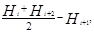
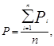
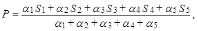
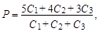
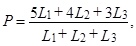
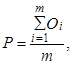
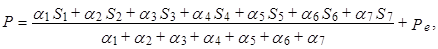
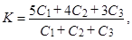

СТРОИТЕЛЬНЫЕ НОРМЫ И ПРАВИЛА
АВТОМОБИЛЬНЫЕ
ДОРОГИ
СНиП 3.06.03-85
ГОССТРОЙ СССР
МОСКВА 1989
РАЗРАБОТАНЫ Союздорнии (канд. техн. наук Б. С. Марышев, канд. экон. наук Е. М. Зейгер, канд. техн. наук О. И. Хейфец) и ГПИ «Союздорпроект» Минтрансстроя (В. В. Щербаков), Промтрансниипроектом Госстроя СССР (П. И. Зарубин).
ВНЕСЕНЫ Министерством транспортного строительства.
ПОДГОТОВЛЕНЫ К УТВЕРЖДЕНИЮ Главтехнормированием Госстроя СССР (В. И. Чуев).
С введением в действие СНиП 3.06.03-85 «Автомобильные дороги» с 1 января 1986 г. утрачивают силу СНиП III-40-78 «Правила производства и приемки работ. Автомобильные дороги».
При пользовании нормативным документом следует учитывать утвержденные изменения строительных норм и правил и государственных стандартов, публикуемые в журнале «Бюллетень строительной техники», «Сборнике изменений к строительным нормам и правилам» Госстроя СССР и информационном указателе «Государственные стандарты СССР» Госстандарта.
|
Госстрой СССР |
Строительные нормы и правила |
СНиП 3.06.03-85 |
|
Автомобильные дороги |
Взамен |
1.1. Настоящие правила распространяются на строительство новых и реконструкцию существующих автомобильных дорог общего пользования и ведомственных, за исключением временных дорог, испытательных дорог промышленных предприятий и автозимников.
1.2. При строительстве и реконструкции автомобильных дорог кроме требований настоящих правил следует соблюдать требования, содержащиеся в других документах части 3 СНиП, утвержденном проекте, а также нормативных документах по технике безопасности и промышленной санитарии.
1.3. При строительстве и реконструкции автомобильных дорог необходимо принимать меры по охране природной среды. Технологические решения должны предусматривать недопущение причинения ущерба окружающей природной среде и сохранение устойчивого природного баланса при выполнении работ, нарушение которых может вызвать изменение геологических или экологических условий.
Не допускается повреждение дерново-растительного покрова, выполнение планировочных и дренажно-осушительных работ за пределами территорий, отведенных для строительства дороги. Повреждения, нанесенные природной среде в зоне временного отвода в результате строительства временных сооружений и дорог, проезда строительного транспорта, стоянки машин, складирования материалов и т.п., должны быть устранены к моменту сдачи дороги в эксплуатацию.
|
Внесены |
Утверждены |
Срок |
При выборе методов производства работ и средств механизации следует учитывать необходимость соблюдения соответствующих санитарных норм, норм предельно допустимых выбросов загрязняющих веществ в атмосферу и водные объекты и устранения или максимального уменьшения других видов вредных воздействий на природную среду и прилегающие земельные угодья.
1.4. Склады органических вяжущих материалов должны быть оборудованы системой подогрева.
1.5. Каменные материалы (щебень, гравий) следует, как правило, разгружать на бункерных прирельсовых установках.
1.6. На площадках складирования минеральных материалов на территории асфальто- и цементобетонных заводов (АБЗ и ЦБЗ), смесительных установок, прирельсовых и припирсовых баз необходимо устраивать твердое покрытие с водоотводом.
1.7. Работу по устройству слоев дорожной одежды следует производить только на готовом и принятом в установленном порядке непереувлажненном и недеформированном земляном полотне.
Покрытие и основание с использованием вяжущих материалов следует устраивать на сухом и чистом нижележащем слое, а при использовании органических вяжущих материалов, кроме того, - на непромерзшем слое.
1.8. До начала устройства каждого слоя основания и покрытия следует производить разбивочные работы по закреплению положения бровок и высотных отметок слоев. При применении машин, оборудованных автоматическими следящими системами, закрепление бровок и высотных отметок осуществляется путем установки копирных струн с одной или двух сторон укладываемого споя. Разбивочные работы и их контроль следует выполнять с использованием геодезических инструментов.
1.9. Устройство слоев дорожной одежды в зимнее время разрешается только по земляному полотну, полностью законченному и принятому до наступления отрицательных температур, за исключением строительства в условиях вечной мерзлоты и двухстадийного строительства.
1.10. Перед началом работ по устройству слоев дорожной одежды в зимнее время земляное полотно или нижележащий слой должны быть очищены от снега и льда на участке сменной захватки. В снегопад и метель работы по устройству дорожной одежды не допускаются.
1.11. Подбор составов смесей для устройства оснований и покрытий следует производить в соответствии с требованиями соответствующих нормативных документов к этим материалам.
1.12. Уплотнение катками слоев земляного полотна, оснований и покрытий необходимо осуществлять от краев к середине, при этом каждый след от предыдущего прохода катка должен перекрываться при последующем проходе не менее чем на 1/3.
Скорость движения катка, при отсутствии специальных указаний в настоящих правилах, следует принимать равной 1,5-2 км/ч на первых 2-3 проходах и доводить к концу укатки до максимальной рабочей скорости, указанной в паспорте.
Число проходов катка и толщину уплотняемого слоя с учетом коэффициента запаса на уплотнение материалов следует устанавливать по результатам пробного уплотнения. Результаты пробного уплотнения необходимо заносить в общий журнал работ.
1.13. При операционном контроле качества работ по устройству дорожной одежды следует контролировать по каждому укладываемому слою не реже чем через каждые 100 м:
высотные отметки по оси дороги;
ширину;
толщину слоя неуплотненного материала по его оси;
поперечный уклон;
ровность (просвет под рейкой длиной 3 м на расстоянии 0,75-1 м от каждой кромки покрытия (основания) в пяти контрольных точках, расположенных на расстоянии 0,5 м от концов рейки и друг от друга).
Перечень других контролируемых параметров и порядок их контроля приведены в соответствующих разделах настоящих правил.
При выполнении контрольных работ разрешается применять новые быстродействующие приборы, показания которых сопоставимы с показаниями традиционных приборов.
1.14. При уширении проезжей части автомобильных дорог в случае их реконструкции следует обеспечивать плотное и ровное сопряжение укладываемых слоев с существующей дорожной одеждой.
1.15. При производстве работ на притрассовых карьерах следует предусматривать сбор и в необходимых случаях обогащение отсевов дробления, при наличии разнопрочных горных пород - обогащение каменных материалов по прочности.
При круглогодичном режиме работы карьера необходимо предусматривать мероприятия по предупреждению промерзания пород в массиве и смерзанию горной массы в процессе добычи и переработки.
2.1. Поточный метод строительства следует применять как на строительстве всей дороги, так и на отдельных ее участках или при выполнении отдельных видов дорожно-строительных работ.
В условиях строительства группы рассредоточенных объектов небольшой протяженности для выполнения одинаковых видов работ необходимо предусматривать организацию специализированных потоков, последовательно перемещающихся с одного объекта на другой в составе, как правило, одного комплексного потока.
Скорости потоков, величина организационных и технологических перерывов между выполнением отдельных видов работ должны устанавливаться на основе технико-экономического сравнения вариантов организации строительства с учетом оптимальной скорости выполнения наиболее сложных и трудоемких строительных процессов и других организационных и экономических факторов (достигнутого уровня использования и степени готовности технических ресурсов, возможности оперативного маневрирования ресурсами, использования конструкций и материалов, позволяющих наиболее полно механизировать строительные процессы, использования местных материалов и др.).
2.2. При строительстве ведомственных автомобильных дорог способы производства работ, выбор средств механизации и строительных материалов следует определять с учетом обеспечения сохранности действующих и возможности производства работ по строительству новых коммуникаций, зданий и сооружений, а при производстве работ на территории действующего предприятия - с учетом обеспечения нормальной его деятельности.
2.3. При строительстве автомобильных дорог следует использовать специализированные дорожные машины и оборудование, передвижные ремонтные мастерские, необходимые средства транспорта и связи, а также передвижные и легко транспортируемые временные сооружения для размещения строителей, устройства складов, мастерских и др.
2.4. Размещение АБЗ и ЦБЗ вдоль строящейся дороги и протяженность обслуживаемых ими участков должны устанавливаться проектом организации строительства исходя из скорости строительного потока.
При организации притрассовых АБЗ и ЦБЗ, расположенных на значительном удалении от железнодорожных станций (пристаней), необходимо организовывать прирельсовые (припирсовые) базы снабжения материалами.
При темпах строительства автомобильных дорог более 50 км в год одна прирельсовая база снабжения должна обслуживать от 1 до 3 притрассовых стоянок завода по приготовлению цементно- и асфальтобетонных смесей.
2.5. Комплекты машин типа ДС-100 и ДС-110 при незначительных объемах работ на одном объекте или невозможности обеспечения на нем необходимого фронта работ следует использовать в течение одного строительного сезона на двух-трех объектах при условии их полной заблаговременной подготовки к устройству дорожной одежды и четкой организации работы по передислокации машин.
2.6. Сроки выполнения сосредоточенных работ должны обеспечивать соблюдение принятой скорости и ритмичности комплексного потока работ по строительству автомобильных дрог.
Примечание. К сосредоточенным относятся работы по строительству больших мостов, возведению регуляционных сооружений, а также земляного полотна на отдельных участках с объемом земляных работ на 1 км, превышающим средний объем земляных работ на 1 км дороги в три и более раз, или резко отличающиеся повышенной сложностью производства и трудоемкостью от работ на смежных участках (переходы через болота, оползневые склоны, слабые грунты и др.).
2.7. Мероприятия по организационно-технической подготовке строительства автомобильных дорог, а также мероприятия по охране природной среды следует осуществлять по участкам дороги с учетом предусмотренных проектом очередности и сроков выполнения строительно-монтажных работ на каждом отдельном участке.
2.8. При строительстве внутренних дорог промышленных предприятий следует соблюдать следующие условия:
сооружение земляного полотна начинать, как правило, после завершения в зоне строительства дороги работ по вертикальной планировке;
сооружение дорожной одежды выполнять, как правило, после завершения устройства постоянных переездов через железнодорожные пути.
2.9. При строительстве внутрихозяйственных автомобильных дорог в колхозах, совхозах и других сельскохозяйственных предприятиях и организациях необходимо:
согласовывать сроки и порядок выполнения отдельных видов дорожностроительных работ с теми землепользователями, на производственно-хозяйственную деятельность которых (выпас скота, орошение посевных площадей и т.п.) они могут повлиять;
предусматривать возможность временного использования, по согласованию с сельскохозяйственными предприятиями и организациями, пригодных для нужд дорожного строительства (по их техническим характеристикам) сельскохозяйственных машин и прицепного (навесного) оборудования к ним, а также возможность временного привлечения трудовых ресурсов, высвобождающихся в сельскохозяйственных предприятиях и организациях в отдельные периоды сельскохозяйственного производства;
предусматривать, в обоснованных случаях, строительство указанных дорог стадийно, обеспечивая на первой стадии возможность открытия временного движения по земляному полотну или по одной из двух полос дорожной одежды (с ограничением вида и времени движения транспортных средств), а также улучшение, в первую очередь, труднопроезжих участков дороги.
2.10. Выбор средств механизации для производства различных видов работ при строительстве автомобильных дорог следует производить согласно рекомендуемому приложению 1 на основе технико-экономического сравнения различных вариантов схем комплексной механизации этих работ. Для производства работ в зимнее время в первой дорожно-климатической зоне следует использовать, как правило, средства механизации в северном исполнении.
Для распределения материалов при устройстве слоев оснований и покрытий. особенно на дорогах I и II категорий, следует преимущественно использовать самоходные распределители, оборудованные автоматическими следящими системами обеспечения направления движения и соблюдении вертикальных отметок.
3.1. Состав и объем геодезической разбивочной основы, а также фактические отклонения при выполнении геодезических работ в процессе строительства должны соответствовать требованиям СНиП 3.01.03-84.
3.2. В районах вечной мерзлоты при строительстве дорог по методу сохранения грунтов в основании насыпи в мерзлом состоянии расчистку дорожной полосы от леса и кустарника следует производить на ширину основания насыпи и только в зимний период.
Устройство просеки и корчевка пней «в задел», а также нарушение мохорастительного покрова в пределах полосы отвода запрещаются.
При строительстве дорог, запроектированных по принципу использования при эксплуатации в основании земляного полотна оттаивающих грунтов, расчистка дорожной полосы может производиться круглогодично и на всю ее ширину.
3.3. Допускается оставлять пни высотой не более 10 см в основании насыпей высотой не менее 1,5 м при устройстве одежд с усовершенствованными облегченными, переходными и низшими типами покрытий.
3.4. Отходы расчистки должны быть полностью вывезены до начала земляных работ. Не допускается оставлять отходы расчистки на границе полосы отвода.
По согласованию с органами лесного надзора допускается ликвидации неделовых отходов расчистки (захоронение, сжигание) в специально отведенных местах, при соблюдении противопожарных требований.
3.5. При подготовке к разработке грунтовых карьеров и резервов следует выполнить работы по закреплению на местности границ отведенного земельного участка, расчистке территории и устройству землевозных дорог.
При отводе под карьеры и резервы мест возможного водосбора до начала вскрыши и разработки грунта должны быть устроены сооружении поверхностного водоотвода. При влажности грунтов, подлежащих разработке, выше допустимой, следует предусматривать меры по их осушению.
3.6. В случаях, когда строительство автомобильной дороги опережает устройство пересекающих ее подземных коммуникаций, следует по согласованию с заинтересованными организациями предусматривать предварительную укладку кожухов или других устройств для последующей прокладки коммуникаций без нарушения целостности земляного полотна.
3.7. По завершении строительства все площади временного отвода должны быть рекультивированы в соответствии с требованиями проекта и переданы землепользователем.
4.1. Процесс сооружения земляного полотна должен быть организован, как правило, без разрывов.
Разрывы в возводимом земляном полотне допускаются на участках сосредоточенных работ или расположения искусственных сооружений и на участках с особыми грунтовыми условиями, где работы выполняются по индивидуальному проекту, предусматривающему технологические или сезонные перерывы (глубокие болота, оползневые участки, глубокие скальные выемки и т.п.).
4.2. Земляное полотно, кроме случаев строительства на спланированных территориях промышленных и сельскохозяйственных предприятий, следует возводить с опережением последующих работ (заделом). величина которого должна определяться ПОС и обеспечивать непрерывное и равномерное устройство дорожных оснований и покрытий.
Протяженность задела земляного полотна следует определять в каждом конкретном случае в зависимости от годовых объемов устройства покрытий:
|
Годовой объем устройства покрытий, км |
До 20 |
20 - 50 |
Св. 50 |
|
Степень готовности земляного полотна (задел), % |
|||
|
сосредоточенные работы (по объему) |
От 25 до 75 |
От 50 до 100 |
От 75 до 100 |
|
линейные работы (по протяженности) |
От 25 до 50 |
От 25 до 75 |
От 50 до 100 |
При строительстве дорог на спланированных территориях промышленных и сельскохозяйственных предприятий сооружение земляного полотна следует выполнять непосредственно перед устройством основания дорожной одежды.
4.3. На участках задела земляное полотно должно быть выполнено до проектной отметки, поверхность его, включая откосы, спланирована, откосы укреплены, обеспечена надежная работа водоотводных сооружений.
4.4. Насыпи высотой более 3 м из пылеватых и тяжелых глинистых грунтов должны быть закончены, как правило, за год до устройства асфальто- и цементобетонных покрытий, покрытий и оснований, устраиваемых с применением вязких битумов, а также из материалов, укрепленных цементом.
4.5. При строительстве насыпей на слабых основаниях, использовании в земляном полотне переувлажненных или заторфованных грунтов, оттаивающих мерзлых грунтов, а также при сооружении земляного полотна полностью в зимнее время до устройства покрытий и оснований, перечисленных в п. 4.4, должен быть установлен технологический перерыв для стабилизации земляного полотна.
Во время технологического перерыва допускается организация движения построечного транспорта с установлением необходимых ограничений по скорости и величине нагрузки.
После окончания технологического перерыва поверхность земляного полотна должна быть спланирована и при необходимости произведены досыпка и уплотнение.
4.6. Разбивку земляного полотна следует выполнять в соответствии со СНиП 3.01.03-84. При разбивке должны быть вынесены в натуру и закреплены все пикеты и плюсовые точки, вершины углов поворотов, главные и промежуточные точки кривых и установлены дополнительные реперы у высоких (свыше 3 м) насыпей и глубоких (более 3 м) выемок, вблизи искусственных сооружений, через 500 м на пересеченной местности, а также на участках комплексов зданий и сооружений дорожной и автотранспортной служб. Разбивочные знаки дублируются за пределами полосы производства работ.
Рабочая разбивка контуров насыпей и выемок, других сооружений, высотных отметок, линий уклонов поверхности откосов и т.д. производится от установленных знаков пикетов и реперов не реже чем через 50 м на прямых и 10-20 м на кривых непосредственно перед выполнением соответствующих технологических операций.
4.7. Плодородный грунт должен быть снят на установленную проектом толщину со всей поверхности, занимаемой земляным полотном, резервами и другими сооружениями и сложен в валы вдоль границ дорожной полосы или в штабели в специально отведенных местах.
4.8. Работы по устройству нагорных канав, валов, водосборных колодцев и других сооружений, предназначенных для перехвата и отвода от дорожной полосы ливневых, паводковых и талых вод, необходимо выполнять до начала основных работ по сооружению земляного полотна. Строительство водоотводных сооружений следует выполнять, начиная с пониженных мест рельефа.
4.9. Работы по устройству дренажей и прокладке различных коммуникаций в основании земляного полотна следует выполнять, как правило, до начала возведения насыпей. Плотность грунта при обратной засыпке траншей с уложенными коммуникациями должна быть не ниже требуемой для земляного полотна на соответствующей глубине.
4.10. Поверхность основания насыпи должна быть полностью освобождена от камней и комьев, диаметр которых превышает 2/3 толщины устраиваемого слоя, а также от посторонних предметов.
Поверхность основания должна быть выровнена. В недренирующих грунтах поверхности придается двускатный или односкатный поперечный уклон. Ямы, траншеи, котлованы и другие местные понижения, в которых может застаиваться вода, в процессе выравнивания поверхности засыпаются недренирующим грунтом с его уплотнением.
4.11. Уплотнение основания насыпей и выемок на требуемую глубину следует выполнять непосредственно перед устройством вышележащих слоев. Если требуемая глубина уплотнения превышает толщину слоя, эффективно уплотняемого имеющимися средствами, излишний слой грунта снимают, перемещают на другую захватку или во временный кавальер и уплотняют нижний слой, затем удаленный грунт возвращают на уплотненный нижний слой основания и уплотняют до требуемой плотности.
4.12. При уширении существующих насыпей в процессе реконструкции дороги поверхность откосов должна быть разрыхлена, на откосах насыпей высотой более 2 м устроены уступы шириной не менее 2 м.
4.13. Разработку выемок и резервов следует начинать, как правило, с пониженных мест рельефа. В процессе строительства должен быть обеспечен постоянный отвод поверхностных вод из всей зоны производства работ. Временные устройства для сбора поверхностного стока и водоотвода выполняются в соответствии с требованиями СНиП III-8-76.
4.14. Разработку выемок и отсыпку насыпей на косогорах круче 1 : 3 или оползневых склонах допускается производить только после строительства специальных защитных устройств.
4.15. В нескальных грунтах выемки следует разрабатывать в соответствии с требованиями СНиП III-8-76. Недобор следует ликвидировать при проведении планировочных работ непосредственно перед устройством слоев одежды.
4.16. Использование в одном слое насыпи разных видов грунтов не допускается, за исключением случаев, когда такое решение специально предусмотрено проектом. При изменении вида грунта в месте его разработки слои разных видов следует сопрягать по типу выклинивания.
4.17. Отсыпку грунта в насыпь следует производить от краев к середине споями на всю ширину земляного полотна, включая откосные части. Последующая подсыпка краевых или откосных частей не допускается.
В случае, когда не предусмотрено уплотнение откосов специальными средствами, допускается, в цепях уплотнения грунта в краевых частях, прилегающих к откосу, отсыпать слой на 0,3-0,5 м шире проектного очертания насыпи. Уширение не требуется при устройстве насыпей из крупнообломочных и песчаных грунтов и при высоте насыпи менее 2,0 м с откосами 1:2 и положе.
Излишний грунт убирают при планировке откосов на завершающем этапе возведения насыпи и используют для досыпки обочин, устройства съездов, рекультивации и т.п.
Каждый слой следует разравнивать, соблюдал проектный продольный уклон. Перед уплотнением поверхность отсыпаемого слоя должна быть спланирована под двускатный или односкатный поперечный профиль с уклоном 20-40 ‰ к бровкам земляного полотна.
Движение транспортных средств, отсыпающих на насыпи очередной слой, необходимо регулировать по всей его ширине.
4.18. Плотность грунта после уплотнения слоя не должна быть меньше установленной требованиями СНиП 2.05.02-85.
4.19. Уплотнение грунта в стесненных условиях при засыпке водопропускных труб, опор и в конусах мостов следует производить с применением специальных уплотняющих средств виброударного или ударного действия. Не допускается уплотнение трамбующими плитами на расстоянии менее 3 м от искусственных сооружений и при высоте засыпки над трубой менее 2 м.
Разрешается у труб производить отсыпку и послойное уплотнение грунта продольными (по отношению к трубе) проходами бульдозера и катков. При этом отсыпку и уплотнение грунта следует вести с обеих сторон трубы слоями одинаковой толщины.
4.20. Уплотнение рыхлых глинистых грунтов следует, как правило, начинать кулачковыми, решетчатыми катками или катками на пневматических шинах с неполной балластной нагрузкой (массой 10-16 т) и заканчивать - катками на пневматических шинах массой 25 т и более или самоходными вибрационными катками массой 16 т и более.
4.21. Уплотнение грунтов следует производить при влажности, близкой к оптимальной.
Влажность грунтов, уплотняемых катками на пневматических шинах, по отношению к оптимальному значению, определенному по ГОСТ 22733-77, не должна выходить за пределы приведенных в табл. 1.
4.22. При влажности менее оптимальной следует увеличивать число проходов катка, а при влажности менее допустимых значений, указанных в табл. 1, увлажнять грунт.
При уплотнении песчаных грунтов виброкатками следует проверять возможность достижения требуемой плотности при их естественной влажности.
4.23. При использовании грунтов, имеющих влажность более допустимых значений, следует предусматривать просушивание грунта: естественным способом, введением песка, сухого малосвязного грунта, шлаков, неактивных зол, укладываемых в виде дренирующих слоев или водопоглощающих прослоек, а также активных добавок (известь, золы уноса, гипс и др.), применяемых для осушения глинистых грунтов в основании и верхней части земляного полотна.
Таблица 1
|
Влажность при требуемом коэффициенте уплотнения |
|||
|
1-0,98 |
0,95 |
0,90 |
|
|
Пески пылеватые, супеси легкие, крупные |
Не более 1,35 |
Не более 1,6 |
Не нормируется |
|
Супеси легкие и пылеватые |
0,8 - 1,25 |
0,75 - 1,35 |
0,7 - 1,6 |
|
Супеси тяжелые пылеватые и суглинки легкие и легкие пылеватые |
0,85 - 1,15 |
0,8 - 1,2 |
0,75 - 1,4 |
|
Суглинки тяжелые и тяжелые пылеватые, глины |
0,95 - 1,05 |
0,9 - 1,1 |
0,85 - 1,2 |
4.24. Уплотнение просадочных и полупросадочных грунтов на проектную глубину следует производить трамбованием с последующей укаткой.
4.25. При использовании в качестве материала для возведения земляного полотна отходов горно-рудной, угледобывающей промышленности, зол, шлаков, строительных и бытовых отходов уплотнение их следует осуществлять, как правило, тяжелыми вибрационными или решетчатыми катками и трамбующими машинами.
При применении пылеобразующих отходов необходимо при производстве работ принимать меры по обеспыливанию (полив водой или закрепляющими растворами). Перед уплотнением горелые породы должны быть нейтрализованы поливом водой и выдерживанием в течение суток.
4.26. Окончательную планировку поверхности земляного полотна с приданием установленных проектом поперечных уклонов и доуплотнение поверхностного слон, планировку и укрепление откосов следует производить сразу после окончания возведения земляного полотна. Все нарушения поверхности земляного полотна, вызванные построечным транспортом и осадками. следует устранить непосредственно перед устройством дорожной одежды.
4.27. Планировку и укрепление обочин необходимо выполнять вслед за устройством дорожной одежды. При этом следует ликвидировать все временные въезды и съезды.
4.28. Водоотводные канавы и кюветы необходимо укреплять сразу же по мере их устройства.
4.29. Планировку и укрепление откосов высоких насыпей и глубоких выемок (включая устройство дренажей) следует производить сразу же после окончания сооружения их отдельных частей (ярусов).
4.30. При укреплении откосов путем посева трап по слою растительного грунта необходимо откосы выемок, разработанных в плотных глинистых грунтах, разрыхлять перед укладкой растительного грунта на глубину 10-15 см.
Гидропосев многолетних трав следует производить на предварительно увлажненную поверхность откосов или обочин.
4.31. При укреплении откосов сборными решетчатыми конструкциями их монтаж необходимо выполнить снизу вверх после устройства упорной бетонной бермы. По окончании монтажа необходимо заполнить ячейки растительным грунтом (с последующим посевом трав), каменными материалами или грунтом, обработанным вяжущим.
4.32. Укрепление откосов с использованием геотекстиля следует выполнять в последовательности: укладка полотен геотекстиля раскаткой рулонов сверху вниз по откосу с перекрытием полотен на 10-20 см и закреплением в пределах обочин; отсыпка растительного грунта с посевом трав; устройство дренирующего слоя и монтаж сборного крепления на подтопляемых участках откосов.
При применении геотекстиля с обработкой его вяжущим работы следует выполнять в таком порядке: планировка поверхности укрепляемого откоса; укладка полотна геотекстиля с закреплением его кромок штырями или присыпкой валиком из песка; поливка полотна вяжущим, например, битумной эмульсией; посыпка песком.
Стык геотекстиля с прилегающими сборными или монолитными бетонными элементами крепления необходимо осуществлять путем заведения полотна под элемент или приклеивания геотекстиля горячим битумом к поверхности элемента.
4.33. При укреплении подтопляемых откосов, конусов, дамб сборными плитами предварительно должен быть уложен материал обратного фильтра или выравнивающего слоя. Плиты необходимо укладывать снизу вверх. В зимний период подготовленная поверхность откоса должна быть очищена от снега и льда.
4.34. При укреплении откосов гибкими бесфильтровыми железобетонными покрытиями из блоков их следует укладывать на откосе снизу вверх впритык друг к другу. В случае, когда проектом предусмотрено закрепление блоков с помощью анкерных свай, укладывать блоки следует сверху вниз. Просвет между соседними блоками не должен превышать 15 мм.
4.35. При укреплении откосов цементобетоном методом пневмонабрызга предварительно необходимо уложить металлическую сетку и закрепить ее анкерами. Набрызг следует выполнять снизу вверх с последующим уходом за цементобетоном.
4.36. При устройстве обочин необходимо устранить деформации земляного полотна по всей площади обочин, досыпать грунт до установленного проектом уровня, спланировать и уплотнить.
Технология устройства на обочинах покрытий из монолитного и сборного цементобетона, асфальтобетона, битумоминеральной смеси, черного щебня, щебеночных (гравийных), грунтощебеночных (грунтогравийных) материалов аналогична технологии устройства из этих материалов оснований и покрытий дорожных одежд, приведенной в соответствующих разделах настоящих правил.
4.37. Монолитные бетонные водоотводные лотки следует устраивать механизированным способом с использованием навесного оборудования к машине для укладки укрепительных полос. Кромка лотка не должна превышать кромку покрытия в месте продольного стыка.
Деформационные швы при устройстве лотков следует нарезать в свежеуложенном бетоне с помощью металлической рейки, разрешается устраивать швы в затвердевшем бетоне однодисковым нарезчиком.
4.38. В зимний период разрешается выполнять разработку выемок и резервов в необводненных песках, гравийно-галечных и скальных грунтах; в глинистых грунтах при влажности в пределах, указанных в табл. 1, разработку выемок глубиной более 3 м; возведение насыпи из сосредоточенных резервов; устройство насыпи из песчаных грунтов на болотах; выторфовывание; укрепление откосов насыпей регуляционных сооружений и русел рек каменной отсыпкой, бетонными плитами и т.п.; устройство глубоких дренажных прорезей.
4.39. Для возведения насыпи в зимнее время применяют без ограничений скальные, крупнообломочные грунты и пески (непылеватые). Применение глинистых грунтов и пылеватых песков допускается при влажности не более оптимальной. Применение глинистых грунтов повышенной влажности допускается только при выполнении в соответствии с проектом мероприятий по обеспечению необходимой устойчивости земляного полотна.
Глинистые грунты повышенной влажности следует применять только в талом виде. Для устройства насыпей за задними гранями устоев и конусов и засыпки водопропускных труб следует применять талый грунт.
4.40. Основание под насыпь должно быть подготовлено в летнее время, а перед началом возведения насыпи тщательно очищено от снега и льда. При возведении насыпи на сильнопучинистых грунтах в районах с глубиной промерзания более 1,5 м нижние слои (1,2-1,5 м) следует устраивать до наступления устойчивых отрицательных температур воздуха.
4.41. Размер мерзлых комьев при возведении насыпей не должен превышать 30 см при уплотнении грунтов решетчатыми катками или трамбующими машинами и 15 см при уплотнении грунтов катками на пневматических шинах и вибрационными. Укладывать мерзлые комья грунта допускается на расстоянии не ближе 1 м от поверхности откосов. Общее количество мерзлого грунта не должно превышать 30 % общего объема грунта, укладываемого в насыпь, при уплотнении трамбованием и 20 % при уплотнении укаткой. Мерзлый грунт должен равномерно распределяться в теле насыпи.
4.42. Высоту насыпи, возводимой в зимнее время из глинистых и песчаных грунтов с включением мерзлых комьев, необходимо увеличить на 3 % от толщины слоя зимней отсыпки.
4.43. Уплотнение грунтов до требуемой плотности следует производить до их замерзания.
4.44. Замену слабого грунта в основании насыпи следует выполнять на болотах I типа с механическим, взрывным или гидравлическим удалением.
4.45. Выторфовывание следует производить, как правило, в зимнее время с заблаговременной подготовкой и содержанием путей для перемещения экскаватора и транспортирования грунта.
Насыпь с выторфовыванием следует сооружать, как правило, способом «от себя» с транспортированием грунта по возводимой насыпи и надвижкой грунта вперед бульдозером.
4.46. Посадку насыпи на прочное основание на болотах II и III типов необходимо выполнять методом выдавливания торфа весом насыпи. Для облегчения выдавливания следует производить рыхление торфа механическим или взрывным способом, устраивать торфоприемники (траншеи вдоль подошвы насыпи), отсыпать насыпь узким фронтом (способ перегрузки), а также осуществлять воздействие виброударной и ударной нагрузкой.
Насыпь при этом следует возводить сразу на полную расчетную высоту.
4.47. При сооружении насыпей с использованием в их основании сжимаемых грунтов должна быть обеспечена требуемая толщина отсыпки.
При применении метода временной пригрузки грунт из пригрузочного слоя после достижения заданной осадки насыпи следует использовать для отсыпки на другом участке, насыпь следует возводить равномерно на всю ее ширину.
4.48. Вертикальные песчаные дрены, применяемые для ускорения осадки и упрочнения основания, следует устраивать специальным комплектом оборудования, в котором в качестве основной машины используется либо вибровдавливающий погружатель свай, либо экскаватор с погружателем, снабженные специальным рабочим органом в виде обсадной трубы с раскрывающимся наконечником.
Для устройства вертикальных плоских дрен из текстильных и других ленточных дренирующих материалов следует применять специальное оборудование или приспособления к машине для погружения вертикальных песчаных дрен, обеспечивающие закрепление и подачу ленты в обсадную трубу с катушки и обрезку на нужной отметке.
Дренажные прорези следует заполнять песчаным грунтом по мере их устройства.
4.49. При отсыпке насыпи на слабом основании по специально установленному режиму (метод предварительной консолидации) каждый последующий слой устраивается после достижения грунтом основания прочности, достаточной для восприятия дополнительной нагрузки.
В процессе консолидации основания необходимо осуществлять наблюдение за осадкой насыпи для уточнения объема досыпки или снятия излишков грунта и оценки возможности устройства покрытия.
4.50. При устройстве в основании земляного полотна прослойки из геотекстиля полотна следует сшивать или склеивать. Для пропуска строительных машин полотна засыпают слоем не менее 0,3 м.
При наличии пней, кочек, углублений, воды на поверхности основания насыпи перед укладкой геотекстиля следует отсыпать песчаный выравнивающий слой, толщина которого должна быть равна величине неровностей.
Анкеровку полотен в откосных частях земляного полотна следует производить путем заворачивания свободных концов полотен длиной 1,5-2,0 м вокруг края грунтового слоя, отсыпанного по полотну. Завернутые концы должны быть засыпаны следующим по высоте грунтовым слоем.
4.51. Выемки в скальных грунтах следует разрабатывать механизированным или взрывным способом. Образованные взрывами откосы выемок в скальных грунтах должны быть очищены от неустойчивых камней, а также нависающего грунта поверхностных нескальных слоев.
4.52. Максимальный размер крупных включений в грунте, используемом для сооружения слоев насыпи, не должен превышать 2/3 толщины уплотняемого слоя.
4.53. Уплотнять крупнообломочные грунты, содержащие более 30 % глинистых фракций, следует при влажности, не превышающей допустимых значений для тяжелых супесей и легких суглинков, а при содержании глинистых фракций менее 30 % - при влажности, не превышающей допустимых значений для легких и пылеватых супесей, приведенных в табл. 1.
4.54. При уплотнении легковыветривающихся и размягчаемых крупнообломочных грунтов влажность мелких фракций должна быть не выше 1,2 оптимальной.
4.55. Защитные слои из глинистого грунта на откосах следует устраивать в процессе сооружения основной части насыпи.
4.56. При использовании крупнообломочных грунтов, склонных к быстрому размоканию, во время строительству следует принимать меры по предупреждению их избыточного увлажнения от дождя или поверхностного стока, перекрывая водозащитными слоями и устраивая строительный водоотвод.
4.57. Устройство земляного полотна на засоленных грунтах при высоком уровне грунтовых вод необходимо производить в период, когда их влажность соответствует требованиям табл. 1.
4.58. Верхний рыхлый слой засоленного грунта, перенасыщенный солями, и солевые корки толщиной более 3 см следует удалять с поверхности резервов и основания насыпи перед ее возведением.
4.59. Для возведения насыпей на засоленных грунтах при высоком уровне грунтовых вод и глубине резервов не более 0,5-0,6 м следует использовать бульдозеры и автогрейдеры. Применение грейдер-элеваторов для возведения насыпей на солончаках допускается в случае расположения уровня грунтовых вод не ближе 1 м от поверхности земли.
Отсыпку насыпи из привозного грунта на мокрых солончаках следует вести способом «от себя».
4.60. Земляное полотно в песчаных пустынях следует возводить, как правило, в зимне-весенний период.
4.61. Возведение насыпей в подвижных барханных песках путем поперечного перемещения песка с придорожных полос на расстояние до 30 м следует производить бульдозерами, оборудованными отвалами с увеличенными боковыми стенками.
4.62. При возведении насыпей на солончаках, покрытых мелкими песчаными барханами, при близких грунтовых водах допускается использовать бульдозеры при перемещении песка на расстояние до 100 м, с устройством промежуточных валов.
4.63. При строительстве дорог в песках, покрытых растительностью, необходимо принимать меры против ее повреждения, нарушения рельефа и разрыхления поверхности песков.
4.64. Устройство защитного слоя и укрепление откосов следует производить вслед за возведением насыпи из песка. Защитные слои из песка, укрепленного вяжущими материалами, необходимо устраивать согласно правилам укрепления грунтов, как правило, путем смешения непосредственно на земляном полотне.
Защитный слой на земляное полотно следует укладывать по способу «от себя».
4.65. Земляное полотно из песка следует возводить непрерывно. Законченные участки земляного полотна и прилегающие к ним пески необходимо сразу же укреплять.
4.66. При возведении земляного полотна, запроектированного по принципу использования при эксплуатации дороги грунтов основания земляного полотна в мерзлом состоянии, следует производить отсыпку насыпи после промерзания сезонно оттаивающего слоя не менее чем на 30 см. Ускорение промерзания достигается очисткой дорожной полосы от снега. При очистке не допускается нарушение мохорастительного покрова.
Маломерные древесные отходы, образовавшиеся при расчистке дорожной полосы, следует укладывать в основании насыпи в виде хворостяной выстилки.
Толщина слоя насыпи, отсыпанного в зимнее время по промерзшему основанию, должна быть не меньше глубины его сезонного оттаивания. Верхнюю часть насыпи следует, как правило, отсыпать в теплое время года из немерзлых грунтов.
4.67. Нижние слои насыпи на высоту 0,5 м следует отсыпать по способу «от себя», а последующие - продольным способом. Движение транспортных и дорожно-строительных машин по мохорастительному покрову в весенне-летний период не допускается.
4.68. При возведении земляного полотна, запроектированного по принципу использования при эксплуатации дороги грунтов основания земляного полотна в оттаивающем состоянии, отсыпку насыпи разрешается производить в любое время года (летом по способу «от себя») с сохранением мохорастительного покрова или удалением в необходимых случаях непригодных грунтов из основания по мере их оттаивания.
4.69. Разработку грунта в резервах в летнее время следует вести бульдозером, начиная с низовой стороны, по мере оттаивания грунта слоями толщиной не менее 15 см.
При разработке глинистых грунтов должны быть приняты меры, обеспечивающие водоотвод.
4.70. Насыпи на льдонасыщенных косогорах круче 1:10 следует возводить зимой отсыпкой из привозных грунтов по способу «от себя» на полный профиль.
По мере послойного возведения насыпи низовой откос следует закрывать слоем термоизоляционного материала. Для перехвата надмерзлотных и поверхностных вод с нагорной стороны следует устраивать валики, при этом верховые откосы валика должны укрепляться, а низовые - покрываться мохоторфяным слоем толщиной 0,3-0,5 м.
4.71. Работы по обеспечению мерзлого состояния льдонасыщенных грунтов в основаниях насыпи и предотвращению развития термокарстовых явлений (укладка в основание насыпи слоя из естественных и искусственных теплоизоляторов, отсыпка берм из мха и торфа, теплоизоляция откосов насыпи и др.) следует выполнять в зимнее время. Материал для теплоизоляции должен быть заготовлен заблаговременно и доставлен к месту работы в зимний период.
4.72. На участках действующей наледи и в местах ее возможного возникновения земляное полотно необходимо возводить, как правило, из привозных дренирующих или крупнообломочных грунтов. При использовании глинистых грунтов насыпь отсыпают сначала на неполную высоту и ширину, а затем производят досыпку насыпи и засыпку откосов дренирующим грунтом, толщина слоя которого должна быть не менее 0,5 м.
Если насыпь сооружают из глинистых грунтов на полную высоту и ширину, то со стороны сформирования наледи следует устраивать берму из дренирующего грунта шириной не менее 2 м и высотой не менее расчетной мощности наледи.
4.73. Разработку выемок в льдонасыщенных грунтах следует выполнять, как правило, в зимний период с применением взрывного способа или тяжелых бульдозеров-рыхлителей. Предусмотренные проектом мероприятия по укреплению откосов должны выполняться до начала оттаивания грунта.
4.74. При подготовке и разработке притрассовых карьеров для заготовки грунта в летний период необходимо руководствоваться следующими положениями:
карьеры следует подготавливать заблаговременно (в конце зимнего периода), производя тщательную расчистку поверхности от снега и удаление мохорастительного покрова, в карьерах, предназначенных к разработке в весенний период, рекомендуется укладывать на расчищенную поверхность полиэтиленовую пленку;
переувлажненные глинистые грунты необходимо разрабатывать способом послойного оттаивания на глубину 15-20 см, перемещая грунт бульдозером в штабель для просушивания, с последующей погрузкой в транспортные средства.
При разработке карьера необходимо своевременно устраивать водоотвод и временные покрытия для перемещения и стоянок автотранспорта и экскаватора.
4.75. До начала работ по сооружению земляного полотна должно быть проверено соответствие принятых в проекте и действительных показателей состава (крупность частиц, пластичность глинистых грунтов) и состояния (влажность, плотность) грунтов в карьерах, резервах, выемках, естественных основаниях.
При наличии в зоне работ склонов и откосов круче 1:3, а также слабых грунтов следует проверять нивелированием отсутствие осадок и сдвигов земляного полотна в период строительства.
4.76. При операционном контроле качества сооружения земляного полотна следует проверять:
правильность размещения осевой линии поверхности земляного полотна в плане и высотные отметки;
толщину снимаемого плодородного слоя грунта;
плотность грунта в основании земляного полотна;
влажность используемого грунта;
толщину отсыпаемых слоев;
однородность грунта в слоях насыпи;
плотность грунта в слоях насыпи;
ровность поверхности;
поперечный профиль земляного полотна (расстояние между осью и бровкой, поперечный уклон, крутизну откосов);
правильность выполнения водоотводных и дренажных сооружений, прослоек, укрепления откосов и обочин.
Допускаемые отклонения контролируемых геометрических параметров и плотности грунта приведены в обязательном приложении 2.
При операционном контроле качества земляных работ в зимних условиях дополнительно следует контролировать размер и содержание мерзлых комьев, а также качество очистки поверхности от снега и льда.
При операционном контроле качества сооружения земляного полотна на болотах дополнительно следует контролировать: полноту выторфовывания, режим отсыпки, величину осадки, геометрические размеры вертикальных прорезей, дрен и коэффициент фильтрации песка в них.
При операционном контроле качества земляных работ в районах вечной мерзлоты дополнительно следует контролировать глубину промерзания слоя сезонного оттаивания грунта и сохранность мохорастительного покрова.
4.77. Проверку правильности размещения оси земляного полотна, высотных отметок, поперечных профилей земляного полотна, обочин, водоотводных и дренажных сооружений и толщин слоев следует производить не реже чем через 100 м (в трех точках на поперечнике), как правило, в местах размещения знаков рабочей разбивки с помощью геодезических инструментов и шаблонов.
Плотность грунта следует контролировать в каждом технологическом слое по оси земляного полотна и на расстоянии 1,5-2,0 м от бровки, а при ширине слоя более 20 м - также в промежутках между ними.
Контроль плотности грунта необходимо производить на каждой сменной захватке работы уплотняющих машин, но не реже чем через 200 м при высоте насыпи до 3 ми не реже чем через 50 м при высоте насыпи более 3 м.
Контроль плотности верхнего слоя следует производить не реже чем через 50 м.
Дополнительный контроль плотности необходимо производить в каждом слое засыпки пазух труб, над трубами, в конусах и в местах сопряжения с мостами.
Контроль плотности следует производить на глубине, равной 1/3 толщины уплотняемого слоя, но не менее 8 см.
Отклонения от требуемого значения коэффициента уплотнения в сторону уменьшения допускаются не более чем в 10 % определений от их общего числа и не более чем на 0,04.
Глубину промерзания слоя сезонного оттаивания грунта следует проверять по кернам (шурфам) не реже чем через 100 м. Сохранность мохорастительного слоя определяется визуально.
4.78. Контроль влажности используемого грунта следует производить, как правило, в месте его получения (в резерве, карьере) не реже одного раза в смену и обязательно при выпадении осадков.
4.79. Плотность и влажность грунта следует определять по ГОСТ 5180-84. Для текущего контроля допускается использовать ускоренные и полевые экспресс-методы и приборы.
4.80. Однородность грунта следует контролировать визуально. При изменении однородности грунта его тип, вид и разновидность следует определять по ГОСТ 25100-82.
4.81. Ровность поверхности земляного полотна контролируется нивелированием по оси и бровкам в трех точках на поперечнике не реже чем через 50 м. Поверхность основания земляного полотна и промежуточных слоев насыпи в период строительства не должна иметь местных углублении, в которых может застаиваться вода.
4.82. Соответствие состава песка, используемого для вертикальных дрен, проектным требованиям следует определять в карьере один раз в смену.
5.1. Устройство дополнительных слоев оснований из щебня, гравия и песка следует производить в соответствии с требованиями пп. 7.9 и 7.10, а из укрепленных грунтов - в соответствии с требованиями разд. 6.
5.2. Бетонные смеси с легкими заполнителями, пористые каменные материалы, обработанные вяжущими, укрепленные грунты и золошлаковые смеси с легкими заполнителями следует приготовлять в смесителях принудительного перемешивания.
Температура смеси при укладке должна быть не ниже 5 °С.
Бетонные смеси с легкими заполнителями следует укладывать на подготовленное земляное полотно с помощью бетоноукладочных машин.
Поперечные и продольные швы следует устраивать путем вставки реек или нарезать в свежеуложенном бетоне. Движение построечного транспорта по теплоизолирующему слою разрешается только после достижения прочности материала не менее 70 % проектной.
5.3. Теплоизоляционные плиточные материалы (пенопласт и др.) следует укладывать с обеспечением равномерного опирания плит на поверхность земляного полотна. При необходимости следует выравнивать поверхность земляного полотна песком.
При двух- и трехъярусном теплоизолирующем слое швы нижележащего ряда плит необходимо перекрывать вышележащими плитами.
Первый над плитами слой дорожной одежды следует отсыпать на толщину не менее 0,25 м в плотном теле способом «от себя».
5.4. Дренирующие и капилляропрерывающие прослойки из нетканых синтетических материалов и гидроизолирующие прослойки из различных материалов (изол, полиэтиленовая пленка, стабилизированная 2 % канальной сажи и др.) необходимо устраивать, начиная с низовой (по отношению к направлению стока воды) стороны.
Полотнища материала следует укладывать внахлестку с перекрытием на 0,1 м и закреплять скобами или сшивать.
Гидроизолирующий материал следует укладывать на спланированное грунтовое основание, коэффициент уплотнения которого должен быть не менее 0,95.
Передвижение транспортных средств или строительных машин непосредственно по разложенному материалу не разрешается.
Вышележащие слои следует устраивать путем надвижки материалов или грунтов способом «от себя». Минимальная толщина слоя грунта или материала дорожной одежды, при которой допускается проезд строительных машин, должна составлять в уплотненном состоянии не менее 0,25 м.
5.5. При использовании изола грунт над и под прослойкой на толщину не менее 10 см не должен иметь зерен крупнее 40 мм, а содержание зерен размером 5-40 мм не должно выходить за пределы допустимого зернового состава.
При использовании полиэтиленовой пленки грунт не должен иметь зерен крупнее 20 мм, а содержание зерен размером 5-20 мм не должно выходить за пределы допустимого зернового состава.
При укладке гидроизолирующего материала между прослойками из нетканого синтетического материала требования к крупности грунта не предъявляются.
5.6. Отдельные полотнища пленки при укладке необходимо склеивать или сваривать.
При устройстве гидроизолирующей прослойки из полиэтиленовой пленки, за исключением конструкций с грунтом в обойме или подтопляемых непосредственно поверхностными или грунтовыми водами, допускается устраивать стыки внахлестку и скручиванием при условии, что они находятся под нагрузкой от веса вышележащих слоев грунта и дорожной одежды не менее 9,8 МПа. Ширина нахлеста должна быть не менее 0,5 м. Пленку следует укладывать свободно, без натяжки, в ветреную погоду крап полотнищ нужно закреплять.
Полиэтиленовая пленка не должна находиться под воздействием прямой солнечной радиации более 2-3 ч, отсыпку и надвижку грунта следует вести узким фронтом. Изол следует засыпать в день его укладки.
5.7. При устройстве морозозащитных и дренирующих слоев необходимо контролировать соответствие качества материалов и песчаных грунтов требованиям проекта, плотность материала и отсутствие загрязнения грунтом выходов дрен на откосах земляного полотна.
5.8. При устройстве теплоизолирующих слоев из бетонов, каменных материалов, обработанных вяжущими, укрепленных грунтов и золошлаковых смесей необходимо контролировать качество смесей путем определения прочности образцов материалов в соответствии с требованиями соответствующих разделов настоящих правил.
При устройстве теплоизолирующих слоев из пенопласта необходимо проверять равномерность опирания плит на поверхность земляного полотна и толщину первого слоя дорожной одежды над пенопластом.
При устройстве дренирующих, капилляропрерывающих и гидроизолирующих прослоек необходимо проверять толщину и гранулометрический состав слоев грунта над и под прослойкой, качество стыковки полотнищ материала и толщину первого слоя дорожной одежды над прослойкой.
5.9. При устройстве морозозащитного слоя из непучинистых или слабопучинистых грунтов контроль качества грунта следует проводить в карьере путем отбора соответственно не менее 3 и 10 проб из каждых 500 м3 песчаного грунта и проводить их испытание с определением содержания пыли и глины и величины коэффициента фильтрации по ГОСТ 25584-83. Допускается устанавливать величину коэффициента фильтрации расчетным путем в зависимости от гранулометрического состава песчаного грунта.
5.10. Толщину первого слоя дорожной одежды и толщину слоев грунта над и под прослойкой по п. 5.5 настоящих правил следует контролировать линейкой в трех точках на поперечнике (по оси и у бровок земляного полотна) не реже чем через 100 м.
5.11. Плотность материалов слоя необходимо контролировать в трех точках на поперечнике (по оси и у кромок проезжей части) не реже чем через 100 м методами, указанными в п. 4.79.
5.12. Гранулометрический состав слоев грунта над и под гидроизолирующей прослойкой следует контролировать один раз в смену.
6.1. Смещение грунтов и отходов промышленности с вяжущими материалами следует осуществлять:
на дороге, специальной площадке или в карьере, используя однопроходные грунтосмесительные машины и дорожные фрезы;
в смесительных установках, как правило, с принудительным перемешиванием.
Крупнообломочные грунты и отходы промышленности, а также, смеси крупнообломочных грунтов или отходов промышленности (в количестве не менее 20-30 %) с мелким песком допускается смешивать с вяжущими материалами в установках со свободным перемешиванием.
6.2. Укрепленные грунты при устройстве дорожных одежд следует укладывать в один или несколько слоев в зависимости от толщины основания или покрытия и применяемых машин.
При этом верхний слой основания и покрытия следует устраивать из смесей, приготовленных, как правило, в установках.
6.3. При смешении крупнообломочных грунтов с вяжущими материалами в смесительных установках грунты не должны содержать зерен крупнее 40 мм; при отсутствии в крупнообломочных грунтах зерен крупнее 25 мм суммарное количество зерен размером от 2 до 25 мм не должно быть более 70 % массы грунта. Для грунтовых частиц размером менее 0,5 мм, входящих в состав крупнообломочных грунтов, число пластичности должно быть не более 12. При смешении крупнообломочных грунтов с вяжущими на дороге размер зерен в грунте не должен превышать 25 мм.
6.4. Глинистые грунты с числом пластичности более 12 перед смешением с вяжущими материалами должны быть размельчены.
После размельчения содержание в грунте частиц размером более 5 мм должно составлять не свыше 25 % массы, в том числе содержание частиц размером более 10 мм - не свыше 10 %.
При измельчении тяжелых суглинков и глин влажностью менее 0,3 влажности на границе текучести грунта в сухую погоду при температуре воздуха свыше 20 °С в грунт необходимо вводить добавки поверхностно-активных веществ: сульфитно-дрожжевую бражку, смачиватель ОП-7 или ОП-10, гидрофобизирующую жидкость ГЖ-136-41, гудрон нейтрализованный ГНД, количество которых следует принимать в соответствии с табл. 2.
Растворимые добавки следует вводить в грунт в виде водных растворов, нерастворимые - в виде эмульсий.
Таблица 2
|
Количество добавок, % к массе цементогрунтовой или иной смеси |
|
|
Гидрофобизирующая жидкость (ГЖ-136-41) |
0,1 - 0,2 |
|
Сульфитно-дрожжевая бражка (СДБ) |
0,05 - 0,5 |
|
Смачиватель ОП-7 или ОП-10 |
0,05 - 0,5 |
|
Гудрон нейтрализованный (ГНД) |
0,015 - 0,03 |
6.5. Укладку смеси грунта с вяжущими и ее уплотнение следует выполнить при влажности, близкой к оптимальной, с учетом требований п. 6.15. Плотность укрепленного материала должна быть не менее 0,98 максимальной по ГОСТ 22733-77.
При использовании в качестве вяжущего материала цемента в сочетании с органическими вяжущими или при применении только органического вяжущего количество воды, соответствующее оптимальной влажности смеси, должно быть уменьшено на количество используемого органического вяжущего или на количество воды в эмульсии, если органический вяжущий материал эмульгирован.
При укреплении известью или активной золой уноса вводят дополнительную добавку воды (2-4 %) сверх оптимальной влажности.
Для достижения требуемой плотности и ровности слоев грунтов, укрепленных вяжущими материалами, следует применять уплотнение, сочетающее предварительное вибрирование смеси вибробрусом укладчика и укатку самоходными катками вибрационными или на пневматических шинах.
6.6. Устройство оснований и покрытий из грунтов, укрепленных неорганическими вяжущими материалами, следует осуществлять преимущественно при температуре не ниже 5 °С. При более низких температурах работы следует проводить, выполняя требования пп. 6.31-6.37.
6.7. При укреплении грунтов неорганические вяжущие материалы следует вводить в грунт с использованием весовых или объемных дозаторов независимо от метода приготовления смеси.
6.8. При укреплении грунтов неорганическими вяжущими материалами необходимо учитывать количество воды, вводимой с раствором солей или щелочей.
6.9. При смешении на дороге крупнообломочных, песчаных или тинистых грунтов с цементом и добавками в виде битумных эмульсий, жидкого битума, нефтяного гудрона или сырой нефти следует сначала ввести в грунт органическое вяжущее, перемещать его с грунтом и затем последовательно вводить в смесь цемент и воду.
6.10. При укреплении грунта цементом с добавками золы уноса, золошлаковых смесей или других несвязных дисперсных материалов добавки следует распределить по грунту, перемешать их с грунтом, спланировать смесь и затем последовательно вводить в нее цемент и воду.
6.11. При укреплении грунта цементом с добавкой молотой негашеной извести грунт с цементом следует смешивать через сутки после введения извести и воды.
6.12. При укреплении отходов промышленности (золошлаковые смеси, отсевы дробления горных пород и др.) неорганическими вяжущими материалами следует руководствоваться требованиями пп. 6.6-6.11.
6.13. При укреплении глинистых грунтов неорганическими вяжущими материалами следует использовать, как правило, способ смешения грунта с вяжущими на дороге. Движение транспортных средств по слою глинистых грунтов, предназначенному для укрепления, не допускается.
6.14. При укреплении грунтов известью совместно с добавками зол уноса или золошлаковых смесей следует ввести в грунт добавки и перемешать их с ним до однородного состояния, затем ввести известь, увлажнить грунт до оптимальной влажности и через сутки спланировать и уплотнить смесь.
6.15. Влажность смеси грунтов с неорганическими вяжущими перед уплотнением должна соответствовать оптимальной, но в зависимости от погодных условий во время производства работ допускается не более чем на:
2-3 % выше оптимальной при сухой погоде без осадков и температуре воздуха выше 20 °С;
1-2 % меньше оптимальной при температуре ниже 10 °С и при наличии осадков.
При температуре воздуха выше 20 °С для замедления процесса схватывания смеси и обеспечения оптимальных условий уплотнения следует вводить в смесь добавку СДБ (в виде водного раствора) или ГЖ-136-41 (в виде эмульсии) в количестве не более 0,5 % массы цемента при укреплении несвязных грунтов и 1-1,5 % при укреплении связных грунтов или добавки органических вяжущих в виде битумных эмульсий, жидкого битума, нефтяного гудрона или сырой нефти в количестве, как правило, 1-3 % массы грунта.
6.16. Уплотнение смеси грунта с цементом до максимальной плотности должно быть закончено не позднее чем через 3 ч, а при пониженных температурах (ниже 10 °С) - не позднее чем через 5 ч после введения в смесь воды или раствора солей.
При укреплении грунтов цементом совместно с добавками поверхностно-активных веществ (СДБ, ГЖ-136-41, гудрона нейтрализованного и других) или совместно с добавками битумных эмульсий, жидкого битума, гудрона или сырой нефти смесь следует уплотнить не позднее чем через 8 ч после введения воды. При укреплении грунтов известью или активными золами уноса, используемыми в качестве самостоятельного вяжущего, уплотнение следует заканчивать не позднее чем через 14-18 ч после введения в смесь воды.
6.17. Для ухода за свежеуложенным грунтом, укрепленным неорганическими вяжущими, следует распределять по поверхности грунта 50 %-ные быстрораспадающиеся или среднераспадающиеся эмульсии с использованием битума или других органических вяжущих из расчета 0,5-0,8 л/м2.
Для ухода за свежеуложенным споем укрепленного грунта можно распределять также нефтяной гудрон или нейтрализованный гудрон (ГИД) из расчета 0,5-0,6 л/м2 или слой песка толщиной 5 см с поддержанием его во влажном состоянии.
6.18. Движение построечного транспорта по слою укрепленного основания или покрытия разрешается через 5 сут после его устройства в случае применения укрепленного материала, удовлетворяющего требованиям I класса прочности при толщине укрепленного слоя не менее 15 см, а также применения укрепленного материала, удовлетворяющего требованиям II класса прочности при толщине укрепленного слоя не менее 20 см. При толщине укрепленного слоя меньше указанных, а также при применении укрепленного материала, удовлетворяющего требованиям III класса прочности, движение построечного транспорта следует открывать через 7 сут после устройства слоя.
Допускается открывать движение построечного транспорта и укладывать вышележащие слои на следующий день после устройства укрепленного слоя грунта в случае укрепления неорганическими вяжущими связных грунтов, а также в течение первых двух суток в случае укрепления грунтов цементом или карбамидоформальдегидной смолой совместно с добавками в виде поверхностно-активных веществ, битумных эмульсий. жидких битумов, гудронов, сырой нефти или при использовании медленнотвердеющих вяжущих как без цемента, так и в сочетании с ним.
6.19. При укреплении переувлажненных грунтов цементом, известью или другими неорганическими вяжущими влажность обрабатываемого грунта не должна превышать значений, приведенных в табл. 3.
Таблица 3
|
Допускаемая влажность (в долях от оптимальной) при коэффициенте уплотнения 1 - 0,98 |
|
|
Пески пылеватые |
1,35 |
|
Супеси легкие крупные, супеси легкие |
1,25 |
|
Супеси пылеватые, супеси тяжелые пылеватые, суглинки легкие |
1,15 |
|
Суглинки тяжелые, глины песчанистые и пылеватые |
1,1 |
6.20. Осушать переувлажненный грунт следует путем укладки его в валы, бурты (пески, супеси), многократного рыхления (при солнечной погоде), а также обработки его известью (порошкообразной негашеной, молотой комовой и пушонкой) или активной золой уноса.
Количество добавок вяжущих материалов, осушающих грунт, назначают по табл. 4.
Таблица 4
|
Количество добавок молотой негашеной извести или активной золы уноса сухого отбора, % к массе грунта при влажности его в относительных единицах от оптимальной влажности |
|||
|
1,2 |
1,4 |
1,6 |
|
|
Пески и супеси пылеватые |
- |
0,5 |
1,0 |
|
Суглинки легкие |
- |
0,5 |
1,5 |
|
Суглинки тяжелые |
1,0 |
2,0 |
- |
|
Глины песчанистые и пылеватые |
1,5 |
3,0 |
- |
Примечание. Добавка молотой негашеной извести приведена в пересчете на CaO + MgO, добавка активной золы уноса - в пересчете на содержание свободной СаО.
6.21. При подборе состава для улучшения технических и технологических свойств грунтов, укрепленных:
жидкими битумами, - следует применять известь, сланцевую золу, золы уноса сухого отбора, золошлаковые смеси гидроудаления с добавками или без добавок извести, молотый известняк, молотую опоку с известью;
сланцевыми битумами, битумными эмульсиями, каменноугольными вяжущими, - известь, известковую пыль, цемент, золы уноса;
органическими вяжущими (кроме смолы карбамидоформальдегидной), - катионактивные и анионактивные вещества (типа Э-1, кубовые остатки СЖК, второй жировой гудрон, госсиполовую смолу и др.).
6.22. Основания и покрытия из грунтов, укрепленных органическими вяжущими материалами, разрешается устраивать в сухую погоду при температуре воздуха не ниже 10 °С. Смешение грунтов с битумной эмульсией допускается при температуре воздуха не ниже 5 °С. Влажность крупнообломочных и песчаных грунтов перед введением органического вяжущего должна находиться в пределах 2-5 %, а влажность глинистых грунтов - в пределах 0,2-0,4 влажности на границе текучести грунта.
6.23. При смешении в стационарных смесительных установках крупнообломочных и песчаных грунтов или супесей с жидким битумом, битумной эмульсией, каменноугольным дегтем и активными добавками, а также грунтов с битумной эмульсией или жидким битумом совместно с цементом вяжущие вещества, добавки (кроме молотой негашеной извести) и вода должны вводиться в грунт одновременно и в полном объеме.
6.24. При использовании в качестве активных добавок молотой негашеной извести ее необходимо распределить по грунту и перемотать с ним. Последующую обработку грунта органическими вяжущими в смесительной установке следует производить не ранее чем через 12 ч и не позднее чем через 24 ч после внесения извести.
Влажность грунта перед внесением негашеной извести должна обеспечивать гидратацию (гашение) извести.
6.25. При смешении на дороге крупнообломочных и песчаных грунтов или супесей с органическими вяжущими материалами вяжущее должно вводиться в грунт за один проход грунтосмесительной машины; влажность грунта при этом должна удовлетворять требованиям п. 6.22, а влажность смеси перед уплотнением должна быть оптимальной с учетом требований пп. 6.5 и 6.15.
6.26. При смешении глинистых грунтов с органическими вяжущими материалами следует применять метод приготовления смеси на дороге с помощью однопроходных или многопроходных грунтосмесительных машин.
6.27. При укреплении грунтов жидкой карбамидоформальдегидной смолой с добавкой эмульгированных битума или нефтяного гудрона следует предварительно смешать их в смесителях с принудительным перемешиванием без подогрева. Смолобитумное вяжущее может храниться без отвердителя не более 3 сут. Готовое вяжущее с добавкой отвердителя необходимо вводить в грунт не позднее чем через 3 ч после смешения.
При использовании смолы со сроком хранения более 2 мес (если она отвечает техническим требованиям), а также при работе при температурах воздуха свыше 25 °С следует вводить сначала смолобитумное вяжущее, затем отвердитель.
При укреплении грунтов карбамидоформальдегидными смолами с использованием в качестве добавки сырой нефти или СДБ порядок их введения определяется применяемыми средствами механизации.
6.28. Грунты, укрепленные органическими вяжущими материалами совместно с известью или цементом, следует уплотнять не позднее чем через 2 ч после окончания перемешивания смеси. При температуре воздуха ниже 15 °С разрыв между окончанием перемешивания смеси и началом ее уплотнения допускается до 4 ч.
Уплотнение грунтов, укрепленных органическими вяжущими материалами. должно заканчиваться в течение смены. Если в процессе работ по уплотнению выпадали атмосферные осадки и температура воздуха была ниже 15 °С, допускается повторное уплотнение смеси, но не позднее чем через 2 сут для грунта с добавкой цемента и 4 сут - для смеси грунта с добавкой извести.
6.29. За уплотненным споем грунта, укрепленного битумной эмульсией или жидким битумом с цементом при температуре воздуха выше 15 °С и отсутствии осадков, необходимо осуществлять уход путем розлива битумной эмульсии из расчета 0,6-0,8 л/м2. В случае устройства вышележащего конструктивного слоя не позднее чем через сутки уход не требуется.
6.30. Движение построечного транспорта по слою из грунтов, укрепленные органическими вяжущими, допускается в соответствии с требованиями п. 6.18.
6.31. При отрицательной температуре воздуха следует предусматривать меры против смерзания укрепляемых грунтов.
6.32. При отрицательной температуре воздуха в грунт необходимо вводить добавки, понижающие температуру замерзания воды (противоморозные добавки), в количестве 0,5-1,5 % массы грунта.
6.33. Добавки, связывающие воду (известь, цемент, гипс и др.), следует вносить в грунт в порошкообразном состоянии перед введением растворов противоморозных добавок.
6.34. Крупнообломочные и песчаные грунты с вяжущими материалами следует смешивать в смесительных установках, а глинистые грунты - на дороге с использованием однопроходных или многопроходных грунтосмесительных машин.
6.36. Уход за уплотненным слоем грунта, укрепленного цементом, следует осуществлять с помощью слоя песка толщиной не менее 6 см.
Движение транспортных средств по укрепленному слою основания или покрытия разрешается не ранее чем через 20 сут. В период оттепелей и весеннего таяния движение транспортных средств по слою не допускается.
6.36. При температуре воздуха ниже минус 10 °С в районах с устойчивой отрицательной температурой и коротким строительным сезоном при необходимости обеспечения высоких годовых темпов строительства допускается приготовление цементогрунтовых смесей только из несвязных грунтов путем смешения их с цементом без введения воды. При отсутствии задела земляного полотна приготовленная смесь должна храниться в штабелях до наступления положительных температур, после чего смесь следует распределить, увлажнить с перемешиванием и уплотнить. При наличии задела готового и принятого земляного полотна приготовленная смесь хранится в виде конструктивного слоя дорожной одежды до наступления положительной температуры, после чего смесь следует увлажнить с перемешиванием и уплотнить. Цементогрунтовые смеси при температуре воздуха ниже минус 10 °С следует приготовлять не ранее чем за 3 мес до наступления плюсовых температур.
6.37. В районах с суровыми климатическими условиями при необходимости ускорения открытия движения по дороге допускается в зимнее время укладывать на основание из предусмотренных п. 6.3 смесей покрытия из сборных железобетонных плит. На участках, не имеющих после оттаивания земляного полотна деформаций покрытия, следует омоноличивать швы. При наличии деформаций покрытия следует демонтировать плиты, выровнять и уплотнить основание, уложить плиты и омонолитить швы.
6.38. При устройстве оснований и покрытий из укрепленных грунтов следует дополнительно к п. 1.13 контролировать:
не реже одного раза в смену
гранулометрический состав крупнообломочных и песчаных грунтов по ГОСТ 12536-791;
число пластичности глинистых грунтов - по ГОСТ 5180- 84;
степень размельчения глинистых грунтов путем рассева проб на ситах с отверстиями 5 и 10 мм;
температуру органического вяжущего перед использованием; однородность эмульсии - отсутствие расслоения; качество смеси путем определения прочности образцов на сжатие; при хранении сухих смесей в штабеле дополнительно определяют температуру смеси на глубине 0,2-0,4 м;
не реже чем через 200 м
влажность обрабатываемых грунтов и готовой смеси перед ее уплотнением и плотность материала в уплотненном слов в трех точках на поперечнике (по оси и на расстоянии 0,5 м от кромки слоя) в соответствии с требованиями п. 4.79.
не реже одного раза в 5 смен
содержание легкорастворимых солей в засоленных грунтах по ГОСТ 25100-82;
пригодность зол уноса и золошлаковых смесей;
постоянное соблюдение требований по уходу.
6.39. Пригодность зол уноса и золошлаковых смесей или молотого известняка для использования их в качестве добавок в несвязные грунты следует определять по содержанию в них частиц размером мельче 0,071 мм (не менее 60 %) и крупнее 2 мм (не более 5 %). Потери при прокаливании материалов должны быть не свыше 10 %. Для связных грунтов могут быть использованы более крупные фракции золошлаковых смесей.
6.40. Для контроля прочности отбирают смесь и готовят три образца на 250 м3 смеси.
Отклонение от требуемых показателей прочности допускается:
при приготовлении смесей в карьерных смесительных установках - не более ± 8 %;
при приготовлении смесей однопроходной грунтосмесительной машиной - не более ± 15 %;
при приготовлении смесей дорожной фрезой - не более ± 25 %.
6.41. Коэффициент уплотнения грунтов, укрепленных неорганическими вяжущими материалами, следует определять как отношение плотности высушенного образца укрепленного грунта, взятого из уплотненного слоя, к плотности высушенной смеси грунта с вяжущими, уплотненной по ГОСТ 22733-77.
Коэффициент уплотнения для грунтов, укрепленных органическими вяжущими материалами без добавок портландцемента, следует определять как отношение плотности высушенного образца укрепленного грунта, взятого из уплотненного слоя. к плотности смеси грунта с вяжущими, уплотненной при оптимальной влажности под нагрузкой 30 МПа; при добавке в смесь грунта с органическим вяжущим портландцемента или карбамидной смолы образцы следует уплотнять под нагрузкой 15 МПа.
7.1. Наименьшая толщина распределяемого слоя должна в 1,5 раза превышать размер наиболее крупных частиц и быть не менее 10 см при укладке на прочное основание и не менее 15 см при укладке на песок.
Максимальная толщина слоя не должна превышать значений, указанных в табл. 5.
Таблица 5
|
Максимальная толщина уплотненного слоя, см, при применении катков |
||||
|
с гладкими вальцами массой 10 т и более |
решетчатых и на пневматических шинах массой 15 т и более |
вибрационных и комбинированных массой, т |
||
|
до 10 |
16 и более |
|||
|
Трудноуплотняемый (из изверженных и метаморфических пород марки по прочности 1000 и более, гравий прочный, хорошо скатанный, шлаки остеклованной структуры) |
18 |
24 |
18 |
24 |
|
Легкоуплотняемый (из изверженных и метаморфических пород марки по прочности менее 1000, осадочные, гравий неокатанный, шлаки с пористой структурой) |
22 |
30 |
22 |
30 |
7.2. Объем каменного материала в насыпном виде следует определять с учетом коэффициента запаса на уплотнение. Для песчано-гравийных (щебеночных) смесей оптимального зернового состава и щебня фракций 40-70 и 70-120 мм марки по прочности 800 и более коэффициент запаса материала на уплотнение следует ориентировочно принимать 1,25-1,3, а для щебня марок по прочности 600-300 - 1,3-1,5. Коэффициент запаса шлака на уплотнение в зависимости от его плотности следует ориентировочно принимать 1,3-1,5.
7.3. Разрешается вывозить щебень и гравий и укладывать их в штабель на земляном полотне или промежуточном складе для последующего использования при устройстве дорожной одежды.
7.4. Работы по устройству щебеночных оснований и покрытий методом заклинки следует производить в два этапа:
распределение основной фракции щебня и его предварительное уплотнение (обжатие и взаимозаклинивание);
распределение расклинивающего щебня (расклинцовка двух-, трехразовая) с уплотнением каждой фракции. Для оснований допускается одноразовая расклинцовка. При применении щебня осадочных пород марки по прочности менее 600 при устройстве оснований работы можно выполнять в один этап.
Доуплотнение при необходимости следует осуществлять регулированием движения построечного транспорта по ширине основания (покрытия).
7.5. На первом и втором этапах основание уплотняют катками на пневматических шинах массой не менее 16 т с давлением воздуха в шинах 0,6-0,8 МПа, прицепными вибрационными катками массой не менее 6 т, решетчатыми массой не менее 15 т, самоходными гладковальцовыми массой не менее 10 т и комбинированными массой более 16 т. Общее число проходов катков статического типа должно быть не менее 30 (10 на первом этапе и 20 на втором), комбинированных типов - не менее 18 (6 и 12) и вибрационного типа - не менее 12 (4 и 8).
Основания из щебня марок по прочности менее 600 и по пластичности Пл2, Пл3 уплотняют катками на пневматических шинах массой не более 16 т не менее чем за 20 проходов или виброплитами.
7.6. Для уменьшения трения между щебенками и ускорении взаимозаклинивания укатку следует производить, поливая щебень водой (ориентировочно 15-25 л/м2 при уплотнении шлакового щебня - 25-35 л/м2 на первом этапе и 10-12 л/м2 по расклинивающей фракции).
7.7. На втором этапе следует производить расклинцовку слоя щебня фракциями мелкого щебня с последовательно уменьшающимися размерами.
При использовании трудноуплотняемого щебня слой щебня перед распределением расклинивающего материала следует обрабатывать органическим вяжущим материалом из расчета 2-3 л/м2.
Расход расклинивающих фракций щебня следует принимать по табл. 6.
7.8. После окончания уплотнения покрытия по его поверхности следует распределять каменную мелочь из изверженных пород марки по прочности не ниже 800 (из осадочных пород - не ниже 600) в количестве 1 м3 на 100 м2 и уплотнять ориентировочно за 4-6 проходов катка.
По окончании уплотнения шлакового слон из активных и высокоактивных шлаков и случае, если сразу не устраивается вышележащий слой, следует производить поливку его водой в течение 10-12 дней из расчета 2-2,5 л/м2.
Таблица 6
|
Расход расклинивающих фракций, м3, на 1000 м2 при их размерах, мм |
|||
|
20 - 40 |
10 - 20 |
5 - 10 |
|
|
40 - 70 |
- |
15 |
10 |
|
70 - 120 |
10 |
10 |
10 |
Примечание. При строительстве оснований из щебня фракции 40-70 мм методом заклинки допускается применять одноразовую расклинку смесью щебеночных и песчано-щебеночных фракций 5-20, 0-20, 0-10 мм, а при применении щебня 70-120 мм использовать фракции 5-40 мм. Расход смесей должен соответствовать суммарным требованиям табл. 6.
7.9. Песчано-гравийную или песчано-щебеночную смесь оптимального гранулометрического состава по ГОСТ 25607-83 разрешается приготавливать непосредственно на дороге.
Смесь в момент укладки должна иметь влажность, близкую к оптимальной с отклонением не более 10 %. При недостаточной влажности смесь следует увлажнять за 20-30 мин до начала уплотнения.
7.10. Слой смеси следует уплотнять в соответствии с требованиями п. 7.5. Ориентировочно количество проходов катков следует уменьшить на 30 %.
7.11. После распределения щебень следует увлажнить (расход воды 10 л/м2) и прикатать 2-3 проходами катка по одному следу.
7.12. Приготовление пескоцементной смеси, предназначенной для обработки верхней части щебеночного слоя, следует осуществлять в смесителях принудительного перемешивания.
7.13. Доставленную на трассу пескоцементную смесь следует укладывать на поверхность распределенного щебня профилировщиком или автогрейдером.
7.14. Перемешивание пескоцементной смеси со щебнем выполняют фрезой профилировщика, многостоечным рыхлителем или кирковщиком.
Полученную смесь при необходимости следует увлажнить до оптимальной влажности и произвести вторичное перемешивание и планировку и уплотнение 12-16 проходами катка на пневматических шинах по одному следу.
По окончании уплотнения основания следует произвести чистовую отделку профилировщиком и окончательно уплотнять поверхностный слой катком с гладкими вальцами массой 6-13 т за 1-2 прохода по одному следу.
После отделки основания следует выполнять уход за ним путем розлива битумной эмульсии с расходом 0,6-0,8 л/м2 или россыпи песка (супеси легкой) слоем 4-6 см и поддержания его во влажном состоянии в течение 20 сут.
7.15. Пескоцементная смесь должна иметь влажность на 20-40 % больше или меньше оптимальной (переувлажненная или недоувлажненная).
Пескоцементная смесь вводится в щебеночный слой под действием вибрации или давления.
7.16. Щебень следует спланировать автогрейдером и увлажнить из расчета 3-10 л/м2. При необходимости для обеспечения проезда построечного транспорта щебень прикатывают катком с гладкими вальцами массой 6-8 т за 1-2 прохода по одному следу.
7.17. Приготовленную в установке пескоцементную смесь необходимо распределять по поверхности щебеночного слоя профилировщиком или автогрейдером.
7.18. Вдавливание смеси в щебеночный слой на глубину до 5 см следует выполнять 2-3 проходами катка на пневматических шинах по одному следу.
7.19. Окончательное уплотнение основания (покрытия) после пропитки щебеночного слоя следует выполнять катками на пневматических шинах за 12-16 проходов по одному следу.
По окончании уплотнения за основанием следует осуществлять уход в соответствии с требованиями п. 7.14.
7.20. Для пропитки щебеночного споя пескоцементной смесью методом вибрации на глубину до 7 см смесь следует распределять профилировщиком с вибробрусом.
7.21. Для пропитки смесью методом вибрации и давления на глубину до 10 см следует использовать вибрационный каток (1-2 прохода по одному следу).
7.22. Для пропитки смесью на глубину до 17 см следует применять кулачковый каток.
Число проходов кулачкового катка по одному следу (ориентировочное) назначают в зависимости от требуемой толщины пропитки щебня смесью по табл. 7.
Таблица 7
|
Число проходов катка по одному следу |
|
|
10 |
4 - 6 |
|
14 |
8 - 10 |
|
17 |
13 - 15 |
7.23. При температуре воздуха от 0 до минус 5 °С продолжительность работ по распределению, профилированию и уплотнению каменного материала влажностью до 3 % не должна превышать 4 ч, а при более низкой температуре - 2 ч. При влажности материала свыше 3 % его следует обрабатывать растворами хлористых солей в количестве 0,3-0,5 % по массе.
7.24. Уплотнение каменного материала при отрицательной температуре следует производить без увлажнения.
Движение транспортных средств по основанию (покрытию) допускается только после полного его уплотнения.
7.25. Основание из активных доменных шпаков следует устраивать из щебня фракций размером не более 70 мм. Перед укладкой верхнего слоя по уплотненному нижнему слою следует открыть движение транспортных средств на 15-20 дней для окончательного уплотнения нижнего слоя.
7.26. Во время оттепелей, а также перед весенним оттаиванием основание (покрытие), устроенное при отрицательной температуре, следует очищать от снега и льда и обеспечивать отвод воды.
Досыпку материала и исправление деформаций основания (покрытия), устроенного при отрицательной температуре, следует производить только после просыхания земляного полотна и основания (покрытия).
7.27. Мощение колотым и булыжным камнем следует начинать с укладки краевых рядов с обеих сторон проезжей части. Работы по укладке краевых рядов следует производить с опережением на 0,7-1,0 м.
Высота камня для укладки краевых рядов должна быть на 4 см больше средней высоты камня, принятой для укладки проезжей части мостовой. При продольном уклоне свыше 10 %, а также при односкатном поперечном профиле мощение необходимо вести снизу вверх.
7.28. Мостовые из колотого и булыжного камня сначала надлежит уплотнять механическими трамбовками, а затем катками. Уплотнение мостовой механическими трамбовками производят в следующем порядке: сразу после мощения ее трамбуют (делают обжимку); после первой россыпи расклинивающего щебня фракций 10-20 мм в количестве 1-1,5 м3 на каждые 100 м2 мостовой трамбуют вторично.
Уплотнение мостовой катками следует начинать после второй россыпи расклинивающего мелкого щебня фракций 5-10 мм в количестве 1 м3 на 100 м2 сначала катками массой 6-8 т, затем массой 10-13 т.
Уплотнение следует заканчивать при прекращении заметной на глаз осадки камней.
7.29. Перед открытием движения мостовую следует засыпать песком, мелким щебнем, дресвой или гравием крупностью до 10 мм слоем 1,5-2 см. Движение транспортных средств в первые 10-15 сут необходимо регулировать по всей ширине мостовой.
7.30. Мощение с применением брусчатки и мозаиковой шашки следует начинать с укладки лотковых и крайних продольных рядов. Два крайних продольных ряда из брусчатки следует укладывать с перевязкой швов не менее чем на 1/3 камня (шашки).
Работы по укладке лотковых и крайних рядов покрытия, включая заполнение швов раствором, должны опережать последующие работы по укладке брусчатки с учетом времени, необходимого для схватывания раствора.
7.31. Брусчатку необходимо выстилать рядами, перпендикулярными оси дороги.
Швы между брусчаткой необходимо смещать не менее чем на 1/3 длины бруска. Ширина швов должна быть не более 10 мм.
7.32. Мощение из мозаиковой шашки следует выполнять по заданному рисунку выпуклостью кривых в сторону подъема.
Шашка должна быть уложена с перевязкой швов на половину длины шашки. Ширина швов не должна превышать 10 мм.
7.33. Брусчатку и мозаиковую мостовую следует уплотнять механическими трамбовками от края проезжей части к середине по рядам.
7.34. Заполнение швов цементным раствором следует производить в два приема: сначала жидким, затем более густым (сметанообразным). Битумной мистикой и песком швы следует заполнять в один прием.
7.35. При устройстве щебеночных, гравийных, шлаковых оснований, покрытий и мостовых следует дополнительно к п. 1.13 контролировать:
не реже одного раза в смену - влажность щебня и пескоцементной смеси по ГОСТ 8269-76 и ГОСТ 5180-84, а прочность пескоцемента по ГОСТ 23558-791;
постоянно визуально - качество уплотнения, соблюдение режима ухода.
7.36. Качество уплотнения щебеночных, гравийных и шлаковых оснований и покрытий следует проверить путем контрольного прохода катка массой 10-13 т по всей длине контролируемого участка, после которого на основании (покрытии) не должно оставаться следа и возникать волны перед вальцом, а положенная под валец щебенка должна раздавливаться.
7.37. При устройстве мостовых плотность их посадки следует проверить по отсутствию подвижки и осадки камней (шашек) при проходе катка массой 10-13 т.
8.1. Смеси следует приготовлять, как правило, в смесителях принудительного перемешивания. Допускается приготовление смеси методом смешения на дороге в соответствии с требованиями п. 6.7 и 6.10.
8.2. Разгрузку и подачу каменных материалов в приемные бункера дозаторного отделения смесительной установки следует выполнять погрузчиками или транспортерами, оборудованными питателями.
8.3. Доменные и сталеплавильные (металлургические) шлаки, шлаки и золы ТЭЦ мокрого улавливания следует хранить на открытых площадках. При хранении более 6 мес. шлак и золу, используемые как вяжущее, перед употреблением необходимо испытывать на активность.
8.4. Для повышения активности металлургического шлака его следует размельчать в шаровых мельницах, предварительно высушив в сушильном барабане. Для получения комплексного вяжущего в шаровую мельницу подают порошкообразный активатор (цемент, известь, щелочь и др.). Измельченный шлак следует хранить в закрытых складах.
8.5. Точность дозирования составляющих материалов в смеси должна соответствовать величинам, указанным в табл. 8.
Таблица 8
|
Отклонение от заданного расхода, % к массе |
|
|
Вяжущее |
До 2 |
|
Заполнители |
« 5 |
|
Вода и водные растворы |
« 2 |
8.6. Количество воды в смеси должно обеспечивать ее оптимальную влажность при уплотнении с учетом потерь влаги при транспортировании и распределении. При температуре воздуха выше 20 °С смесь при транспортировании автомобилями-самосвалами следует закрывать брезентом.
8.7. Растворы СДБ, содощелочного плава, жидкого стекла, хлористых солей следует приготовлять на растворных узлах смесительных установок, при необходимости с подогревом воды.
8.8. Продолжительность транспортирования смесей каменных материалов с цементом, начало схватывания которого не менее 2 ч, не должна превышать 30 мин при температуре воздуха во время укладки выше 20 °С и 50 мин - при температуре воздуха ниже 20 °С. Уплотнение смеси следует заканчивать до конца схватывания цемента.
8.9. Смеси каменных материалов со шлаком, золой с добавкой гашеной извести и без нее следует уплотнять не позднее 2 сут.
8.10. Основания (покрытия) из каменных материалов, обработанных неорганическими вяжущими, следует устраивать, как правило, в сухую погоду при среднесуточной температуре воздуха не ниже 5 °С.
8.11. Максимальную толщину слоя в плотном состоянии следует выбирать в соответствии с требованиями п. 7.1 для легкоуплотняемого материала.
8.12. Уплотнять материал слоя следует, как правило, катками на пневматических шинах или вибрационными катками. Ориентировочное число проходов катка по одному следу может быть принято равным соответственно 16 и 10.
По окончании уплотнения следует производить отделку поверхности автогрейдером или профилировщиком с последующим уплотнением гладковальцовым катком массой 6-8 т за два-четыре прохода по одному следу.
8.13. Уход за основанием (покрытием), устраиваемым с использованием цемента, следует осуществлять в соответствии с требованиями п. 7.14.
При устройстве вышележащего споя дорожной одежды в день устройства основания (нижнего слоя покрытия) уход за ним не производится.
8.14. Движение построечного транспорта и устройство вышележащего слоя по основанию, устраиваемому с применением шпака и золы, разрешается сразу после окончания уплотнения.
Движение и устройство вышележащего слоя по основанию (покрытию), устроенному с применением цемента в качестве основного вяжущего или добавки, разрешается только после достижения прочности не менее 70 % проектной или в день устройства основании.
8.15. Приготовление и укладка каменных материалов, обработанных неорганическими вяжущими материалами, при среднесуточных температурах воздуха в пределах от 5 до минус 15 °С должны осуществляться с принятием специальных мер: утеплением основания, подогревом воды и заполнителей, введением в смесь водных растворов хлористых солей.
8.16. Ориентировочное количество вводимых в смесь хлористых солей в зависимости от температуры воздуха следует принимать согласно табл. 9.
Таблица 9
|
Количество солей, %, к массе воды, содержащейся в смеси |
|
|
От 0 до минус 5 |
NaCl 5 % или CaCl2 3 % или CaCl2 2 % + NaCl 3 % |
|
От минус 5 до минус 7 |
CaCl2 3 % + NaCl 4 % |
|
« « 7 « « 10 |
CaCl2 3 % + NaCl 7 % |
|
« « 10 « « 15 |
CaCl2 6 % + NaCl 9 % |
8.17. Концентрированные растворы хлористых солей натрия и кальция следует приготовлять плотностью не более 1,29 г/см3 (0,427 кг безводной соли на 1 л воды), а хлористого натрия не более 1,15 г/см3 (0,25 кг безводной соли на 1 л воды), при этом хлористый натрий следует растворить в горячей воде.
8.18. Приготовленные растворы следует периодически перемешивать, перекачивать с помощью насоса в расходные емкости и разбавлять водой до концентрации, указанной в табл. 9, в зависимости от температуры.
8.19. При отрицательных температурах влажность песка и щебня при хранении в штабеле не должна превышать 3-4 %. Применение смерзшегося песка допускается только после отсева комьев крупнее 10 мм.
8.20. Смеси без солевых добавок следует приготовлять в смесительных установках, как правило, в закрытых помещениях с использованием подогретых заполнителей и воды. Наибольшая допустимая температура воды 80 °С, заполнителя 50 °С. Температура смеси на выходе из смесителя 35-40 °С. Температура подогретой смеси в конце транспортирования должна быть не менее 25 °С. При температуре наружного воздуха до минус 15 °С время транспортирования должно уточняться в начале производства работ и не должно превышать 60 мин.
Транспортировать смесь следует в утепленном выхлопными газами и укрытом кузове автомобиля-самосвала.
8.21. Уплотнение и укрытие смеси следует заканчивать до начала ее замерзания.
8.22. Поверхность основания следует утеплять засыпкой слоем песка или супеси толщиной не менее 10 см или укрывать другими утеплителями, с тем, чтобы до замерзания укрепленный материал набрал прочность не менее 70 % проектной.
8.23. При устройстве оснований из смесей с медленнотвердеющими (шлаковыми, зольными и другими) вяжущими материал не должен замерзать до окончания уплотнения, при этом может вводиться один хлористый натрий без уменьшения суммарного количества добавляемых солей. Разрешается не утеплить основания из таких материалов.
После оттаивания при необходимости производят выравнивание и доуплотнение слоя.
8.24. При устройстве оснований и покрытий из щебеночных, гравийных и песчаных материалов, обработанных неорганическими вяжущими материалами, следует дополнительно к п. 1.13 контролировать:
не реже одного раза в смену - влажность смеси по ГОСТ 5180-84, прочность материала по ГОСТ 23558-791 и плотность солевых растворов при отрицательной температуре;
не реже одного раза в семь смен - точность дозирования компонентов смеси контрольным взвешиванием;
постоянно - качество уплотнения, соблюдение режима ухода.
8.25. Качество уплотнения следует проверять путем контрольного прохода катка массой 10-13 т по всей длине контролируемого участка, после которого на основании (покрытии) не должно оставаться следа и возникать волны перед вальцом.
9.1. До начала производства работ следует проверять сцепление вяжущего с поверхностью минеральных материалов по ГОСТ 12801-84, ГОСТ 18659-81. При недостаточном сцеплении следует применять добавки поверхностно-активных веществ и активаторы поверхности (известь, цемент).
9.2. Температура нагрева органических вяжущих материалов при их использовании должна быть в пределах, указанных в табл. 10.
Таблица 10
|
Температура нагрева вяжущего, °С |
||
|
баз поверхностно-активных веществ |
с поверхностно-активными веществами |
|
|
Битумы по ГОСТ 22245-76 |
||
|
БНД 40/60, БНД 60/90, БН 60/90 |
130 - 150 |
110 - 130 |
|
БНД 90/130, БН 90/130, БНД 130/200, БН 130/200 |
100 - 120 |
90 - 100 |
|
БНД 200/300, БН 200/300 |
90 - 100 |
90 - 100 |
|
Битумы по ГОСТ 11955-82 |
||
|
СГ 130/200, МГ 130/200 |
90 - 100 |
90 - 100 |
|
СГ 70/130, МГ 70/130, МГО 70/130 |
80 - 90 |
80 - 90 |
|
СГ 40/70, МГ 40/70, МГО 40/70 |
70 - 80 |
70 - 80 |
|
СГ 25/40, МГ 25/40 |
60 - 70 |
60 - 70 |
|
Дегти по ГОСТ 4641-80 |
||
|
ДО-7, ВДП-6, ВДП-7 |
100 - 120 |
- |
|
Д-6, ДО-6 |
90 - 110 |
- |
|
Д-5 |
80 - 100 |
- |
|
Д-3, Д-4 |
75 - 90 |
- |
|
Эмульсии по ГОСТ 18659-81 |
||
|
ЭБА-1, ЭБА-2, ЭБА-3, ЭБК-1, ЭБК-2, ЭБК-3 |
Без нагрева |
- |
|
Эмульсии обратные |
60 - 70 |
- |
9.3. Битумные эмульсии приготовляют в специальных машинах-диспергаторах.
Для приготовления битумных эмульсий прямого типа следует применить битумы и эмульгаторы в соответствии с требованиями ГОСТ 18659-81.
9.4. Температура нефтяного битума, поступающего в эмульсионную машину, должна быть в пределах, °С:
БНД 40/60, БН 40/60 130 - 140
БНД 60/90 и БНД 90/130, БН 60/90, БН 90/130 120 - 130
БНД 130/200, БН 130/200 100 - 120
БНД 200/300, БН 200/300 90 - 100
9.5. Температура водного раствора эмульгатора, поступающего в эмульсионную машину, должна быть не выше 80 °С. Сумма температур битума и раствора эмульгатора не должна превышать 200 °С.
9.6. Для приготовления обратных эмульсий следует использовать дегти каменноугольные дорожные по ГОСТ 4641-80 марок Д-1, Д-2 и Д-3; битумы сланцевые дорожные (РСТ ЭССР 82-79) марок С-12/20, С-20/35, С-35/70, С-70/130; масло сланцевое топливное по ГОСТ 4806-79 и смеси нефтяных битумов марок БНД 40/60, БНД 60/90 и БНД 90/130 со сланцевым битумом или сланцевым маслом.
9.7. В вяжущем, используемом для приготовления обратных эмульсий, должно содержаться не менее 5 % фенолов. При меньшем содержании фенолов в исходном вяжущем в него необходимо добавлять фенолы каменноугольные технические по ГОСТ 11311-76 или фенолы каменноугольные жидкие в недостающем количестве или контакт Петрова керосиновый в удвоенном количестве. Помимо фенолов в состав эмульгатора для обратных эмульсий необходимо вводить едкий натр и поваренную соль.
9.8. В качестве эмульгаторов для паст следует использовать: известь (пушонку или молотую кипелку), содержащую не менее 60 % окиси кальция и магния, фильтрпрессную грязь - дефекат-отходы сахарного производства, хранившиеся в отвалах не более 1 года и содержащие не менее 80 % частиц мельче 0,071 мм, и другие тонкодисперсные минеральные материалы.
9.9. Температуру нагрева дегтя в соответствии с требованиями табл. 10 следует поддерживать не более 5 ч. Допускается поддерживать дегти в горячем состоянии в течение 8-10 ч при температуре не выше 70 °С для дегтей марок Д-6, ДО-6, ДО-7, ВДП-6, ВДП-7 и не выше 60 °С для марок Д-4 и Д-5.
9.10. Дегбетонные смеси следует приготовлять, как правило, в смесителях принудительного перемешивания.
Смесители со свободным перемешиванием и с дозированием минеральных материалов до их просушивания и нагрева допускается использовать только для приготовления крупнозернистых дегтебетонных смесей.
9.11. Допускаемая погрешность дозирования компонентов, составляющих дегтебетонную смесь, должна соответствовать требованиям ГОСТ 25877-83. При просушивании минеральных материалов перед приготовлением смеси должно обеспечиваться полное удаление влаги.
9.12. В процессе приготовления дегтебетонной смеси в смеситель сначала следует вводить минеральные материалы и перемешивать их (сухое перемешивание), а затем вводить деготь (мокрое перемешивание); при приготовлении крупнозернистых смесей деготь следует вводить сразу после введения минеральных материалов.
9.13. Продолжительность перемешивания горячих дегтебетонных смесей в лопастных смесителях периодического действия с циркуляционной схемой движения материалов должна соответствовать табл. 11.
Таблица 11
|
Продолжительность перемешивания, с |
||
|
сухого |
мокрого |
|
|
Крупнозернистые |
- |
20 - 30 |
|
Мелкозернистые |
15 |
30 - 45 |
|
Песчаные |
15 |
45 - 60 |
Примечания: 1. Продолжительность перемешивания смесей в смесителях с противоточной схемой движения материалов следует увеличить в 1,5-2 раза.
2. Продолжительность перемешивания крупнозернистых смесей в смесителях свободного перемешивания должна составлять 120-180 с.
3. Продолжительность перемешивания холодных дегтебетонных смесей должна в 1,3-1,5 раза превышать продолжительность перемешивания аналогичных горячих смесей.
9.14. Температура дегтебетонных смесей при выпуске из смесителя должна соответствовать предусматриваемой ГОСТ 25877-83.
9.15. Холодные дегтебетонные смеси следует хранить под навесом в штабелях высотой не более 2 м. Сроки хранения холодной дегтебетонной смеси должны соответствовать ГОСТ 25877-83.
9.16. Покрытия и основания из горячей и холодной дегтебетонной смеси следует устраивать в сухую погоду при температуре воздуха не ниже 5 °С. Осенью следует заканчивать укладку холодных дегтебетонных смесей за 15-20 дней до наступления устойчивых отрицательных температур.
9.17. Перед укладкой смеси необходимо обработать поверхность слоя, на который будет укладываться дегтебетонная смесь, дегтем марки Д-3 или Д-4 из расчета 0,5-0,8 л/м2 при обработке основания и 0,2-0,3 л/м2 при обработке нижнего слоя покрытия. При укладке смеси на свежеуложенный нижележащий слой из материалов, обработанных дегтям, обрабатывать эту поверхность вяжущим не следует.
9.18. Толщина слоя горячей дегтебетонной смеси в неуплотненном состоянии при использовании укладчика должна быть на 15-25 % больше проектной толщины слоя, при ручной укладке - на 25-35 %.
При укладке холодной дегтебетонной смеси толщина спои в неуплотненном состоянии должна быть на 50-60 % больше проектной.
9.19. Уплотнять спои из горячего дегтебетона следует в соответствии с требованиями пп. 10.26-10.34.
9.20. Слои из холодных дегтебетонных смесей уплотняют катком массой 6-8 т. Окончательную плотность эти слои приобретают от движения транспорта. В течение первых двух недель скорость движения транспорта по слою холодного дегтебетона следует ограничивать 40 км/ч.
9.21. В процессе производства работ следует вести журналы приготовления смеси, температуры дегтя, лабораторного контроля качества готовой смеси, укладки и уплотнения смеси по сменам.
9.22. Для приготовления черного щебня следует применять битумы марок БНД 40/60, БНД 60/90, БН 60/90, БНД 90/130, БН 90/130, БНД 130/200, БН 130/200, БНД 200/300, БН 200/300, МГ 130/200, МГО 130/200, СГ 130/200, МГ 70/130, МГО 70/130, СГ 70/130 и дегти марок Д-6, Д-5.
Черный щебень следует приготавливать в смесителе принудительного перемешивания. Продолжительность перемешивания щебня с вяжущим в смесителях с циркуляционной схемой движения материалов 20-40 с. В смесителях с противоточной схемой движения материалов время перемешивания должно быть увеличено в 1,6-2 раза.
9.23. Для приготовления черного щебня следует применять также эмульсии прямые ЭБК-1, ЭБК-2, ЭБА-1, ЭБА-2 и обратные эмульсии, а также обратные в сочетании с прямыми. Перемешивание щебня с прямой эмульсией следует прекращать после полного введения в мешалку необходимого количества эмульсии.
Время перемешивания щебня с обратной эмульсией определяется пробными замесами.
9.24. Для обработки смесей применяют анионные и катионные эмульсии ЭБА-2, ЭБА-3, ЭБК-2, ЭБК-3. При обработке смесей анионными эмульсиями (ЭБА-2 и ЭБА-3) необходимо вводить активные добавки (1-2 % извести к массе минерального материала или 3-4 % цемента) в минеральный материал перед смешением его с эмульсией. Минеральные материалы и эмульсию не нагревают. Время перемешивания определяют пробными замесами.
9.25. Температура черного щебня при выпуске из смесителя и укладке его в конструктивный слой должна соответствовать указанной в табл. 12.
9.26. Покрытия и основания из горячего и холодного черного щебня на битумах следует устраивать при температуре воздуха не ниже 5 °С. Черный щебень, приготовленный с дегтем Д-5 и Д-6, следует укладывать при температуре не ниже 0 °С.
9.27. Свежеприготовленный черный щебень и смеси, обработанные анионной эмульсией, следует укладывать при температуре воздуха не ниже 10 °С, катионной - не ниже 5 °С, обратной совместно с прямой или одной обратной - не ниже минус 5 °С. Черный щебень и смеси из штабеля следует укладывать при температуре воздуха не ниже минус 5 °С.
Таблица 12
|
Температура черного щебня, °С |
||||
|
при выпуске из смесителя |
при укладке в покрытие, не ниже |
|||
|
без поверхностно-активных веществ |
с поверхностно-активными веществами |
без поверхностно-активных веществ |
с поверхностно-активными веществами |
|
|
БНД 40/60, БНД 60/90, БН 60/90, БНД 90/130, БН 90/130 |
140 - 160 |
120 - 140 |
120 |
100 |
|
БНД 130/200, БН 130/200, БНД 200/300, БН 200/300 |
110 - 130 |
100 - 120 |
80 |
80 |
|
СГ 130/200, МГ 130/200 |
90 - 110 |
80 - 100 |
70 |
70 |
|
СГ 70/130, БГ 70/130, Д-5 |
80 - 110 |
80 - 110 |
Весной 5, осенью 10 |
- |
|
Д-6 |
100 - 120 |
- |
80 |
- |
|
ЭБА-1, ЭБА-2, ЭБК-1, ЭБК-2 |
Без нагрева |
- |
Весной 5, осенью 10 |
- |
|
Эмульсии обратные |
40 - 50 |
- |
Минус 5 |
- |
9.28. Работы по устройству покрытий и оснований из черного щебня следует производить в следующем порядке: распределение основной фракции щебня 20-40 мм слоем на 25-30 % более проектной толщины; уплотнение катком массой 6-8 т (4-6 проходов по одному следу); распределение расклинивающей фракции 10-20 мм; уплотнение катком массой 10-13 т (3-4 прохода по одному следу); распределение второй расклинивающей фракции 5-10 мм; уплотнение катком массой 10-13 т (3-4 прохода по одному следу). Разрешается при устройстве основания использовать для основного споя фракцию щебня 40-70 мм и для расклинивания соответственно 20-40 и 10-20 мм.
9.29. Если для приготовления черного щебня применяют смесь фракций 5-40 или 5-20 мм, то конструктивный слой устраивают за один прием из этой смеси без расклинивания.
9.30. Перед укладкой черного щебня и смесей поверхность нижележащего слоя, на которую их укладывают, должна быть обработана вяжущим (разжиженный битум, деготь, эмульсия) из расчета 0,5-0,8 л/м2.
9.31. Холодный черный щебень и смеси следует хранить в штабелях высотой не более 2 м. Свежеприготовленный материал следует перелопачивать ковшом экскаватора до его охлаждения. Срок хранения холодного щебня на битумах класса СГ и дегтях не должен превышать 4 мес, на битумах класса МГ и эмульсиях - 8 мес. Срок хранения смесей на эмульсиях не должен превышать 4 мес.
9.32. Устраивать покрытия и основания из щебня, обработанного по способу пропитки битумом, дегтем или эмульсиями, следует в сухую погоду при температуре воздуха не ниже 5 °С. При использовании эмульсий при температуре воздуха ниже 10 °С их следует применять в теплом виде (с температурой 40-50 °С).
9.33. Покрытие по способу пропитки следует устраивать из щебня изверженных пород марки не ниже 800 или осадочных и метаморфических марки не ниже 600. Щебень, используемый для устройства оснований, должен иметь марку не ниже 600.
9.34. При устройстве конструктивного слоя по способу пропитки следует применять щебень четырех фракций размером 20-40 (или 25-40), 10-20 (или 15-25), 5-10 (или 3-15) мм.
При толщине слоя покрытия менее 8 см применяют только три последние фракции. Последнюю, наиболее мелкую фракцию, предназначенную для создания защитного слоя, при устройстве оснований применять не следует.
9.35. Объем щебня основной (первой) фракции размером 40-70 или 20 (25) - 40 мм следует определять с учетом коэффициента 0,9 к проектной толщине слоя основания или покрытия и увеличения этого объема в 1,25 раза на уплотнение. Объем каждой последующей фракции щебня следует принимать равным 0,9-1,1 м3 на 100 м2 основания или покрытия. Расход вяжущего следует принимать равным 1,0-1,1 л/м2 на каждый сантиметр толщины слоя и дополнительно 1,5-2,0 л/м2 для покрытия. При использовании эмульсии ее концентрация должна быть 50-55 % при применении известнякового щебня и 55-60 % при применении гранитного щебня, а расход соответственно увеличен.
9.36. Работы по устройству покрытий и оснований способом пропитки битумом или дегтем следует производить в следующем порядке: распределение основной (фракции щебня; уплотнение катком массой 6-8 т (5-7 проходов по одному следу); розлив 50 % вяжущего от общего расхода; распределение расклинивающей фракции щебня; уплотнение катком массой 10-13 т (2-4 прохода по одному следу); розлив 30 % вяжущего от общего расхода; распределение второй расклинивающей фракции щебня; уплотнение катком массой 10-13 т (3-4 прохода по одному следу); розлив 20 % вяжущего; распределение замыкающей фракции щебня; уплотнение катком массой 10-13 т (3-4 прохода по одному следу).
При использовании в качестве вяжущего эмульсий первый розлив вяжущего (70 % эмульсии от общего расхода) следует делать после распределения первой расклинивающей фракции и ее уплотнения. Остальные 30 % эмульсии разливают после уплотнения второй расклинивающей фракции.
9.37. При температуре до 20 °С щебень основной фракции следует уплотнять, как правило, без увлажнения. При температуре воздуха выше 20 °С щебень следует поливать водой в количестве 8-10 л/м2. В этом случае разливать битум или деготь следует только после просыхания щебня, а эмульсию следует разливать по влажному щебню.
9.38. Все работы по россыпи расклинивающих фракций и их уплотнению следует производить после розлива вяжущего до его остывания.
При использовании вяжущего в виде битумных эмульсий устраивать защитный слой на покрытии с использованием последней, наиболее мелкой фракции щебня, а также устраивать покрытие по подготовленному основанию следует через 10-15 сут при пропитке анионными эмульсиями и через 3-5 сут - при пропитке катионными.
9.39. Движение построечного транспорта разрешается только после окончания укатки последней, наиболее мелкой фракции щебня. В течение 10 дней движение следует регулировать по всей ширине покрытия с ограничением его скорости до 40 км/ч.
При использовании эмульсий движение следует открывать через 1-3 сут после распределения и уплотнения предпоследней расклинивающей фракции щебня при устройстве покрытия и последней фракции щебня при устройстве основании.
9.40. Основания и покрытия из щебеночных, гравийных и песчаных смесей, обработанных органическими вяжущими материалами смешением на дороге, следует устраивать при температуре воздуха не ниже 15 °С и заканчивать за 15-20 сут до начала периода дождей или устойчивой температуры воздуха ниже 10 °С.
9.41. Битумом или дегтем следует обрабатывать каменные материалы влажностью не более 4 %. При большей влажности смесь должна быть просушена путем перемешивания автогрейдером.
Влажность щебеночных и гравийных смесей, обрабатываемых эмульсией, в сухую и ветреную погоду и при температуре воздуха выше 15 °С, должна быть не менее 5 %, а песчано-щебеночных и песчано-гравийных смесей - на 1-2 % выше оптимальной.
Перед обработкой смесей анионной эмульсией в них следует предварительно вводить 1-2 % извести-пушонки или 2-4 % цемента.
9.42. Для обработки минеральных материалов смешением на дороге следует, как правило, применять битумы марок СГ 40/70, МГ 40/70, СГ 70/130, МГ 70/130, дегти марок Д-3, Д-4, а также битумные эмульсии ЭБА-3, ЭБК-3. Более вязкие битумы и дегти следует применять в районах с жарким климатом.
9.43. Число проходов автогрейдера при перемешивании следует назначать в зависимости от объема смешиваемых материалов и температуры воздуха.
9.44. Готовую смесь следует распределять по всей ширине проезжей части. Смесь следует уплотнять катками массой 6-8 т ориентировочно 3-5 проходами по одному следу.
Движение построечного транспорта разрешается открывать сразу после окончания уплотнения. При этом его следует регулировать по всей ширине проезжей части и ограничивать скорость до 40 км/ч. Коэффициент уплотнения должен быть не менее 0,96 через 30 сут после устройства покрытия или основания.
9.45. Устраивать покрытие или защитный слой на основаниях из смесей, приготовленных способом смешения на дороге, следует только после окончания формирования основания.
9.46. При приготовлении эмульсий следует контролировать:
постоянно - температуру битума и водного раствора эмульгатора;
не реже одного раза в смену - качество эмульсии по ГОСТ 18659-81.
9.47. При приготовлении дегтебетона следует контролировать:
постоянно - температуру дегтя и минеральных материалов;
в каждом автомобиле-самосвале - температуру дегтебетонной смеси;
не реже одного раза в смену - качество смеси по ГОСТ 25077-83.
9.48. При устройстве оснований и покрытий из дегтебетонных смесей следует контролировать:
в каждом автомобиле-самосвале - температуру дегтебетонной смеси;
плотность дегтебетона в покрытии по трем вырубкам (кернам) на 1 км по ГОСТ 25877-83.
9.49. При устройстве оснований и покрытий из черного щебня и смесей, обработанных битумными эмульсиями в смесителе, следует контролировать:
в каждом автомобиле-самосвале - температуру черного щебня;
постоянно - визуально однородность смеси и качество уплотнения в соответствии с требованиями п. 8.26;
качество смеси по показателям трех проб на 1 км.
9.50. При устройстве оснований и покрытий способом пропитки следует контролировать:
при каждом розливе - температуру вяжущего материала;
постоянно - визуально равномерность распределения материалов и качество уплотнения в соответствии с требованиями п. 8.25.
9.51. При устройстве оснований и покрытий способом смешения на дороге следует контролировать:
при каждом розливе - температуру вяжущего материала;
не реже одного раза в смену (и при выпадении осадков) - влажность минеральных материалов по ГОСТ 5180-84.
постоянно - визуально однородность смеси и качество уплотнения в соответствии с требованиями п. 8.25;
качество смеси - по показателям двух проб на 1 км по ГОСТ 12801-84;
плотность материала в покрытии по трем вырубкам (кернам) на 1 км по ГОСТ 12801-84.
10.1. Асфальтобетонные смеси следует проектировать в зависимости от вида, типа и назначения асфальтобетона в соответствии с требованиями ГОСТ 9128-84.
10.2. Для повышения качества асфальтобетонов следует применять методы физико-химической активации минеральных материалов, поверхностно-активные вещества или полимеры.
10.3. Асфальтобетонные смеси следует приготовлять в асфальтосмесительных установках, оборудованных смесителями принудительного перемешивания периодического или непрерывного действия.
10.4. Битум, нагретый до рабочей температуры, следует использовать в течение 5 ч. При необходимости болев длительного хранения температуру вязкого битума необходимо снизить до 80 °С, жидкого - до 60 °С и хранить не более 12 ч.
10.6. Битум с добавлением ПАВ, полимеров, разжижителей (пластификаторов) или структурообразующих компонентов следует перемешивать до получения однородной смеси в отдельной емкости, оборудованной паро-, электро- или маслоподогревом и насосной установкой. Готовое вяжущее перекачивают в расходную емкость и нагревают до рабочей температуры.
10.6. Температура битума, поступающего в смеситель, щебня, песка, отсевов дробления при выходе из сушильного барабана и асфальтобетонной смеси при выпуске из смесителя в зависимости от марки применяемого битума должна соответствовать указанной в табл. 13. Минеральный порошок для приготовления асфальтобетонных смесей разрешается вводить в смеситель без подогрева.
10.7. При применении активированных минеральных порошков или ПАВ температура битума, щебня, гравия, песка, отсевов дробления и готовой асфальтобетонной смеси должна быть снижена по сравнению с указанной в табл. 13:
на 20 °С при применении битумов марок БНД 40/60, БНД 60/90, БНД 90/130, БН 60/90, БН 90/130;
на 10 °С при применении битумов марок БНД 130/200, БНД 200/300, БН 130/200, БН 200/300.
10.8. В процессе приготовления смесей в смеситель периодического действия, как правило, сначала следует вводить взвешенные по фракциям минеральные материалы и перемешивать их между собой, а затем - битум.
10.9. Погрешность дозирования компонентов асфальтобетонной смеси должна соответствовать требованиям ГОСТ 9128-84.
10.10. Продолжительность перемешивания горячих, теплых и холодных асфальтобетонных смесей устанавливают в соответствии с техническими данными асфальтосмесительной установки.
10.11. Асфальтобетонную смесь после окончания перемешивания следует выгрузить из смесителя в накопительный бункер или транспортные средства.
10.12. Вместимость накопительного бункера должна составлять не менее объема часовой производительности смесительной установки. Время нахождения смесей для нижнего слоя и типа А для верхнего слоя в бункере должно быть не более 1,5 ч. Смеси других типов должны находиться в бункере не более 0,5 ч.
Для смесей с применением ПАВ и активированных порошков время нахождения в бункере может быть увеличено соответственно до 2 и 1 ч.
10.13. Продолжительность транспортирования асфальтобетонных смесей должна устанавливаться из условия обеспечения температуры при укладке, указанной в табл. 14.
Таблица 13
|
Марка битума |
Температура, °С |
|||
|
битума, поступающего в смеситель |
щебня (гравия), песка, отсевов дробления при выходе из сушильного барабана |
смеси при выпуске из смесителя |
||
|
Горячая |
БНД 40/60, БНД 60/90, БНД 90/130, БН 60/90, БН 90/130 |
130 - 150 |
165 - 185 |
140 - 160 |
|
Теплая |
БНД 130/200, БНД 200/300, БН 130/200, БН 200/300 |
110 - 130 |
145 - 165 |
120 - 140 |
|
СГ 130/200 |
80 - 100 |
115 - 135 |
90 - 110 |
|
|
МГ 130/200, МГО 130/200 |
90 - 110 |
125 - 145 |
100 - 120 |
|
|
Холодная |
СГ 70/130, МГ 70/130, МГО 70/130 |
80 - 90 |
115 - 125 |
80 - 100 |
Таблица 14
|
Марка битума |
Температура смеси в начале уплотнения, °С, для |
||
|
плотного асфальтобетона типов А и Б, пористого и высокопористого асфальтобетонов с содержанием щебня (гравия) более 40 % массы |
плотного асфальтобетона типов В, Г и Д, пористого и высокопористого асфальтобетонов с содержанием щебня (гравия) менее 40 % массы и высокопористого песчаного |
||
|
Горячая |
БНД 40/60, БНД 60/90, БНД 90/130, БН 60/90, БН 90/130 |
120 - 160 |
100 - 130 |
|
Теплая |
БНД 130/200, БНД 200/300, БН 130/200, БН 200/300 |
100 - 140 |
80 - 110 |
|
СГ 130/200, МГ 130/200, МГО 130/200 |
70 - 100 |
||
|
Холодная |
СГ 70/130, МГ 70/130, МГО 70/130 |
Не ниже 5 |
|
10.14. Допускается укладка холодных асфальтобетонных смесей непосредственно после приготовления, то есть в горячем виде.
10.15. Холодные асфальтобетонные смеси до укладки следует хранить петом на открытых площадках, а в осенне-зимний период - в закрытых складах или под навесом в течение 4 мес при применении битумов класса СГ и 8 мес - классов МГ и МГО.
При хранении холодных асфальтобетонных смесей надлежит принимать высоту штабели не более 2 м. Свежеприготовленную смесь следует перелопачивать ковшом экскаватора до ее остывания.
10.16. Покрытия и основания из асфальтобетонных смесей следует устраивать в сухую погоду. Укладку горячих и холодных смесей следует производить весной и летом при температуре окружающего воздуха не ниже 5 °С, осенью - не ниже 10 °С; теплых смесей - при температуре не ниже минус 10 °С.
Допускается производить работы с использованием горячих асфальтобетонных смесей при температуре воздуха не ниже 0 °С при соблюдении следующих требований:
толщина устраиваемого слоя должна быть не менее 4 см;
необходимо применять асфальтобетонные смеси с ПАВ или активированными минеральными порошками;
устраивать следует, как правило, только нижний слой двухслойного асфальтобетонного покрытия; если зимой или весной по этому слою будут передвигаться транспортные средства, его следует устраивать из плотных асфальтобетонных смесей;
верхний слой допускается устраивать только на свежеуложенном нижнем слое до его остывания (с сохранением температуры нижнего слоя не менее 20 °С).
Укладку холодных асфальтобетонных смесей следует заканчивать ориентировочно за 15 дней до начала периода осенних дождей, за исключением смесей с активированными минеральными материалами.
10.17. Перед укладкой смеси (за 1-6 ч) необходимо произвести обработку поверхности нижнего слоя битумной эмульсией, жидким или вязким битумом, нагретым до температуры, указанной в табл. 13.
Норму расхода материалов, л/м2, следует устанавливать:
при обработке битумом основания - равной 0,5-0,8, нижнего слоя асфальтобетонного покрытия - 0,2-0,3;
при обработке 60 %-ной битумной эмульсией основания - 0,6-0,9, нижнего споя асфальтобетонного покрытия - 0,3-0,4.
Обработку нижнего слоя вяжущим можно не производить в случае, если интервал времени между устройством верхнего и нижнего слоев составляет не более 2 сут и отсутствовало движение построечного транспорта.
10.18. Укладку асфальтобетонных смесей следует осуществлять асфальтоукладчиком и, как правило, на всю ширину.
В исключительных случаях допускается укладка смесей в нижний слой покрытия и в основание автогрейдером. При этом вдоль краев слоя следует устанавливать упорные брусья.
В местах, недоступных для асфальтоукладчика, допускается ручная укладка.
10.19. При укладке горячих, теплых и холодных (в горячем состоянии) асфальтобетонных смесей асфальтоукладчиками толщина укладываемого слоя должна быть на 10-15 % больше проектной, а при укладке автогрейдером или ручной укладке - на 25-30 %.
При укладке холодной асфальтобетонной смеси из штабеля асфальтоукладчиком (с выключенными уплотняющими рабочими органами) и при укладке автогрейдером или вручную толщина слоя должна быть на 60-70 % выше проектной.
10.20. При укладке конструктивных слоев толщиной более 10 см следует, как правило, применить асфальтоукладчики с активными уплотняющими органами.
10.21. При использовании асфальтоукладчиков с трамбующим брусом и пассивной выглаживающей плитой, а также при использовании асфальтоукладчиков с трамбующим брусом и виброплитой при укладке смесей для плотного асфальтобетона типов А и Б и для пористого и высокопористого асфальтобетонов с содержанием щебня более 40 % скорость укладки должна составлять 2-3 м/мин.
При укладке смесей для плотного асфальтобетона типов В, Г и Д, а также для пористого и высокопористого асфальтобетонов с содержанием щебня менее 40 % и высокопористого песчаного скорость укладки может быть увеличена до 4-5 м/мин. Режимы работы уплотняющих рабочих органов должны быть следующими: частота оборотов валов трамбующего бруса 1000-1400 об/мин; вала вибратора плиты - 2500-3000 об/мин.
10.22. Температура асфальтобетонных смесей при укладке в конструктивные слои дорожной одежды должна соответствовать требованиям ГОСТ 9128-84.
Уплотнение смесей следует начинать непосредственно после их укладки, соблюдая при этом температурный режим, указанный в табл. 14.
10.23. При использовании асфальтоукладчиков с трамбующим брусом и пассивной выглаживающей плитой (типа ДС-126А, ДС-143) следует уплотнять:
смеси для плотного асфальтобетона типов А и Б, а также для пористого и высокопористого асфальтобетонов с содержанием щебня более 40 % сначала катком на пневматических шинах массой 16 т (6-10 проходов), или гладковальцовым катком массой 10-13 т (8-10 проходов), или вибрационным катком массой 6-8 т (5-7 проходов) и окончательно - гладковальцовым катком массой 11-18 т (6-8 проходов);
смеси для плотного асфальтобетона типов В, Г и Д, а также для пористого и высокопористого асфальтобетонов с содержанием щебня менее 40 % и высокопористого песчаного сначала гладковальцовым катком массой 6-8 т или вибрационным катком массой 6-8 т с выключенным вибратором (2-3 прохода), затем катком на пневматических шинах массой 16 т (6-10 проходов) или гладковальцовым катком массой 10-13 т (8-10 проходов), или вибрационным катком массой 6-8 т с включенным вибратором (3-4 прохода) и окончательно - гладковальцовым катком массой 11-18 т (4-8 проходов).
Скорость катков в начале укатки должна быть не более 1,5-2 км/ч; после 5-6 проходов скорость может быть увеличена до 3-5 км/ч - для гладковальцовых катков, 3 км/ч - для вибрационных катков и 5-8 км/ч - для катков на пневматических шинах.
10.24. При использовании асфальтоукладчиков с трамбующим брусом и виброплитой (типа ДС-155) следует уплотнять:
смеси для плотного асфальтобетона типов А и Б, а также для пористого и высокопористого асфальтобетона с содержанием щебня свыше 40 % сначала гладковальцовым катком массой 10-13 т, катком на пневматических шинах массой 16 т или вибрационным катком массой 6-8 т (4-6 проходов), а затем - гладковальцовым катком массой 11-18 т (4-6 проходов);
смеси для плотного асфальтобетона типов В, Г и Д, а также для высокопористого песчаного, пористого и высокопористого с содержанием щебня менее 40 % сначала гладковальцовым катком массой 6-8 т или вибрационным катком 6-8 т с выключенным вибратором (2-3 прохода), а затем - гладковальцовым катком массой 10-13 т (6-8 проходов), катком на пневматических шинах массой 16 т или вибрационным катком 6-8 т с включенным вибратором (4-6 проходов) и окончательно - гладковальцовым катком массой 11-18 т (4 прохода).
Скорость катков в начале укатки не должна превышать, км/ч: гладко-вальцовых - 6, вибрационных - 3, на пневматических шинах - 10.
При первом проходе гладковальцовых катков ведущие вальцы должны быть впереди.
10.25. Холодные асфальтобетонные смеси предварительно следует уплотнять катком на пневматических шинах (6-8 проходов) или гладковальцовым массой 6-8 т (4-6 проходов), а окончательное уплотнение достигается от движения транспортных средств, которое следует регулировать по всей ширине проезжей части, ограничивая скорость движении до 40 км/ч. Предварительное уплотнение холодных асфальтобетонных смесей с активированными минеральными материалами допускается также производить катками массой 10-13 т, однако при появлении трещин укатку следует прекратить.
10.26. При укладке асфальтобетонных смесей толщиной 10 - 18 см уплотнение следует выполнять сначала самоходным катком на пневматических шинах (6 - 8 проходов), затем гладковальцовым массой 11 - 10 т (4 - 6 проходов).
Рабочая скорость движения катков при уплотнении слоев повышенной толщины при первых 2 - 3 проходах не должна превышать 2 - 3 км/ч, при последующих 12 - 15 км/ч. Давление воздуха в шинах катка в начале укатки должно быть не более 0,3 МПа, в конце - 0,8 МПа.
10.27. Уплотнение асфальтобетонных смесей, содержащих полимеры, следует начинать только гладковальцовыми катками массой 6 - 8 или 10 - 13 т.
10.28. При укладке смеси сопряженными полосами следует применять два (и более) укладчика или производить разогрев кромок ранее уложенной полосы с помощью инфракрасных излучателей, а при их отсутствии производить разогрев кромки ранее уложенной полосы путем укладки на нее горячей смеси шириной 10 - 20 см. После разогрева кромки смесь следует сдвинуть на устраиваемую полосу до ее уплотнения.
10.29. При укладке асфальтобетонных смесей сопряженными полосами в процессе уплотнения первой полосы вальцы катка не должны приближаться более чем на 10 см к кромке сопряжения.
Уплотнение следующей полосы необходимо начинать по продольному сопряжению. Сопряжение полос должно быть ровным и плотным.
10.30. Поперечные сопряжения полос, устраиваемых из асфальтобетонных смесей, должны быть перпендикулярны оси дороги.
В конце рабочей смены край уплотненной полосы следует обрубать вертикально по шнуру и при возобновлении работ разогревать в соответствии с требованиями п. 10.28 либо обмазывать битумом или битумной эмульсией. При укладке в конце укатываемой полосы упорной доски край обрубать не следует.
10.31. Обнаруженные на покрытии или основании после окончания укатки участки с дефектами (раковины, участки с избыточным или недостаточным содержанием битума и пр.) должны быть вырублены; края вырубленных мест смазаны битумом или битумной эмульсией, заполнены асфальтобетонной смесью и уплотнены.
10.32. Перед устройством асфальтобетонного слоя по существующему покрытию в процессе реконструкции необходимо устранить дефекты (трещины и выбоины) старого покрытия, обработать его поверхность в соответствии с требованиями п. 10.17 настоящего раздела. При глубине колеи на старом покрытии более 1 см его следует предварительно выровнять смесью и уплотнить.
10.33. При выполнении работ, направленных на повышение сцепления шин автомобилей с поверхностью асфальтобетонного покрытия, втапливают черный щебень в неуплотненный слой асфальтобетонной смеси.
10.34. Для втапливания следует применять преимущественно холодный, а также горячий и теплый черный щебень фракций 5 - 10, 10 - 15 или 15 - 20 мм.
10.35. Уложенный слой горячей и теплой асфальтобетонной смеси следует уплотнить одним-двумя проходами катка массой 6-8 т, после чего рассыпать черный щебень равномерным слоем в одну щебенку.
Нормы расхода черного щебня при использовании фракций:
5-10 мм 6-8 кг/м2
10-15 « 7-10 «
15-20 « 9-12 «
10.36. Температура смеси в слое к моменту распределения черного щебня должна быть в пределах 90-110 °С для горячих смесей и 60-80 °С - для теплых.
10.37. После распределения черный щебень следует втопить в уложенный слой катками с гладкими вальцами массой 10-13 т или катками на пневматических шинах одновременно с доуплотнением асфальтобетонной смеси.
10.38. В процессе работ по строительству асфальтобетонных покрытий следует вести журналы лабораторного контроля качества исходных материалов и готовых асфальтобетонных смесей, температуры битума, температуры смеси на месте приготовления и укладки и журнал укладки и уплотнения смеси по сменам.
10.39. При приготовлении асфальтобетонной смеси следует контролировать:
постоянно - температуру битума и минеральных материалов, а температуру готовой асфальтобетонной смеси - в кузове каждого автомобиля-самосвала;
не реже одного раза в смену - качество смеси по ГОСТ 9128-84 и ГОСТ 12801-84 и битума по ГОСТ 11501-78 и ГОСТ 11503-74;
не реже одного раза в 10 смен - качество щебня, песка и минерального порошка по ГОСТ 9128-84.
Работу дозаторов минеральных материалов, битума и добавок следует контролировать в установленном порядке.
10.40. В процессе строительства покрытия и основания дополнительно к п. 1.14 следует контролировать:
температуру горячей и теплой асфальтобетонной смеси в каждом автомобиле-самосвале;
постоянно - качество продольных и поперечных сопряжений укладываемых полос;
качество асфальтобетона по показателям кернов (вырубок) в трех местах на 7000 м2 покрытия по ГОСТ 9128-84 и ГОСТ 12801-84, а также прочность сцепления слоев покрытия.
Вырубки или керны следует отбирать в споях из горячих и теплых асфальтобетонов через 1 - 3 сут после их уплотнения, а из холодного - через 15-30 сут на расстоянии не менее 1 м от края покрытия.
10.41. Коэффициенты уплотнения конструктивных слоев дорожной одежды должны быть не ниже:
0,99 - для плотного асфальтобетона из горячих и теплых смесей типов А и Б;
0,98 - для плотного асфальтобетона из горячих и теплых смесей типов В, Г и Д, пористого и высокопористого асфальтобетона;
0,96 - для асфальтобетона из холодных смесей.
11.1. Работы по устройству поверхностной обработки покрытий следует выполнять при температуре воздуха не ниже 15° С. При использовании катионной эмульсии для устройства поверхностной обработки - при температуре воздуха не ниже 5 °С.
11.2. При устройстве поверхностной обработки следует применять щебень марки не ниже 1200 из трудношлифуемых изверженных и метаморфических горных пород фракций 5-10, 10-15 или 15-20 мм с преимущественно кубовидной формой зерен. Щебень должен быть чистым, не содержащим пыли и глины.
11.3. При устройстве поверхностной обработки с использованием битума в качестве вяжущего следует применять битумы марок БНД 60/90, БНД 90/130, БНД 130/200, БН 60/90, БН 90/130 или БН 130/200.
Битум должен выдерживать испытание на сцепление со щебнем, который будет применен для устройства поверхностной обработки. При неудовлетворительном сцеплении битума со щебнем следует использовать добавки соответствующих ПАВ, а также производить предварительную обработку щебня битумом.
При устройстве поверхностной обработки на участках дорог с затрудненными и опасными условиями движения, а также в районах с резко континентальным климатом следует применять битум с добавками полимеров класса термоэластопластов.
11.4. Расход вяжущего и щебня должен соответствовать нормам, установленным в табл. 15.
Таблица 15
|
Норма расхода |
||||
|
щебня, м3 /100 м2 |
битума, л/м2 |
эмульсии, л/м2, при концентрации битума, % |
||
|
60 |
50 |
|||
|
Одиночная поверхностная обработка |
||||
|
5-10 |
0,9-1,1 |
0,7-1,0 |
1,3-1,5 |
1,5-1,8 |
|
10-15 |
1,1-1,2 |
0,9-1,0 |
1,5-1,7 |
1,8-2,0 |
|
15-20 |
1,2-1,4 |
1,0-1,3 |
1,7-2,0 |
2,0-2,4 |
|
Двойная поверхностная обработка |
||||
|
15-20 |
Первая россыпь |
Первый розлив |
1,5-1,8 |
1,8-2,2 |
|
1,1-1,3 |
0,9-1,1 |
|||
|
5-10 |
Вторая россыпь |
Второй розлив |
1,3-1,5 |
1,5-1,8 |
|
0,7-1,0 |
0,7-1,0 |
|||
Примечание. При применении чёрного щебня нормы расхода вяжущего снижаются на 20-25 %.
11.5. Работы по устройству поверхностной обработки следует производить по чистой, незапыленной обрабатываемой поверхности, сухой при применении битума и увлажненной (0,5 л/м2) при применении битумных эмульсий.
11.6. Температура битума во время розлива должна быть: для марок БНД 60/90, БНД 90/130, БН 60/90, БН 90/130 - 130 - 160 °С; для марок БНД 130/200 и БН 130/200 -100 - 130 °С.
Щебень следует распределять механизированным способом сразу после розлива битума слоем в одну щебенку и укатывать катком за 4-5 проходов по одному следу.
В течение первых 2 - 3 сут эксплуатации необходимо ограничивать скорость движения автомобилей до 40 км/ч и регулировать его по ширине проезжей части. Незакрепившийся щебень должен быть удален с покрытия.
11.7. При устройстве поверхностной обработки с использованием битумных эмульсий следует применять преимущественно катионные эмульсии ЭБК-1, ЭБК-2 и анионные ЭБА-1, ЭБА-2.
Эмульсии должны выдерживать испытание на сцепление пленки вяжущего со щебнем по ГОСТ 18659-01.
При устройстве поверхностной обработки с применением катионных битумных эмульсий следует использовать щебень, не обработанный предварительно органическими вяжущими, при использовании анионных эмульсий - преимущественно черный щебень.
11.8. Поверхностную обработку с использованием битумных эмульсий следует производить в следующем порядке:
розлив эмульсии по покрытию в количестве 30 % нормы;
распределение щебня в количестве 70 % нормы;
розлив остального количества эмульсии;
распределение остального количества щебня;
укатка.
11.9. При температуре воздуха ниже 20 °С следует применять эмульсии с концентрацией битума 55-60 % и температурой 40-50 °С. При температуре воздуха выше 20 °С подогревать эмульсию не следует, а концентрация битума может быть снижена до 50 %.
Распределение и укатку щебня следует производить в соответствии с п. 11.6. Укатку следует выполнять до полного распада эмульсии. При использовании анионных эмульсий движение автомобилей в соответствии с требованиями п. 11.6 разрешается открывать не ранее чем через сутки после окончания работ.
11.10. Для устройства поверхностной обработки покрытий применяют эмульсионно-минеральные смеси литой консистенции на основе катионной битумной эмульсии ЭБК-2 и ЭБК-3.
11.11. При устройстве поверхностной обработки из эмульсионно-минеральных смесей следует использовать щебень из трудношлифуемых изверженных и метаморфических горных пород марки не ниже 1000 фракций 5-10 (5-15) мм; преимущественно дробленые пески из изверженных горных пород прочностью не ниже 1000 или смесь дробленого и природного песков в соотношении 2:1 или 1:1. Если поверхностная обработка выполняет роль только защитного слоя, возможно применение одного природного песка.
11.12. Поверхностную обработку из эмульсионно-минеральных смесей следует устраивать с помощью однопроходной машины по предварительно очищенному и увлажненному покрытию споем 5 - 10 мм (20 - 25 кг/м2) для песчаных смесей и 10-15 мм (25 - 30 кг/м2) для щебеночных.
Уплотнение распределенной смеси катками не производится.
Движение построечного транспорта можно открывать сразу после окончания работ с ограничением скорости до 40 км/ч в течение суток.
11.13. При устройстве поверхностной обработки битумными шламами следует применить щебень и песок в соответствии с п. 11.11. Минеральный порошок, используемый в качестве эмульгатора для приготовления паст, должен отвечать требованиям ГОСТ 16577-78.
11.14. Приготовление битумного шлама следует производить в стационарных установках и распределять по поверхности покрытия слоем 5 - 15 мм (20-25 кг/м2).
Устроенную поверхностную обработку до ее подсыхания следует ограждать от наезда построечного транспорта. В течение первых суток движения транспорта скорость не должна превышать 30 км/ч, в дальнейшем - 40 км/ч до тех пор, пока слой не сформируется настолько, чтобы зерна минерального материала не вырывались из него при движении.
11.15. При устройстве поверхностной обработки следует контролировать:
температуру битума в каждом битумовозе;
постоянно - однородность, чистоту и равномерность распределения щебня, равномерность распределения вяжущего материала;
не реже одного раза в смену - сцепление вяжущего материала с поверхностью зерен щебня по ГОСТ 12801-84 и ГОСТ 18659-81, соответствие состава эмульсионно-минеральных смесей и шламов проекту, нормы расхода материалов путем взвешивания распределенного материала на площади 0,25 м2.
12.1. Бетонировать покрытия с одной или двумя полосами движения следует на полную ее ширину. При строительстве дорог с двумя и более полосами движения в условиях, где не может быть прекращено движение транспортных средств, допускается бетонирование покрытия на половину ширины проезжей части.
Покрытия с тремя и более полосами движения следует бетонировать полосами шириной 7,5 м при четном числе полос и 7,5 и 3,75 м при нечетном.
12.2. Бетонировать покрытия и основания при максимальной суточной температуре воздуха свыше 30 °С, перепаде температуры воздуха за сутки более 12 °С и относительной влажности воздуха менее 50 % следует, как правило, в вечерние и ночные часы.
12.3. При установившейся среднесуточной температуре наружного воздуха ниже 5 °С и минимальной суточной температуре воздуха ниже 0 °С бетонировать покрытия и основания следует согласно СНиП III-15-76.
12.4. Бетоноукладчики со скользящей опалубкой следует применять преимущественно для устройства однослойных покрытий (оснований) без швов расширения и без армирования поперечных швов сжатия.
12.5. При использовании мелкозернистого бетона следует применять колесно-рельсовый комплект бетоноукладочных машин.
12.6. Бетонная смесь, предназначенная для укладки в покрытие (основание), должна соответствовать требованиям ГОСТ 8424-72.
При проектировании состава бетонной смеси показатели удобоукладываемости на месте бетонирования следует устанавливать по табл. 16. Показатель жесткости мелкозернистой бетонной смеси должен составлять не менее 15 и не более 25 с по ГОСТ 10181.1-81.
Таблица 16
|
Машины и оборудование для уплотнения бетонной смеси в покрытии (основании) |
Удобоукладываемость по ГОСТ 10181.1-81 |
|
|
подвижность, см, не более |
жесткость, с, не менее |
|
|
Бетоноукладчик на колесно-рельсовом ходу (в рельс-формах) |
2 |
8 |
|
Бетоноукладчик со скользящей опалубкой при скорости движения, м/мин: |
||
|
2 и менее |
2 |
8 |
|
от 2 до 2,5 |
3 |
5 |
|
от 2,5 до 3,0 |
4 |
3 |
|
Площадочный вибратор и виброрейки |
4 |
3 |
|
Вибрационные катки и другое аналогичное оборудование |
- |
30 |
При укладке покрытия с числом полос две и более, бетонируемого в скользящей опалубке, не следует использовать бетонные смеси подвижностью свыше 2 см.
Для строительства покрытия в скользящей опалубке следует использовать бетонные смеси, состав которых обеспечивает максимальную устойчивость кромок и боковых граней свежеотформованной бетонной плиты после прохода бетоноукладчика.
Наибольшая крупность заполнителя в бетоне не должна превышать: 20 мм - для верхнего слоя двухслойных покрытий, бетонируемых методом сращивания слоев; 40 мм - для однослойных и нижнего слоя двухслойных покрытий; 70 мм - для оснований.
12.7. Уточнение состава бетонной смеси и окончательную настройку рабочих органов бетоноукладочных машин следует производить при пробном бетонировании, оценивая качество поверхности покрытия. При необходимости следует производить корректировку состава бетонной смеси и дополнительную регулировку рабочих органов машин комплекта.
12.8. Приготовление бетонной смеси должно обеспечивать требуемый объем вовлеченного воздуха с учетом продолжительности ее транспортирования от бетонного завода к месту бетонирования.
Мелкозернистые бетонные смеси следует приготавливать только в бетоносмесителях с принудительным перемешиванием как цикличного, так и непрерывного действия.
12.9. При использовании бетоносмесителей цикличного действия продолжительность перемешивания бетонной смеси должна быть не менее 60 с и уточняться опытным путем.
12.10. Материалы для приготовления бетонной смеси должны дозироваться по виду и фракциям раздельно.
12.11. Продолжительность транспортирования бетонной смеси не должна превышать 30 мин при температуре воздуха от 20 до 30 °С и 60 мин - при температуре воздуха ниже 20 °С.
В процессе транспортирования бетонную смесь следует защищать от воздействия атмосферных осадков и испарения влаги.
Непосредственно после выгрузки бетонной смеси кузова бетоновозов или автомобилей-самосвалов следует очищать и промывать водой.
12.12. При устройстве покрытия комплектами машин со скользящими формами и при необходимости устройства полосы примыкания шириной 3,75 м разрешается применять бетоноукладчик с шириной укладки 7,5 м, при этом используется половина ширины укладочного оборудования, вторая половина должна находиться в нерабочем состоянии.
Бетонные покрытия и основания внутрихозяйственных дорог сельскохозяйственных предприятий, а также внутренних дорог промышленных предприятий допускается устраивать средствами малой механизации.
12.13. Чистовую профилировку основания необходимо производить на ширину, обеспечивающую движение ходовой части бетоноукладочных машин.
При устройстве покрытия в рельс-формах основание или выравнивающий слой следует профилировать на всю ширину покрытия после установки рельс-форм.
12.14. Автоматическая система задания вертикальных отметок рабочих органов машин должна работать, как правило, от двух копирных струн. Отклонение копирной струны от вертикальных отметок не должно превышать ± 3 мм.
При использовании основания из укрепленных цементом грунтов I класса прочности допускается работа от одной копирной струны.
При укладке смежной полосы бетонирования, когда гусеницы бетоноукладчика с одной стороны движутся по ранее уложенной полосе, копирная струна со стороны уложенной полосы не устанавливается.
12.15. Копирную струну следует закреплять в кронштейнах на стойках, устанавливаемых на расстоянии не более 15 м друг от друга на прямых участках и 4- 6 м на криволинейных участках и виражах.
12.16. Рельс-формы должны быть установлены на спланированное основание шириной не менее 0,5 м с каждой стороны полосы бетонирования (из щебня, гравия или грунта, укрепленного вяжущими материалами) или на уширенное для этого основание под покрытие; не допускается осадка основания от воздействия бетоноукладочных машин во время укладки. Для этого установленные рельс-формы следует обкатывать наиболее тяжелой машиной комплекта.
Отклонения отметок рельс-форм после обкатки не должны превышать ± 5 мм.
Рельс-формы непосредственно перед укладкой бетонной смеси необходимо смазать с внутренней стороны отработанным маслом.
Рельс-формы следует снимать не ранее 24 ч после укладки бетонной смеси. Отделять рельс-формы от бетона следует с помощью приспособлений, обеспечивающих целостность боковых граней и кромок плит.
12.17. Установку арматуры, прокладок и штырей деформационных швов следует производить после установки рельс-форм и окончательного уплотнения и профилирования основания.
12.18. Бетонную смесь следует распределять с помощью распределителя с учетом припуска на уплотнение, величину которого следует устанавливать в зависимости от толщины покрытия и удобоукладываемости смеси и определять при пробном бетонировании. Допускается распределение бетонной смеси бетоноукладчиком в случае выгрузки бетонной смеси на основание.
12.19. В качестве скользящей опалубки следует, как правило, применять универсальные скользящие формы.
12.20. Незначительные неровности и мелкие дефекты поверхности покрытия после прохода бетоноукладчика следует исправлять с помощью трубного финишера. Трубы финишера следует слегка увлажнить тонко-распыленной водой через систему орошения.
12.21. Уплотнение и отделку бетона в покрытии следует производить, как правило, непрерывно, избегая остановок бетоноотделочной машины с включенными вибраторами.
12.22. Шероховатость бетонного покрытия следует устраивать путем обработки поверхности свежеуложенного бетона мешковиной, щетками, дисковой накаткой и др.
Средняя глубина бороздок шероховатости, определяемая по методу «песчаного пятна», в зависимости от требуемой величины коэффициента сцепления колеса с покрытием должна быть в пределах 0,5 - 1,5 мм. Фактура обработанного покрытия должна быть однородной.
12.23. На полосах уширения проезжей части (на закруглениях, у съездов и т.п.), на площадках, примыкающих к основной дороге, покрытия следует устраивать с применением специальных укладчиков или средств малой механизации.
Уплотнение бетонной смеси средствами малой механизации следует выполнять прямыми непрерывными полосами с перекрытием полос на 5-10 см.
12.24. Устройство двухслойных бетонных покрытий следует производить комплектом машин, передвигающихся по рельс формам, и, как правило, с использованием двух распределителей.
Организация работ по устройству двухслойного покрытия должна обеспечивать ритмичную укладку смеси и получение монолитного бетона по всей толщине покрытия.
Интервалы во времени между укладкой нижнего и верхнего слоев должны быть: при температуре воздуха 5-20 °С - не более 1 ч; при температуре 20-25 °С - не более 45 и при температуре 25-30 °С - не более 30 мин.
12.25. Для ухода за бетоном следует применять пленкообразующие материалы, которые наносятся на бетонную поверхность в количестве не менее 400 г/м2 при температуре воздуха до 25 °С и 600 г/м2 при температуре 25 °С и выше, как правило, в два слоя с интервалом в 20-30 мин.
12.26. Пленкообразующие материалы необходимо наносить путем распыления многосопловым распределителем равномерно на всю открытую поверхность плиты (включал и боковые грани) после завершения работ по отделке покрытия. Пленкообразующие материалы типа ПМ следует наносить после испарении влаги с поверхности бетона (поверхность становится матовой), а водную битумную эмульсию - сразу после окончания отделки поверхности бетонного покрытия.
В случае задержки с нанесением пленкообразующих материалов во избежание высыхания поверхности свежеуложенный бетон необходимо предварительно защитить, как правило, путем нанесения депрессора испарения влаги. В качестве депрессора испарения влаги следует применять депрессор марки ДСШ при расходе 5 - 10 г/м2. Допускается применение влажной мешковины.
В случае выпадения осадков следует применять рулонные пароводонепроницаемые материалы.
При отсутствии пленкообразующих материалов допускается применять для ухода за бетоном слой песка или супеси толщиной 4 - 6 см, поддерживаемый во влажном состоянии.
Уход за свежеуложенным бетоном следует осуществлять до момента достижения бетоном проектной прочности, но не менее 28 сут.
12.27. При максимальной суточной температуре воздуха 25 °С и выше темные пленкообразующие материалы после формирования пленки следует осветлять путем нанесения суспензии алюминиевой пудры или известкового раствора. Допускается вместо осветления наносить на поверхность пленки из темных материалов слой песка (супеси) толщиной 4 - 6 см.
12.28. Пазы деформационных швов следует нарезать преимущественно в затвердевшем бетоне алмазными дисками при достижении бетоном прочности на сжатие в пределах 8,0 - 10,0 МПа. Допускается устройство пазов швов расширения с свежеуложенном бетоне и пазов швов сжатия комбинированным способом: закладка в свежеуложенный бетон эластичной прокладки и нарезка по ней паза в затвердевшем бетоне.
12.29. Элемент шва расширения в собранном виде (каркас, дощатая прокладка, штыри) следует перед бетонированием надежно закрепить штырями на основании в соответствии с проектным положением.
Верх дощатой прокладки, заостренной под углом 60 °С, не должен доходить до поверхности покрытия на 10-12 мм; стальные штыри следует располагать в дощатой прокладке параллельно поверхности устраиваемого покрытия и оси полосы бетонирования. До установки в проектное положение дощатую прокладку следует 24 ч вымачивать в воде или смазать со всех сторон разжиженным битумом, битумной эмульсией, минеральными маслами и другими материалами. Штыри с одного конца до середины следует обмазать споем разогретого битума.
12.30. При устройстве покрытия в скользящих формах с применением распределителя бетонной смеси деревянную прокладку следует обрезать с обоих концов приблизительно на 15 см для обеспечения прохода распределителя и затем после прохода бетоноукладчика восстановить ее вручную. При работе без распределителя прокладку необходимо обрезать с обоих концов приблизительно на 2 -3 см.
При бетонировании покрытия в рельс-формах зазор между стенкой рельс-формы и примыкающим к ней торцом дощатой прокладки не должен превышать 5 мм.
Зазор между торцами прокладок по оси покрытия при любых способах бетонирования не допускается.
Ширину паза следует нарезать на 3-5 мм больше толщины доски. Пазы швов расширения в свежеуложенном бетоне следует устраивать, как правило, с помощью резинового шаблона заводского изготовления.
12.31. Штыри поперечных швов сжатия следует устанавливать в проектное положение до бетонирования покрытия с использованием поддерживающих устройств или втапливать в свежеуложенный бетон вибропогружателем.
12.32. Время начала нарезки пазов швов следует определять на основании данных о прочности бетона, требований пп. 12.28 и 12.33 и уточнять путям пробной нарезки. При пробной нарезке выкрашивание кромок швов не должно превышать 2 - 3 мм.
Для обеспечения равномерного срабатывания швов сжатия их необходимо, как правимо, нарезать подряд (последовательно по полосе бетонирования).
При суточных перепадах температуры воздуха менее 12 °С пазы поперечных швов сжатия в покрытии следует, как правило, нарезать в этот же день. Если прочность бетона не достигает в этот период требуемой величины, то швы следует нарезать на следующие сутки, как правило, не ранее 9 ч утра и не позднее 24 ч.
В случае невозможности нарезать все швы подряд из-за недопустимого выкрашивания кромок шва следует устраивать контрольные швы сжатия через три-четыре плиты по двухстадийному способу: нарезка узкого паза шва одним алмазным диском при достижении прочности бетона на сжатие около 6,0 - 7,0 МПа и последующая нарезка верхней части шва до проектных размеров при достижении прочности бетона более 10,0 МПа. При невозможности устройства контрольных швов по двухстадийному способу и появлении трещин в покрытии контрольные швы надлежит устраивать комбинированным способом.
12.33. При суточном перепаде температуры воздуха более 12 °С пазы поперечных швов сжатия в покрытии, уложенном до 13-14 ч, следует нарезать в те же сутки. В покрытии, уложенном во второй половине дня, для обеспечения трещиностойкости следует устраивать контрольные поперечные швы через две-три плиты комбинированным способом (п. 12.28), а последующую нарезку промежуточных швов производить в затвердевшем бетоне. Допускается устраивать контрольные швы по двухстадийному способу (п. 12.32).
12.34. При устройстве контрольных поперечных швов комбинированным способом в бетон следует заложить эластичную ленту (прокладку) толщиной 0,2 - 3,0 мм, а затем по ленте следует нарезать паз шва в затвердевшем бетоне. В качестве эластичной прокладки может использоваться полиэтиленовая лента и другие аналогичные материалы, закладываемые после отделки поверхности бетонного покрытия. Установка ленты не допускается, если бетонная смесь потеряла подвижность и лента не омоноличивается. Лента должна закладываться на глубину не менее 1/4 толщины покрытия и выступать над поверхностью покрытия на 0,5 - 1,0 см.
12.35. В конце рабочей смены и в местах вынужденного перерыва работ следует устраивать рабочие поперечные швы, как правило, по типу швов коробления с помощью приставной опалубки.
Укладку покрытия от рабочего шва следует продолжать после снятия опалубки и обмазки торца плиты разжиженным битумом или пленкообразующим материалом.
Если в данном месте необходим (по проекту) шов расширения, его устраивают на расстоянии одной плиты перед рабочим швом или после него при возобновлении строительства.
При устройстве швов коробления штыри, как правило, следует устанавливать и закреплять на основании до бетонирования. Допускается втапливать штыри в уплотненную бетонную смесь методом вибропогружения или другим, обеспечивающим проектное положение штырей и качество бетона в покрытии.
12.36. Штыри в продольный шов сжатия следует устанавливать преимущественно путем втапливания в бетонную смесь.
Пазы продольных швов сжатия, как правило, следует нарезать в затвердевшем бетоне согласно требованиям п. 12.28.
12.37. Герметизирующие материалы, разрешенные для заполнения деформационных швов и приготовленные на основе битума, перед применением необходимо разогревать до температуры 150-180 °С.
12.38. Перед заполнением деформационных швов необходимо:
промыть пазы сразу же после их нарезки до полного удаления шлама и просушить их;
очистить пазы швов и продуть их (обеспылить) сжатым воздухом;
удалить песок и щебень с поверхности покрытия в зоне шва.
12.39. Работы по заполнению деформационных швов мастиками, приготовленными на основе битума, надлежит выполнять в последовательности:
на дно паза шва уложить хлопчатобумажный шнур;
стенки паза шва смазать разжиженным битумом;
паз шва заполнить мастикой на 2-3 мм выше уровня покрытия;
выступающие над пазом шва излишки мастики срезать острым скребком.
Снятые излишки мастики следует повторно использовать для заливки швов после ее разогрева.
12.40. Заполнять пазы герметизирующими материалами следует непосредственно после их подготовки.
Движение построечного транспорта по покрытию можно открывать только после заполнения швов.
12.41. При устройстве монолитных армированных покрытий распределение и уплотнение бетонной смеси, а также отделку поверхности покрытия следует выполнять аналогично технологии устройства монолитных бетонных покрытий, установленной в пп. 12.14 - 12.23.
12.42. При устройстве армированных бетонных покрытий способ установки арматурных сеток должен обеспечивать сохранение их проектного положения в процессе бетонирования.
При устройстве армированных покрытий в скользящих формах сетка с диаметром рабочей арматуры до 8 мм должна устанавливаться в проектное положение преимущественно в процессе бетонирования с помощью вибропогружателя.
Сетки с диаметром рабочей арматуры более 8 мм следует устанавливать в проектное положение, как правило, до бетонирования, закрепляя их на основании.
12.43. При устройстве армированных покрытий в рельс-формах арматурные сетки следует укладывать на предварительно распределенный нижний слой бетонной смеси. Распределение бетонной смеси в этом случае следует производить, как правило, двумя распределителями. При небольших объемах работ допускается использовать один распределитель.
При устройстве армированного покрытия в скользящих формах расстояние между низом глубинных вибраторов и верхом арматуры должно составлять не менее 5 см.
12.44. При устройстве оснований из жестких бетонных смесей, уплотняемых методом укатки, распределять и уплотнять бетонную смесь следует в один спой при проектной толщине основания 20 см и менее и в два слоя - при толщине основания более 20 см.
12.45. Распределять смесь следует профилировщиком основания или распределителем бетонной смеси. Допускается распределение смеси автогрейдером в рельс-формах. При распределении смеси без рельс-форм бетонную смесь следует распределять на ширину, превышающую проектную на 25 см с каждого края.
12.46. Жесткую бетонную смесь следует доводить до плотности не менее 0,98 расчетной, как правило, вибрационными катками.
Допускается применение катков на пневматических шинах в комплексе с гладковальцовыми катками массой 6-8 т для начальной прикатки и окончательного уплотнения, а также машин, оборудованных вибробрусом, с окончательным уплотнением катками массой 6-8 т. В этих случаях при толщине слоя 20 см и более основание следует устраивать в два слоя в течение одной смены.
12.47. Уход за основанием из жестких смесей следует осуществлять только в случае перерыва в производстве работ по укладке покрытия. При применении для ухода за бетоном пленкообразующих материалов темного цвета (битумная эмульсия и др.) осветление пленки или засыпка ее песком не производится.
12.48. При строительстве сборных покрытий следует выполнять следующие работы:
грунтовку граней плит;
планировку верхнего слоя основания или устройство выравнивающего слоя по основанию;
укладку или перекладку плит;
прикатку плит;
сварку стыковых соединений и заполнение швов.
12.49. Строительство сборных покрытий, как правило, должно вестись в одну стадию.
В зависимости от состояния земляного полотна, основания, сроков открытия автомобильного движения, а также при необходимости срочного проезда автотранспорта в соответствии с проектом допускается двухстадийное строительство.
При двухстадийном строительстве в первой стадии плиты укладываются на земляное полотно или основание, стыковые соединения не сваривают, швы не заполняют, обочины и откосы не укрепляют; во второй стадии - производят перекладку плит в соответствии с требованиями п. 12.48 с заменой дефектных плит.
12.60. Плиты в покрытие следует укладывать, как правило, после заблаговременной их вывозки и раскладки на обочине земляного полотна. При заблаговременной раскладке порядок размещения штабелей плит должен обеспечивать наиболее производительное использование применяемого оборудования. Допускается также укладка плит в покрытие «с колес».
12.51. Укладку плит следует выполнять «от себя» самоходными кранами по выравнивающему слою, спланированному шаблоном.
12.52. Окончательная посадка плит на основание должна производиться путем прикатки покрытия гружеными автомобилями или катками на пневматических шинах до исчезновения осадки плит.
12.53. После прикатки плита (с гладкой опорной поверхностью) должна иметь контакт с основанием (выравнивающим слоем) не менее 95 % ее площади.
12.54. Сварку соединений в стыках плит и заполнение швов герметизирующим материалом следует выполнять сразу же после окончательной посадки плит в покрытие.
Заполнение швов пескоцементным раствором и герметизирующим материалом на основе битума следует производить, как правило, с помощью специального оборудования.
12.55. Монтаж сборного покрытия в зимних условиях следует производить по выравнивающей прослойке из сухого песка, мелкого щебня, шлака или других несмерзающихся материалов, укладываемых в основание. При укладке сборного покрытия на жесткое основание выравнивающую прослойку следует устраивать из сухой цементно-песчаной смеси.
12.56. Движений по сборному покрытию при одностадийном строительстве и завершении второй стадии при двухстадийном строительстве разрешается открывать только после сварки стыковых соединений и, как правило, после заполнения швов.
12.57. При приготовлении цементобетонной смеси следует контролировать:
постоянно - соблюдение технологических режимов приготовления бетонной смеси;
не реже одного раза в смену - показатель удобоукладываемости бетонной смеси и объем вовлеченного воздуха по ГОСТ 10181.0-81, ГОСТ 10181.1-81, ГОСТ 10181.2-81, ГОСТ 10181.3-81, концентрацию рабочих растворов химических добавок, прочность бетона путем испытания трех контрольных образцов-балок, изготовленных и хранившихся в соответствии с ГОСТ 10180-78*, влажность заполнителей по ГОСТ 8269-76 и ГОСТ 8735-75 (проверяется также в случае выпадения осадков);
при изменении качества смеси (удобоукладываемости, объема вовлеченного воздуха и др.) - точность дозирования компонентов бетонной смеси методом контрольного взвешивания по инструкции завода - изготовителя бетоносмесительной установки, качество песка, щебня или гравии по ГОСТ 10268-801, ГОСТ 8269-76 и ГОСТ 8735-75;
один раз в квартал - морозостойкость бетона по ГОСТ 10060-76.
Контроль работы дозаторов цемента, заполнителей, добавок и воды должен осуществляться в установленном порядке.
Оценку прочности бетона следует вести без использования статистических методов: прочность на растяжение при изгибе по ГОСТ 13015-75, прочность на сжатие по ГОСТ 18105.0-80 и ГОСТ 18105.2-80.
12.58. При строительстве покрытий и оснований из монолитного бетона следует контролировать:
постоянно - соблюдение технологических режимов бетонирования, ухода за бетоном, устройства и герметизации швов, правильность установки арматуры и прокладок швов, устойчивость кромок боковых граней и сплошность поверхности покрытия;
перед началом бетонирования - правильность установки копирных струн и рельс-форм;
не реже одного раза в смену и при изменении качества смеси на месте бетонирования - прочность бетона путем формования и последующего испытания трех контрольных образцов-балок, удобоукладываемость и объем вовлеченного воздуха в соответствии с требованиями п. 12.57, а также качество работ по уходу за свежеуложенным бетоном с применением пленкообразующих материалов на участках покрытия размером 20´20 см (сформировавшуюся на бетоне пленку необходимо промыть водой, удалить оставшуюся влагу, разлить 10 %-ный раствор соляной кислоты или 1 %-ный раствор фенолфталеина - вспенивание или покраснение допустимо не более чем в двух точках на 100 см поверхности пленки).
Плотность жесткой бетонной смеси, уплотняемой методом укатки, следует контролировать по трем пробам на 1 км в соответствии с требованиями п. 7.36.
12.59. При строительстве сборных железобетонных покрытий дополнительно к п. 1.13 следует контролировать:
постоянно визуально - цельность плит и стыковых элементов, качество сварки стыков и заполнение швов, соблюдение технологии строительства;
не реже одного раза в смену - контакт плит с основанием (выравнивающим слоем) поднятием одной из 100 уложенных плит, превышение граней смежных плит в продольных швах на трех поперечниках на 1 км, а в поперечных швах в 10 стыках на 1 км.
13.1. Работы по обстановке дорог следует выполнять после окончания работ по планировке и укреплению обочин и откосов земляного полотна и устройства присыпных берм.
13.2. Работы по установке дорожных знаков, ограждений и сигнальных столбиков следует начинать с разбивочных работ.
13.3. Глубина бурения для стоек опор дорожных знаков, железобетонных столбов ограждений и сигнальных столбиков должна быть меньше проектной на 3 см. Для ограждений со стойками из стальных швеллеров № 10 и 12 или эквивалентных им стальных гнутых профилей глубина бурения должна быть меньше проектной на 20 см.
13.4. Дорожные знаки на опорах, соответствующих требованиям ГОСТ 25458-82 и ГОСТ 25459-82, следует устанавливать в сборе с опорами, соблюдая требования ГОСТ 23467-79.
13.5. В случае применения ударобезопасных железобетонных опор верхний торец муфты из асбоцементной трубы должен находиться на высоте на более 85 см от поверхности дороги в месте установки опоры. При этом возвышение стойки опоры над поверхностью дороги должно быть не более 2,5 м.
В случае применения ударобезопасных деревянных опор оси отверстий в стойках опор должны быть параллельны плоскости щита знака и центр нижнего отверстия должен находиться на высоте не более 15 см над поверхностью дороги в месте установки опоры.
13.6. Монтаж ограждений со стойками в виде стальных швеллеров № 10 и 12 или равнопрочных указанным швеллерам стальных гнутых профилей следует выполнять из секций, предварительно собранных с консолями и стойками.
13.7. Стыковку соседних секций балки следует выполнять внахлестку посредством восьми болтов М 16 ´ 45 по ГОСТ 7802-81. При этом конец предыдущей (по направлению движении на ближайшей к ограждению полосе проезжей части) следует располагать поверх начала следующей секции.
13.8. Горизонтальную разметку следует выполнять только на промытой, подметенной и сухой поверхности покрытия при ее температуре не ниже 15 °С нитрокрасками и не ниже 10 °С термопластическими материалами при относительной влажности воздуха не более 85 %.
При температуре поверхности покрытия ниже 10 °С разметку термопластическими материалами разрешается выполнять при условии предварительного разогрева покрытия горелками инфракрасного излучения до температуры не ниже чем 15 °С.
13.9. Не допускается выполнять разметку по размягченному покрытию, а также при наличии на его поверхности пятен масла, битума или мастики, применяемых для заливки трещин, заполнения швов и т. п.
13.10. Во избежание ухудшения цвета линий разметки из термопластического материала не допускается:
делать перерывы в работе самоходных разметочных машин до полного израсходования приготовленного термопластического материала;
включать обогревающее устройство расходной емкости после ее опорожнения.
13.11. Движение по участку с горизонтальной разметкой, нанесенной нитрокраской, может быть открыто не ранее чем через 15 мин после ее нанесения, по участку с разметкой термопластическим материалом - не ранее чем через 30 мин.
13.12. Допустимые величины отклонений основных размеров при установке элементов обстановки дорог:
обозначений центров ям ± 1 см;
глубин ям ± 2 см;
высоты нижней кромки щита знака на каждый метр ширины шага ± 1 см;
высоты ограждения по консоли верхней кромки балки при длине секции:
4320 мм ± 1,0 см
6320 « ± 1,5 «
8320 « ± 2,0 «
9320 « ± 2,35 «
лицевой поверхности ограждения (волнистость линии ограждения) на длине 10 м не более ± 3 см.
13.13. Допустимые величины отклонений линии разметки в плане ± 3 см. Края линии разметки должны быть ровными. Допустимое отклонение краев - не более 5 мм на длине 0,5 м.
13.14. При устройстве обстановки дороги следует контролировать:
постоянно визуально - требуемую последовательность работ, вертикальность стоек ограждений, стоек знаков и сигнальных столбиков;
точность установки всех стоек и столбиков, а также линий разметки через 10 м в плане с помощью мерной ленты и шнура;
глубину ям, высоту ограждений и знаков по шаблонам;
волнистость ограждения в плане с помощью шнура и линейки;
ровность краев и ширину линий разметки выборочно, не менее 10 % длины с помощью линейки.
14.1. При приемке выполненных работ надлежит произвести освидетельствование работ в натуре, контрольные замеры, проверку результатов производственных и лабораторных испытаний строительных материалов и контрольных образцов, записей в общем журнале работ и специальных журналах по выполняемым отдельным видам работ и предъявить техническую документацию в соответствии с главой СНиП 3.01.01-85.
14.2. Приемку с составлением актов освидетельствования скрытых работ надлежит производить по выполнении следующих работ:
снятия мохового или дернового слоя, выторфовывания, корчевки пней, устройства уступов на косогорах, замены грунтов или осушения основания, устройства свайных или иных типов оснований под насыпями. устройства теплоизолирующих слоев;
устройства водоотвода и дренажей, укрепления русел у водоотводных сооружений;
возведения и уплотнения земляного полотна и подготовки его поверхности для устройства дорожных одежд;
устройства и уплотнения конструктивных слоев дорожных одежд;
установки элементов швов расширения и коробления;
установки арматуры (при устройстве цементобетонных покрытий).
14.3. При осуществлении приемочного контроля следует проверять соответствие фактических значений проектным по параметрам, приведенным в обязательном приложении 2. Кроме указанных параметров следует контролировать:
плотность слоев дорожных одежд;
ровность слоев оснований и покрытий путем определения алгебраических разностей высотных отметок;
сцепление шины автомобиля с покрытием (для верхних слоев) или шероховатость покрытия;
прочность материала и толщину покрытия по трем кернам на 1000 м2 при выявлении несоответствия указанных параметров требуемым значениям по другим методам контроля.
На дорогах I и II категории, а также в случае применения на автомобильных дорогах усовершенствованных капитальных типов дорожных покрытий с использованием новых строительных материалов или нетиповых конструкций дорожной одежды приемочный контроль должны осуществлять, как правило, специализированные организации.
14.4. При приемочном контроле способы измерений должны соответствовать требованиям настоящего раздела и соответствующих подразделов настоящих правил, регламентирующих выполнение операционного контроля. Объем измерений должен быть не менее 20 % объема измерений при операционном контроле, но состоять не менее чем из 20 измерений, за исключением контроля плотности асфальтобетона, дегтебетона, щебеночных смесей по способу смешения на дороге и жестких бетонных смесей, проводимого в объеме, требуемом при операционном контроле.
14.5. При приемке работ предварительная оценка ровности поверхности в продольном направлении проводится либо на основе графической записи. полученной с помощью приборов типа ПКРС или других приборов, показания которых приведены к показаниям ПКРС, либо путем проезда на автомашине по всему сдаваемому участку по каждой полосе движении. На основе такой оценки выбираются захватки для детального измерения ровности и поперечных уклонов.
Захватки в общем случае выбираются длиной 300 - 400 м, а для внутрихозяйственных автомобильных дорог сельскохозяйственных предприятий и организаций, а также для внутренних дорог промышленных предприятий - длиной 100 - 150 м. Суммарная длина захваток должна составлять не менее 10 % длины сдаваемого участка дороги в однополосном исчислении.
Детальный контроль ровности поверхности основания или покрытия на выбранных захватках следует вести путем измерения просветов под трехметровой рейкой, определения показаний стрелочного прибора или передвижной рейки.
Измерение просветов под трехметровой рейкой с помощью клина (промерника) следует производить в пяти контрольных точках, расположенных на расстоянии 0,5 м от концов рейки и друг от друга.
Детальные измерения ровности следует производить на расстоянии 0,5 - 1,0 м от каждой кромки покрытия или края полосы движения.
На каждой захватке следует произвести:
100 - 130 измерений просветов (25 - 30 приложений рейки) или непрерывную графическую запись неровностей;
80 - 100 измерений поперечных уклонов рейкой с уровнем (25-30 измерений для захваток длиной 100 - 150 м);
определение вертикальных абсолютных или относительных отметок путем нивелирования с шагом 5 м.
На основе полученных вертикальных отметок следует вычислить алгебраические разности отметок точек (амплитуд) по формуле

где Hi; Hi+1; Hi+2 - отметки смежных точек.
Все вычисления следует производить со сдвижкой на 5 м с целью получения для каждой захватки не менее 50-60 значений амплитуд.
При этом 90 % определений должны быть в пределах указанных в табл. 17, а 10 % определений не должны превышать эти значения более чем в 1,5 раза.
Таблица 17
|
Значения амплитуд, мм, при использовании комплектов машин |
||||||
|
без автоматической системы задания вертикальных отметок |
с автоматической системой задания вертикальных отметок |
|||||
|
Расстояние между точками, м |
||||||
|
5 |
10 |
20 |
5 |
10 |
20 |
|
|
I, II, III |
7 |
12 |
24 |
5 |
8 |
16 |
|
IV, V, I-c, II-с, III-с и внутренние дороги промышленных предприятий |
10 |
16 |
- |
- |
- |
- |
14.6. Сцепление шины автомобиля с увлажненной поверхностью покрытия характеризуется коэффициентом сцепления, определяемым специальными динамометрическими приборами типа ПКРС, а также по длине тормозного пути или по величине уменьшения скорости движения автомобиля модели ГАЗ-М24 или другими приборами, показания которых приведены к показаниям прибора ПКРС. Измерение сцепления следует производить не ранее чем через две недели после окончания строительства покрытия.
Измерения следует выполнять по одной полосе наката колес автомобилей каждой полосы движения. На каждые 1000 м необходимо делать 3 - 5 измерений в зависимости от состояния покрытия по каждой полосе движения.
Значения измеренных коэффициентов сцепления должны быть не ниже указанных в проекте.
14.7. Шероховатость дорожных покрытий следует измерить методом «песчаного пятна» (прибор КП-139). На каждой полосе движения следует производить 5 измерений на 1000 м по одной полосе наката.
Значения средней глубины впадин шероховатости по методу «песчаного пятна» не должны быть меньше указанных в табл. 18.
Таблица 18
|
Минимальная средняя глубина впадин (бороздок) шероховатости по методу «песчаного пятна», мм |
||
|
для асфальтобетонного покрытия и поверхностной обработки |
для цементобетонного покрытия |
|
|
0,28 - 0,30 |
1 |
0,5 |
|
0,35 |
1,8 |
1 |
14.8. Для обеспечения безопасных условий движения следует дополнительно контролировать:
обеспечение видимости в плане, особенно на пересечениях в одном уровне;
оборудование мест перехода пешеходов, автобусных остановок и площадок отдыха;
соответствие проекту, правильность монтажа и окраски ограждений; состояние разделительных полос;
соответствие горизонтальной и вертикальной разметки требованиям проекта и ГОСТ 13508-74;
правильность установки дорожных знаков, светофоров; заглубление и конструкции опор, соответствие их требованиям нормативных документов;
соответствие проекту и правильность окраски сигнальных столбиков;
ликвидацию необорудованных съездов и расчистку полосы отвода от посторонних предметов.
14.9. Оценку качества строительно-монтажных работ при их приемке следует устанавливать в соответствии с обязательным приложением 2.
|
Вид работ |
Типы машин и транспортных средств |
Типоразмеры машин при годовых объемах работ по возведению земляного полотна, тыс. м3 |
||
|
100 - 1000 |
1000 - 2500 |
2500 - 5000 |
||
|
по строительству дорожных одежд и обстановки дороги, км |
||||
|
до 20 |
20 - 50 |
50 -100 |
||
|
А. ПРИ ПОДГОТОВКЕ ДОРОЖНОЙ ПОЛОСЫ |
||||
|
1. Расчистка дорожной полосы перед возведением земляного полотна: |
||||
|
от кустарника и мелколесья, от леса |
Кусторез на тракторе класса, тс |
10 |
10-15 |
15 |
|
Бензомоторная пила |
+ |
+ |
+ |
|
|
Трелевочный трактор производительностью, м3/смену |
110 |
110-180 |
180 |
|
|
от пней и камней |
Корчеватель и бульдозер с рыхлителем класса, тс |
10 |
10-15 |
15-25 |
|
2. Снятие и перемещение плодородного слоя почвы на расстояние, м: |
||||
|
до 80 |
Бульдозер на тракторе класса, тс |
3-10 |
6-15 |
10-15 |
|
100-600 |
Скрепер прицепной с ковшом вместимостью, м3 |
4,5-8 |
4,5-8 |
4,5-8 |
|
св. 600 |
Скрепер самоходный с ковшом вместимостью, м3 |
8-10 |
8-15 |
15 |
|
Бульдозер на тракторе класса, тс |
3-6 |
6-15 |
10-15 |
|
|
Погрузчик фронтальный грузоподъемностью, т |
2 |
2-3 |
3-4 |
|
|
Экскаватор с ковшом вместимостью, м3 |
0,5-1,0 |
0,65-1,2 |
1,0-1,2 |
|
|
Автомобиль-самосвал грузоподъемностью, т |
5,2-8 |
8-10 |
10-12 |
|
|
Б. ПРИ СООРУЖЕНИИ ЗЕМЛЯНОГО ПОЛОТНА |
||||
|
1. Разработка грунта в боковых резервах и мелких выемках с перемещением в насыпь: |
||||
|
высотой до 1,5 м и дальностью транспортирования до 80 м |
Автогрейдер, тип |
Легкий, средний |
Средний, тяжелый |
Тяжелый |
|
Грейдер-элеватор производительностью, м3/ч |
600-800 |
600-800 |
600-800 |
|
|
Бульдозер на тракторе класса, тс |
3-10 |
6-15 |
10-25 |
|
|
высотой до 3,0 м и дальностью транспортирования до 600 м |
Бульдозер на тракторе класса, тс |
3-10 |
6-15 |
10-25 |
|
Скрепер прицепной с ковшом вместимостью, м3 |
4,5-8 |
8-10 |
10-15 |
|
|
2. Разработка грунта в выемках или притрассовых карьерах с перемещением в насыпь или кавальер на расстояние, м: |
||||
|
80-600 |
Скрепер прицепной с ковшом вместимостью, м3 |
4,5-8 |
7-8 |
8-15 |
|
600-1000 |
Скрепер самоходный с ковшом вместимостью, м3 |
10-15 |
10-25 |
15-25 |
|
Экскаватор или погрузчик с ковшом вместимостью, м3 |
0,5-10 |
0,5-1,6 |
1,6-2,5 |
|
|
Грейдер-элеватор производительностью, м3/ч |
600-800 |
600-800 |
600-800 |
|
|
Автомобиль-самосвал или землевоз грузоподъемностью, т |
5,2-8 |
8-10 |
12-18 |
|
|
1000-3000 |
Скрепер самоходный с ковшом вместимостью, м3 |
15-25 |
15-25 |
15-25 |
|
Экскаватор или погрузчик с ковшом вместимостью, м3 |
0,5-1,0 |
0,5-1,6 |
1,6-2,5 |
|
|
Автомобиль-самосвал грузоподъемностью, т |
5,2-8 |
8-12 |
12-18 |
|
|
св. 3000 |
Экскаватор или погрузчик с ковшом вместимостью, м3 |
0,5-1,0 |
0,5-1,6 |
1,6-2,5 |
|
Грейдер-элеватор производительностью, м3/ч |
600-800 |
600-800 |
600-800 |
|
|
Автомобиль-самосвал грузоподъемностью, т |
5,2-8 |
8-12 |
12-15 |
|
|
3. Рыхление грунтов в резервах и выемках: |
||||
|
III-IV групп |
Рыхлитель на тракторе класса, тс |
10 |
10-15 |
15-25 |
|
V группы |
Рыхлитель на тракторе класса, тс |
15 |
15-25 |
25 |
|
VI-VII групп с применением взрывных работ; шпуровым методом при глубине 3 м и камерным способом на выброс и скважинными зарядами при глубине до 8 м |
Пневматические или электрические перфораторы |
+ |
+ |
+ |
|
Передвижной компрессор производительностью, м3/мин |
5-10 |
5-10 |
5-10 |
|
|
Буровой станок |
+ |
+ |
+ |
|
|
Электростанция мощностью, кВт |
4-9 |
4-9 |
4-9 |
|
|
4. Разборка и перемещение разрыхленных взрывом скальных пород: |
||||
|
в отвал на косогорах |
Экскаватор с ковшом вместимостью, м3 |
0,65-1,0 |
0,65-1,25 |
1,25-1,6 |
|
Бульдозер на тракторе класса, тс |
10 |
10-15 |
15-25 |
|
|
в насыпь или в кавальер |
Экскаватор с ковшом вместимостью, м3 |
0,65-1,0 |
0,65-1,25 |
1,25 |
|
Автомобиль-самосвал грузоподъемностью, т |
5,2 |
8-12 |
10-12 |
|
|
5. Устройство и содержание землевозных дорог и съездов |
Автогрейдер, тип |
Легкий, средний |
Средний, тяжелый |
Средний, тяжелый |
|
Бульдозер на тракторе класса, тс |
3-10 |
6-10 |
10-15 |
|
|
6. Возведение насыпей и дамб в местах подходов к мостам, на поймах рек методом гидронамыва |
Землесосный снаряд производительностью, м3/ч |
120 |
120 |
150-400 |
|
7. Выторфовывание болот |
Экскаватор на уширенно-удлиненном гусеничном ходу, оборудованный драглайном или обратной лопатой с ковшом вместимостью, м3 |
0,5 |
0,5-1,0 |
1,0-1,5 |
|
8. Разравнивание грунта в насыпях при послойной отсыпке |
Автогрейдер, тип |
Средний |
Средний, тяжелый |
Средний, тяжелый |
|
Бульдозер класса, тс |
3-6 |
6-10 |
10-15 |
|
|
9. Уплотнение грунтов в насыпях земляного полотна слоем 20-40 см*: |
||||
|
связных |
Каток на пневматических шинах, прицепной и полуприцепной массой, т |
25 |
25 |
25 |
|
Каток кулачковый прицепной и самоходный массой, т |
9-25 |
9-25 |
9-25 |
|
|
несвязных |
Каток на пневматических шинах прицепной и полуприцепной массой, т |
15-25 |
15-25 |
15-25 |
|
Каток вибрационный прицепной массой, т |
4 |
4 |
4 |
|
|
крупнообломочных |
Каток решетчатый прицепной массой, т |
25 |
25 |
25 |
|
Каток вибрационный прицепной и самоходный массой, т |
4-25 |
4-25 |
4-25 |
|
|
связных, несвязных, крупнообломочных в зимнее время |
Каток решетчатый прицепной и самоходный массой, т |
25 |
25 |
25 |
|
Трамбующая машина на тракторе класса, тс |
10 |
10 |
10 |
|
|
То же, слоем 40-60 см: |
||||
|
связных |
Трамбующая машина на тракторе класса, тс |
10 |
10 |
10 |
|
несвязных |
Каток на пневматических шинах прицепной и полуприцепной массой, т |
25 |
25 |
25 |
|
Каток вибрационный прицепной и самоходный массой, т |
8 |
8-25 |
8-25 |
|
|
крупнообломочных |
Трамбующая машина на тракторе класса, тс |
10 |
10 |
10 |
|
Каток вибрационный прицепной и самоходный массой, т |
8 |
8-25 |
8-25 |
|
|
несвязных крупнообломочных в зимнее время |
Трамбующая машина на тракторе класса, тс |
10 |
10 |
10 |
|
То же, слоем 60-30 см крупнообломочных |
Каток прицепной с гладким вибровальцом или самоходный массой, т |
12-25 |
12-25 |
12-25 |
|
Каток самоходный с гладким или решетчатым вальцом массой, т |
12-25 |
12-25 |
12-25 |
|
|
То же, слоем 100-120 см крупнообломочных |
||||
|
10. Уплотнение грунтов в стесненных условиях в пазухах у малых искусственных сооружений и опор мостов слоем, см: |
Каток вибрационный прицепной или самоходный массой, т |
15-25 |
15-25 |
15-25 |
|
15-25 |
Ручная мото- или электротрамбовка массой 60-150 кг |
+ |
+ |
+ |
|
30-50 |
Виброударная машина с весом ударной части вибромолота 150 кг на тракторе класса, тс |
10 |
10 |
10 |
|
Трамбующая машина на базе трактора класса, тс |
10 |
10 |
10 |
|
|
11. Уплотнение откосов насыпей |
Каток прицепной вибрационный массой 1 т подвешенный к стреле экскаватора |
+ |
+ |
+ |
|
12. Отделочные и укрепительные работы: |
||||
|
планировка поверхности земляного полотна и дна боковых и притрассовых резервов |
Автогрейдер, тип |
Легкий, средний |
Средний |
Средний, тяжелый |
|
Бульдозер класса, тс |
3-6 |
6-10 |
10-15 |
|
|
планировка откосов выемок и насыпей, распределение растительного грунта при планировочных работах при высоте откосов, м: |
||||
|
до 2,0-2,5 |
Автогрейдер, тип |
Легкий, средний |
Средний |
Средний, тяжелый |
|
Навесной откосопланировщик на тракторе или бульдозер с откосопланировщиком класса, тс |
10 |
10 |
10-15 |
|
|
4,0-6,0 |
Трактор с навесным планировочным оборудованием класса, тс |
10 |
10 |
10-15 |
|
более 6,0 (крутизна 1:1,5 - 1,2) |
Экскаватор-драглайн с ковшом вместимостью, м3, оборудованный двухотвальным скребком или швеллером, или планировочной трапецеидальной рамой |
0,65-1,0 |
0,65-1,0 |
0,65-1,0 |
|
более 6,0 (крутизна 1:2 и менее) |
Бульдозер класса, тс |
10 |
10-15 |
10-15 |
|
6,0-12,0 (крутизна 1:1,5) |
Экскаватор-планировщик со сменным планирующим оборудованием с ковшом вместимостью, м3 |
0,4 |
0,4 |
0,4 |
|
Два трактора с прицепным рельсом (один - у подошвы откоса, второй - у бровки откоса) класса, тс |
3-6 |
6-10 |
6-10 |
|
|
Автогрейдер, тип |
Средний |
Средний |
Средний, тяжелый |
|
|
рытье кюветов, нагорных канав, дренажных траншей и т. п. глубиной, м: |
||||
|
до 0,7 |
Плуг кустарниковый на тракторе класса, тс |
3-6 |
6-10 |
10-15 |
|
Бульдозер на тракторе класса, тс |
3-6 |
6-10 |
10-15 |
|
|
до 1,5 |
Траншеекопатель роторного и барового типа или канавокопатель на тракторе класса, тс |
3-6 |
3-6 |
6-10 |
|
Экскаватор, оборудованный обратной лопатой с ковшом вместимостью, м3 |
0,25 |
0,25 |
0,25 |
|
|
укрепление водоотводных сооружений и откосов земляного полотна: |
||||
|
травосеянием |
Гидросеялка на базе поливомоечной машины с цистерной вместимостью, м3 |
3,5-5 |
3,5-5 |
3,5-5 |
|
Агрегат для травосеяния навесной на экскаватор |
+ |
+ |
+ |
|
|
сборными решетчатыми конструкциями или плитами |
Автокран грузоподъемностью, т |
6,3 |
6,3 |
6,3 |
|
Мотобур |
+ |
+ |
+ |
|
|
Экскаватор с грейферным ковшом вместимостью до 0,35 м3 |
+ |
+ |
+ |
|
|
Площадочный вибратор |
+ |
+ |
+ |
|
|
материалами, обработанными вяжущими |
Бульдозер класса, тс |
3-6 |
3-6 |
3-6 |
|
Экскаватор-планировщик с ковшом вместимостью, м3 |
0,4 |
0,4 |
0,4 |
|
|
Прицепной виброкаток, подвешенный к стреле экскаватора массой, т |
1-3 |
1-3 |
1-3 |
|
|
методом пневмонабрызга |
Прицеп с установкой для набрызга бетонной смеси, электростанцией, компрессором и насосной станцией производительностью по укладке монолитной решетки, м2/смену |
500-1000 |
500-1000 |
500-1000 |
|
В. ПРИ УСТРОЙСТВЕ ДОПОЛНИТЕЛЬНЫХ СЛОЕВ ОСНОВАНИЯ |
||||
|
1. Профилирование земляного полотна или обрабатываемого слоя грунта |
Профилировщик мощностью, кВт |
75-180 |
75-300 |
180-300 |
|
Автогрейдер, тип |
Средний |
Средний |
Тяжелый |
|
|
2. Приготовление смесей минеральных материалов с вяжущими на базах и заводах |
Смесительная установка производительностью, т/ч |
50-100 |
100-240 |
100-240 |
|
3. Подвоз материалов на дорожное полотно |
Автомобиль-самосвал грузоподъемностью, т |
5,2 |
5,2-8,0 |
8-18 |
|
4. Распределение материалов |
Распределитель дорожно-строительных материалов производительностью, т/ч |
50--00 |
100-200 |
200-400 |
|
Автогрейдер, тип |
Легкий, средний |
Средний, тяжелый |
Средний, тяжелый |
|
|
5. Размельчение грунта, дозирование жидких вяжущих или воды, перемешивание |
Фреза мощностью, кВт |
До 150 |
- |
- |
|
Однопроходная грунтосмесительная машина мощностью, кВт |
110-180 |
220-440 |
- |
|
|
6. Дозирование и распределение порошкообразных видов вяжущих |
Распределитель цемента грузоподъемностью, т |
5-9 |
5-9 |
- |
|
7. Уплотнение дополнительных слоев оснований |
Каток комбинированный или на пневматических шинах массой, т |
16-20 |
16-20 |
16-20 |
|
Г. ПРИ УСТРОЙСТВЕ ОСНОВАНИЙ И ПОКРЫТИЙ ИЗ ГРУНТОВ, ГРАВИЙНО-ПЕСЧАНЫХ СМЕСЕЙ, УКРЕПЛЕННЫХ ВЯЖУЩИМИ МАТЕРИАЛАМИ Устройство оснований из укрепленных грунтов, приготовленных на дорожном полотне |
||||
|
1. Профилирование слоя обрабатываемого грунта |
Профилировщик мощностью, кВт |
75-180 |
75-300 |
180-300 |
|
Автогрейдер, тип |
Средний |
Средний |
Тяжелый |
|
|
2. Размельчение грунта, дозирование жидких вяжущих или воды и перемешивание |
Фреза мощностью, кВт |
До 150 |
- |
- |
|
3. Дозирование и распределение порошкообразных видов вяжущих |
Распределитель цемента грузоподъемностью, т |
5-9 |
5-9 |
5-9 |
|
4. Размельчение грунта, дозирование жидкого или порошкообразного вяжущего с водой и перемешивание |
Однопроходная грунтосмесительная машина мощностью, кВт |
- |
220-400 |
220-400 |
|
5. Подвоз к месту работ жидкого вяжущего |
Автобитумовоз грузоподъемностью, т |
7 |
9-15 |
15 |
|
6. Подвоз к месту работ порошкообразного вяжущего |
Автоцементовоз с пневматической разгрузкой грузоподъемностью, т |
8 |
8-13,5 |
8-13,5 |
|
7. Подвоз к месту работ воды, водных растворов, добавок |
Автоцистерна или поливомоечная машина грузоподъемностью, т |
6 |
6 |
6 |
|
8. Профилирование споя грунта |
Автогрейдер, тип |
Средний |
- |
- |
|
9. Уплотнение слоя укрепленного грунта |
Каток комбинированный или на пневматических шинах массой, т |
16-20 |
16-20 |
16-20 |
|
10. Профилирование слоя укрепленного грунта |
Профилировщик мощностью, кВт |
75-180 |
75-300 |
180-300 |
|
11. Уход за уложенным слоем |
Автогудронатор грузоподъемностью, т |
3,5 |
3,5 |
3,5 |
|
Устройство оснований и покрытий из укрепленных грунтов при приготовлении смеси в притрассовом карьере |
||||
|
1. Разработка песчаных грунтов в карьере и подача их к грунтосмесительной установке |
Погрузчик фронтальный пневмоколесный грузоподъемностью, т |
2 |
2-3 |
3-4 |
|
Бульдозер на тракторе класса, тс |
10 |
10 |
15 |
|
|
2. Приготовление смеси грунта с вяжущим и добавками |
Установка мобильная грунтосмесительная производительностью т/ч |
100 |
100-200 |
200-400 |
|
То же, в комплекте с расходным складом для вяжущих вместимостью, м3 |
100-200 |
200-400 |
400-800 |
|
|
3. Вывоз готовой смеси на дорогу к месту укладки |
Автомобиль-самосвал грузоподъемностью, т |
5,2-8 |
8-12 |
12-18 |
|
4. Укладка готовой смеси в конструктивный слой дорожной одежды |
Распределитель дорожно-строительных материалов самоходный производительностью, т/ч |
100 |
100-200 |
300-400 |
|
Профилировщик мощностью, кВт |
75-180 |
75-300 |
180-300 |
|
|
5. Чистовое профилирование слоя укрепленного грунта |
Профилировщик мощностью, кВт |
75-180 |
75-300 |
180-300 |
|
6. Уплотнение слоя укрепленного грунта |
Каток комбинированный или на пневматических шинах массой, т |
16-20 |
16-20 |
16-20 |
|
7. Уход за уложенным слоем |
Автогудронатор грузоподъемностью, т |
3,5 |
3,5 |
3,5 |
|
Д. ПРИ СТРОИТЕЛЬСТВЕ ОСНОВАНИЙ ИЗ НЕУКРЕПЛЕННЫХ МАТЕРИАЛОВ Щебеночные основания, устраиваемые методом заклинки |
||||
|
1. Подвоз каменных материалов |
Автосамосвал грузоподъемностью, т |
5,2-8 |
8-12 |
12-18 |
|
2. Распределение материалов |
Распределитель дорожно-строительных материалов производительностью, т/ч |
100 |
200 |
300-400 |
|
3. Уплотнение основания |
Каток комбинированный или на пневматических шинах массой, т |
16-20 |
16-20 |
16-20 |
|
Каток с гладкими вальцами массой, т |
6-13 |
6-13 |
6-13 |
|
|
4. Распределение расклинивающего материала |
Распределитель каменной мелочи производительностью, т/ч |
50-75 |
50-75 |
50-75 |
|
5. Уплотнение расклинивающего материала |
Каток с гладкими зальцами массой, т |
6-18 |
6-18 |
6-18 |
|
Основания из гравийных (щебеночных) смесей |
||||
|
1. Подвоз каменных материалов |
Автосамосвал грузоподъемностью, т |
5,2-8,0 |
8-12 |
12-18 |
|
2. Распределение материалов |
Распределитель дорожно-строительных материалов производительностью, т/ч |
50-100 |
100-200 |
300-400 |
|
3. Уплотнение основания |
Каток с гладкими вальцами массой, т |
6-18 |
6-18 |
6-18 |
|
Каток комбинированный или на пневматических шинах массой, т |
16-20 |
16-20 |
16-20 |
|
|
Е. ПРИ СТРОИТЕЛЬСТВЕ ОСНОВАНИЙ ИЗ КАМЕННЫХ МАТЕРИАЛОВ, ОБРАБОТАННЫХ НЕОРГАНИЧЕСКИМИ ВЯЖУЩИМИ |
||||
|
1. Приготовление местных вяжущих |
Установка с сушильным барабаном и шаровой мельницей производительностью, т/ч |
5-6 |
6-18 |
18-36 |
|
2. Приготовление смеси каменных материалов с неорганическими вяжущими |
Смесительная установка производительностью, т/ч |
100 |
100-200 |
200-400 |
|
3. Подвоз смеси к месту укладки |
Автосамосвал грузоподъемностью, т |
5,2-8,0 |
8-12 |
12-18 |
|
4. Распределение смеси в основание |
Распределитель дорожно-строительных материалов производительностью, т/ч |
50-100 |
100-200 |
200-400 |
|
5. Уплотнение основания |
Каток комбинированный или на пневматических шинах массой, т |
16-20 |
16-20 |
16-20 |
|
Каток с гладкими вальцами массой, т |
6-13 |
6-13 |
6-13 |
|
|
6. Уход за основанием |
Автогудронатор грузоподъемностью, т |
3,5 |
3,5 |
3,5 |
|
Ж. ПРИ УСТРОЙСТВЕ ОСНОВАНИЙ И ПОКРЫТИЙ ИЗ КАМЕННЫХ МАТЕРИАЛОВ, ОБРАБОТАННЫХ ОРГАНИЧЕСКИМИ ВЯЖУЩИМИ |
||||
|
1. Вывоз щебня на дорогу |
Автомобиль-самосвал грузоподъемностью, т |
5,2-8,0 |
8-12 |
12-18 |
|
2. Распределение и укладка слоя каменного материала |
Самоходный распределитель щебня, гравия производительностью, т/ч |
50-100 |
100-200 |
200-400 |
|
3. Распределение расклинивающих фракций каменного материала |
Самоходный распределитель клинца и каменной мелочи производительностью, т/ч |
50-75 |
50-75 |
50-75 |
|
4. Вывоз, дозирование и распределение горячего органического вяжущего |
Автогудронатор грузоподъемностью, т |
3,5 |
6,0-7,0 |
6,0-7,0 |
|
5. Уплотнение слоя каменного |
Каток с гладкими вальцами массой, т |
6-13 |
6-13 |
6-13 |
|
материала перед пропиткой вяжущим и после пропитки и россыпи расклинивающих фракций |
Каток комбинированный или на пневматических шинах массой, т |
16-20 |
16-20 |
16-20 |
|
Способ смешения на дороге |
||||
|
1. Вывоз щебня, гравия на дорогу |
Автомобиль-самосвал грузоподъемностью, т |
5,2-8 |
8-12 |
12-18 |
|
2. Формирование каменного материала в продольный вал-призму; перемешивание каменного материала с жидким вяжущим |
Автогрейдер, тип |
Средний |
Средний |
Средний |
|
Профилировщик мощностью, кВт |
75-180 |
75-300 |
180-300 |
|
|
3. Розлив жидкого вяжущего |
Автогудронатор грузоподъемностью, т |
3,5 |
6,0 |
6,0-7,0 |
|
4. Уплотнение основного слоя смеси и расклинивающего материала |
Каток с гладкими вальцами массой, т |
6-13 |
6-13 |
6-13 |
|
Каток комбинированный или на пневматических шинах массой, т |
16-20 |
16-20 |
16-20 |
|
|
Из черного щебня и смесей, приготовленных в установке |
||||
|
1. Приготовление смеси каменного материала с вяжущим |
Асфальтосмесительная или грунтосмесительная установка производительностью, т/ч |
25-50 |
50-100 |
200-400 |
|
2. Вывоз готовой смеси на дорогу |
Автомобиль-самосвал грузоподъемностью, т |
5,2-8 |
8-12 |
12-18 |
|
3. Укладка смеси |
Асфальтоукладчик или укладчик дорожно-строительных материалов производительностью, т/ч |
150 |
200 |
200-400 |
|
4. Распределение клинца и каменной мелочи |
Самоходный распределитель клинца и каменной мелочи производительностью, т/ч |
50-75 |
50-75 |
50-75 |
|
5. Уплотнение основного слон основания или покрытия и расклинивающего материала |
Каток с гладкими вальцами массой, т |
6-18 |
6-18 |
6-18 |
|
З. ПРИ УСТРОЙСТВЕ АСФАЛЬТОБЕТОННЫХ ПОКРЫТИЙ |
||||
|
1. Приготовление асфальтобетонных смесей, горячих и теплых |
Асфальтосмесительная установка производительностью, т/ч |
25-50 |
50-100 |
200-400 |
|
2. Транспортные, перегрузочные работы по обслуживанию асфальтосмесительной установки |
Фронтальный пневмоколесный погрузчик грузоподъемностью, т |
2 |
2-3 |
3-4 |
|
3. Вывоз готовой смеси к месту укладки на дороге |
Автоасфальтовоз или автомобиль-самосвал грузоподъемностью, т |
5,2 |
8-12 |
12 |
|
4. Подгрунтовка основания |
Автогудронатор грузоподъемностью, т |
3,5-6 |
3-6 |
3-6 |
|
5. Укладка смеси в слой дорожной одежды |
Асфальтоукладчик производительностью, т/ч |
150 |
200 |
200-400 |
|
Автогрейдер с автоматической системой, тип |
Легкий |
- |
- |
|
|
6. Уплотнение асфальтобетонного покрытия |
Каток вибрационный комбинированного действия или на пневматических шинах массой, т |
8-10 |
8-10 |
8-10 |
|
Катки с гладкими вальцами массой, т |
6-18 |
6-18 |
6-18 |
|
|
И. ПРИ УСТРОЙСТВЕ ПОВЕРХНОСТНЫХ ОБРАБОТОК ПОКРЫТИЯ (СОЗДАНИЕ СЛОЯ ИЗНОСА, ШЕРОХОВАТОСТИ ПОКРЫТИЯ) |
||||
|
1. Подгрунтовка покрытия органическим вяжущим материалом, розлив вяжущего по россыпи каменного материала |
Автогудронатор грузоподъемностью, т |
3,5-6 |
3,5-6 |
3,5-6 |
|
2. Подвоз каменного материала |
Автомобиль-самосвал грузоподъемностью, т |
5,2 |
5,2 |
5,2-8 |
|
3. Россыпь каменного материала, клинца и каменной мелочи |
Самоходный распределитель клинца и каменной мелочи производительностью, т/ч |
50-75 |
50-75 |
50-75 |
|
Автогрейдер с автоматической системой, тип |
Легкий, средний |
- |
- |
|
|
4. Уплотнение слоев износа (шероховатости) |
Каток с гладкими вальцами массой, т |
6-8 |
6-8 |
6-8 |
|
Каток вибрационный комбинированного действия или на пневматических шинах массой, т |
8-10 |
8-10 |
8-10 |
|
|
К. ПРИ УСТРОЙСТВЕ МОНОЛИТНЫХ ЦЕМЕНТОБЕТОННЫХ ПОКРЫТИЙ (ОСНОВАНИЙ) |
||||
|
1. Приготовление бетонной смеси |
Бетоносмесительная установка мобильная производительностью, м3/ч |
30-60 |
120-240 |
240 |
|
Фронтальный погрузчик грузоподъемностью, т |
2 |
3-4 |
4-6 |
|
|
2. Транспортирование бетонной смеси |
Автомобиль-самосвал или бетоновоз грузоподъемностью, т |
5,2-8 |
8-12 |
12-18 |
|
3. Устройство неармированного, армированного и железобетонного покрытия шириной 7-7,5 м |
Комплект машин с укладкой бетона в скользящих формах производительностью, м/смену |
- |
- |
500-1000 |
|
Сокращенный комплект машин с укладкой бетона в скользящих формах производительностью, м/смену |
- |
300-500 |
- |
|
|
Комплект машин с укладкой бетона в сборной опалубке производительностью, м/смену |
250 |
- |
- |
|
|
4. Устройство покрытий шириной 3,0-5,5 м на элементах инженерного обустройства автомобильных дорог (транспортных развязках и т.д.), включая покрытия внутрихозяйственных дорог и дорог промышленных предприятий |
Комплект машин е укладкой бетона универсальным бетоноукладчиком в скользящих формах производительностью, м/смену |
250 |
250-500 |
500 |
|
Комплекты средств малой механизации |
+ |
+ |
+ |
|
|
5. Устройство деформационных швов: |
||||
|
в затвердевшем бетоне |
Нарезчик продольных швов |
Однодисковый |
Одно- и двухдисковый |
Одно- и двухдисковый |
|
Нарезчик поперечных швов |
Однодисковый |
Одно- и двухдисковый |
Одно- и двухдисковый |
|
|
в свежеуложенном бетоне |
Нарезчик швов в свежеуложенном бетоне производительностью, м/ч |
50 |
100 |
200 |
|
заполнение швов |
Комплект оборудования для герметизации швов производительностью, м/ч |
100 |
100-400 |
400 |
|
Л. ПРИ УСТРОЙСТВЕ СБОРНЫХ ЦЕМЕНТОБЕТОННЫХ ПОКРЫТИЙ |
||||
|
1. Подготовка основания под укладку плит |
Автогрейдер с аппаратурой «Профиль», тип |
Средний |
Средний |
Средний, тяжелый |
|
2. Транспортирование плит к месту укладки |
Автомобиль бортовой грузоподъемностью, т |
3 |
8-12 |
8-12 |
|
3. Укладка плит автокраном |
Автокран, оснащенный траверсой, грузоподъемностью, т |
16 |
16 |
16 |
|
4. Обкатка плит |
Каток комбинированный или на пневматических шинах массой, т |
16-20 |
16-20 |
16-20 |
|
5. Сварка стыковых скоб |
Передвижной сварочный агрегат, тип |
Однопостовой |
Двухпостовой |
Двухпостовой |
|
6. Очистка и продувка швов |
Передвижной компрессор производительностью, м3/мин |
2 |
5 |
5 |
|
7. Заполнение швов пескоцементным раствором |
Самоходный агрегат для заполнения швов пескоцементным раствором производительностью, м/ч |
200 |
350 |
500 |
|
8. Заполнение швов мастикой |
Самоходный агрегат для заполнения швов мастикой производительностью, м/ч |
200 |
350 |
500 |
|
М. ПРИ ОТДЕЛКЕ И УКРЕПЛЕНИИ ОБОЧИН |
||||
|
1. Вывозка на дорогу материалов для укрепления обочин |
Автомобиль-самосвал грузоподъемностью, т |
5,2 |
5,2-8 |
5,2-8 |
|
2. Планировка обочин и распределение материалов укрепления по обочинам |
Автогрейдер, тип |
Легкий |
Легкий, средний |
Средний |
|
3. Уплотнение обочин |
Каток с гладкими вальцами массой, т |
6-12 |
6-12 |
6-12 |
|
Каток на пневматических шинах массой, т |
8-20 |
8-20 |
8-20 |
|
|
4. Устройство укрепительных полое |
Машина для устройства укрепительных полос производительностью, т/ч |
25-30 |
25-30 |
25-30 |
|
Н. ПРИ УСТРОЙСТВЕ ОБСТАНОВКИ ДОРОГИ Установка дорожных знаков, сигнальных столбиков, нанесение разметки |
||||
|
1. Бурение скважин, установка опор, засыпка грунта |
Машина бурильно-крановая на базе трактора, оборудованная бульдозерным отвалом, массой, т |
5,75 |
5,75 |
5,75 |
|
2. Уплотнение грунта |
Ручные приводные трамбовки массой, кг |
27 |
81,5 |
81,5 |
|
3. Установка знака на двух- или трехстоечкой опоре фундаментных блоков |
Кран автомобильный грузоподъемностью, т |
5 |
5 |
5 |
|
4. Бетонирование фундаментов под рамные (арочные) опоры |
Автобетоносмеситель с объемом смесительного барабана по готовому замесу, м3 |
4 |
8 |
8 |
|
Комплект средств малой механизации (опалубка, глубинный вибратор, мастерок и т. д.), шт. |
2 |
4 |
4 |
|
|
5. Окраска опор выступающих частей фундаментных блоков |
Агрегат окрасочный массой 50 кг, шт. |
2 |
4 |
4 |
|
6. Нанесение горизонтальной разметки |
Машина маркировочная производительностью, м2/ч |
500-1000 |
1000-2000 |
2000 |
|
Установка ограждений |
||||
|
1. Сборка элементов ограждений, их укрепление и установка |
Кран автомобильный грузоподъемностью, т |
5 |
5 |
5 |
|
Ручной электрический или пневматический инструмент, время затяжки, с |
10 |
10 |
10 |
|
|
2. Бурение скважин под стойки, засыпка грунта |
Машина бурильно-крановая на базе трактора. оборудованная бульдозерным отвалом, массой, т |
5,75 |
5,75 |
5,75 |
|
3. Уплотнение грунта |
Ручные приводные трамбовки массой, кг |
27 |
81,5 |
81,5 |
|
4. Окраска ограждений |
Агрегат окрасочный массой 50 кг, шт. |
2 |
4 |
4 |
|
О. ПРИ ПРИГОТОВЛЕНИИ БИТУМНЫХ ЭМУЛЬСИЙ |
||||
|
1. Прием, хранение и разогрев битума |
Битумная цистерна вместимостью, м3 |
10 |
10-30 |
30 |
|
2. Обезвоживание и разогрев битума до рабочей температуры 140-160 °С |
Битумонагревательная установка производительностью, т/ч |
3 |
6 |
10 |
|
3. Приготовление щелочного (анионного) раствора эмульгатора |
Цистерна с обогревом вместимостью, м3 |
10 |
10-30 |
30 |
|
4. Приготовление кислого (катионного) раствора эмульгатора |
Цистерна с обогревом и кислотостойкой обработкой вместимостью, м3 |
10 |
10-30 |
30 |
|
5. Приготовление прямой битумной эмульсии |
Механический диспергатор производительностью, т/ч |
5 |
10 |
10 |
|
6. Приготовление обратной битумной эмульсии |
Лопастная мешалка производительностью, т/ч |
3 |
3 |
- |
|
7. Хранение и выдача эмульсии в транспортные средства |
Битумная цистерна вместимостью, м3 |
10 |
10-30 |
30 |
_____________
* Большая толщина слоя относится к уплотнению песков и легких супесей, меньшая - глин и тяжелых суглинков.
Примечания: 1. Для условий I дорожно-климатической зоны парк средств механизации следует комплектовать из машин и механизмов в северном исполнении.
2. Знак «+», указанный в таблицах приложения, означает, что данный тип машин применяется, а знак «-» - не применяется.
1. ОБЩИЕ ПОЛОЖЕНИЯ
1.1. В соответствии с настоящим приложением следует производить оценку качества:
отдельных видов работ (подготовка основания земляного полотна, возведение насыпей и разработка выемок, устройство водоотвода, присыпных обочин, слоев оснований и покрытий дорожных одежд);
устройства конструктивных элементов автомобильных дорог (земляное полотно, основания и покрытия дорожных одежд);
строительно-монтажных работ по законченным строительством автомобильным дорогам или их отдельным участкам1;
___________
1 В дальнейшем «участки автомобильных дорог».
выполнении строительно-монтажных работ за определенный период времени (месяц, квартал, год).
Оценку качества подготовительных и укрепительных работ, работ по устройству искусственных сооружений, строительству зданий и сооружений дорожной и автотранспортной службы, устройству обстановки и принадлежностей дороги следует производить в соответствии с действующими нормативными документами Госстроя СССР по вопросам оценки качества строительно-монтажных работ.
1.2. Оценку качества отдельных видов работ следует производить по результатам осреднения оценок степени соответствия параметров требованиям проекта и нормативных документов по формуле

где P - средняя оценка;
Pi - оценка степени соответствия i-го параметра требованиям проекта и нормативных документов, выраженная в баллах;
п - количество параметров, подлежащих оценке по каждому виду работ.
1.3. Оценку качества отдельных видов работ следует определять в зависимости от значений показателя Р:
при Р = 4,61-5,0 - «отлично» (пять баллов);
« Р = 3,91-4,6 - «хорошо» (четыре балла);
« Р = 3,0-3,9 - «удовлетворительно» (три балла).
Оценку степени соответствия каждого параметра требованиям проекта и нормативных документов (Pi) на «отлично» и «хорошо» производят в соответствии с условиями, приведенными в таблице настоящего приложения.
Оценку «удовлетворительно» устанавливают, если допущено малозначительное отклонение параметра от требований технической документации (малозначительный дефект по ГОСТ 15467-79), согласованное с проектной организацией и заказчиком. При этом количество таких параметров не должно превышать 50 % от общего числа параметров, подлежащих оценке по данному виду работ.
1.4. Обязательным условием для приемки отдельных видов работ является полное соответствие параметров, не указанных в таблице настоящего приложения, а также применяемых материалов и изделий требованиям проекта, нормативных документов и стандартов.
В случае, если работа выполнена с малозначительными отклонениями параметров, не указанных в таблице, от требований технической документации, согласованными с проектной организацией и заказчиком, значение комплексного показателя Р, рассчитанного по формуле (1) для соответствующего вида работ, снижается на 0,25 (за каждый параметр). Если значение этого показателя получится меньше трех, данный вид работ оценивается на «удовлетворительно» (три балла).
1.5. Если при оценке степени соответствия параметров по какому-либо виду работ требованиям проекта и нормативных документов не выполнены указанные выше условия, эти работы подлежат повторной приемке и оценке после переделки (исправления).
2. ОЦЕНКА КАЧЕСТВА УСТРОЙСТВА ЗЕМЛЯНОГО ПОЛОТНА
2.1. Оценку качества устройства земляного полотна следует производить на основе расчета комплексного показателя по формуле

где Р - комплексный показатель;
S1, S2, S3, S4, S5 - соответственно оценка качества подготовки основания земляного полотна, возведения насыпей и разработки выемок, устройства водоотвода, присыпных обочин и укрепительных работ в баллах;
a1, a2, a3, a4, a5 - коэффициенты значимости видов работ, принимаемые соответственно 0,7; 1,0; 0,8; 0,6; 0,7.
Оценку качества устройства земляного полотна в баллах по рассчитанному комплексному показателю Р следует производить в соответствии с указаниями п. 1.3 настоящего приложения.
2.2. При необходимости определения средней оценки качества каждого из перечисленных в п. 2.1 настоящего приложения видов работ, выполненных в разное время или в разных местах на сдаваемом участке земляного полотна, следует использовать комплексный показатель Р, рассчитываемый по формуле

где С1, С2, С3 - сметные стоимости объемов данного вида работ, принятых соответственно с оценками «отлично», «хорошо» и «удовлетворительно».
Оценку качества в баллах по рассчитанному комплексному показателю следует производить в соответствии с указаниями п. 1.3 настоящего приложения.
3. ОЦЕНКА КАЧЕСТВА УСТРОЙСТВА ОСНОВАНИЙ И ПОКРЫТИЙ ДОРОЖНЫХ ОДЕЖД
3.1. При необходимости определения средней оценки качества устройства оснований или покрытий, состоящих из отдельных участков, построенных и разное время или в разных местах, комплексный показатель рассчитывают по формуле

где L1, L2, L3 - протяженность принятых участков оснований или покрытий, получивших соответственно оценки «отлично», «хорошо», «удовлетворительно».
Оценку качества в баллах по комплексному показателю, рассчитанному по формуле (4), следует производить в соответствии с указаниями п. 1.3 настоящего приложения.
3.2. Качество устройства многослойных оснований и покрытий оценивают на основе показателя Р, рассчитываемого по формуле

где Оi - оценка качества устройства каждого слоя в баллах, определяемая в соответствии с п. 3.1;
т - число слоев.
Оценку качества устройства многослойных оснований и покрытий в баллах по рассчитанному комплексному показателю следует производить в соответствии с указаниями п. 1.3 настоящего приложения.
Если оценка качества устройства многослойных покрытий, рассчитанная по формуле (5), оказалась выше, чем оценка качества устройства верхнего слоя, то за общую оценку принимают оценку качества устройства верхнего слоя покрытия.
4.1. Для оценки качества строительно-монтажных работ по законченному строительством участку автомобильной дороги комплексный показатель Р рассчитывают по формуле

где S1, S2, S3, S4, S5, S6, S7 - соответственно средняя оценка качества в баллах подготовительных работ, устройства земляного полотна, искусственных сооружений, оснований и покрытий дорожных одежд, зданий и сооружений дорожной и автотранспортной служб, обстановки и принадлежностей дороги на сдаваемом участке;
Ре - показатель эстетичности, значения которого могут приниматься от ±0,1 до ±0,3 в зависимости от качества отделочных работ и внешнего вида участка;
a1, a2, a3, a4, a5, a6, a7 - коэффициенты значимости соответственно:
подготовительные работы 0,5
земляное полотно 1,0
искусственные сооружения 0,9
основания дорожных одежд 0,9
покрытия дорожных одежд 1,0
здания и сооружения дорожной
и автотранспортной службы 0,6
обстановка и принадлежности дороги 0,7
Качество строительно-монтажных работ в баллах по законченному строительством участку автомобильной дороги оценивают в зависимости от значений комплексного показателя Р в соответствии с указаниями п. 1.3 настоящего приложения.
5. ОЦЕНКА КАЧЕСТВА СТРОИТЕЛЬНО-МОНТАЖНЫХ РАБОТ, ВЫПОЛНЕННЫХ ЗА ОПРЕДЕЛЕННЫЙ ПЕРИОД ВРЕМЕНИ
Качество строительно-монтажных работ за определенный период времени (месяц, квартал, год) оценивают по формуле

где К - комплексная оценка качества работ;
С1, С2, С3 - объем строительно-монтажных работ (по сметной стоимости), сданных соответственно с оценками «отлично», «хорошо», «удовлетворительно».
Параметры, используемые при оценке качества строительно-монтажных работ, и условия их оценки
|
Конструктивный элемент, вид работ и контролируемый параметр |
Условия оценки на |
|
|
«хорошо» |
«отлично» |
|
|
1. Земляное полотно |
||
|
1.1. Подготовке основания земляного полотна |
||
|
1.1.1. Толщина снимаемого плодородного споя грунта |
Не более 10 % результатов определений могут иметь отклонения от проектных значений в пределах до ±40 %, остальные - до ±20 % |
Не более 5 % результатов определений могут иметь отклонения от проектных значений в пределах до ±40 %, остальные - до ±20 % |
|
1.1.2. Снижение плотности естественного основания |
Не более 10 % результатов определений могут иметь отклонения от проектных значений в пределах до 4 %, остальные должны быть не ниже проектных значений |
Не более 10 % результатов определений могут иметь отклонения от проектных значений в пределах до 2 %, остальные должны быть не ниже проектных значений |
|
1.2. Возведение насыпей и разработка выемок |
||
|
1.2.1. Снижение плотности споря земляного полотна1 |
Не более 10 % результатов определений могут иметь отклонения от проектных значений в пределах до 4 %, а остальные должны быть не ниже проектных значений |
Не более 10 % результатов определений могут иметь отклонения от проектных значений в пределах до 2 %, а остальные должны быть не ниже требуемых |
|
_____________ 1 При отсыпке земляного полотна из скальных (крупнообломочных) грунтов этот показатель для оценки качества не используется. |
||
|
1.2.2. Высотные отметки продольного профиля |
Не более 10 % результатов определений могут иметь отклонения от проектных значений в пределах до ±100 (20) мм*; остальные - до ±50 (10) мм |
Не более 5 % результатов определений могут иметь отклонения от проектных значений в пределах до ±100 (20) мм, остальные - до ±50 (10) мм |
|
1.2.3. Расстояния между осью и бровкой земляного полотна |
Не более 10 % результатов определений могут иметь отклонения от проектных значений в пределах до ±20 см, остальные ±10 см |
Не более 5 % результатов определений могут иметь отклонения от проектных значений в пределах до ±20 см, остальные - до ±10 см |
|
1.2.4. Поперечные уклоны |
На более 10 % результатов определений могут иметь отклонения от проектных значений в пределах от минус 0,015 (минус 0,010) до 0,030 (0,015), остальные - до ±0,010 (0,005) |
Не более 5 % результатов определений могут иметь отклонения от проектных значений в пределах от минус 0,015 (минус 0,010) до 0,030 (0,015), остальные - до ±0,010 (0,005) |
|
1.2.5. Уменьшение крутизны откосов |
Не более 10 % результатов определений могут иметь отклонения от проектных значений в пределах до 20 %, остальные -до 10 % |
Не более 5 % результатов определений могут иметь отклонения от проектных значений в пределах до 20 %, остальные - до 10 % |
|
1.3. Устройство водоотвода |
||
|
1.3.1. Увеличение поперечных размеров кюветов, нагорных и других канав (по дну) |
Не более 10 % результатов определений могут иметь отклонения от проектных значений в пределах до 10 см, остальные - до 5 см |
Не более 5 % результатов определений могут иметь отклонения от проектных значений в пределах до 10 см, остальные -до 5 см |
|
1.3.2. Глубина кюветов, нагорных и других канав (при условии обеспечения стока) |
Не более 10 % результатов определений могут иметь отклонения от проектных значений в пределах до ±10 см, остальные - до ±5 см |
Не более 5 % результатов определений могут иметь отклонения от проектных значений в пределах до ±10 см, остальные - до ±5 см |
|
_____________ * Здесь и далее данные в скобках относятся к работам, выполняемым с применением машин с автоматической системой задания вертикальных отметок. |
||
|
1.3.3. Поперечные размеры дренажей |
Не более 10 % результатов определений могут иметь отклонения от проектных значений в пределах до ±10 см, остальные - до ±5 см |
Не более 5 % результатов определений могут иметь отклонении от проектных значений в пределах до ±10 см, остальные - до ±5 см |
|
1.3.4. Продольные уклоны дренажей |
Не более 10 % результатов определений могут иметь отклонения от проектных значений в пределах до ±0,002, остальные - до ±0,001 |
Не более 5 % результатов определений могут иметь отклонения от проектных значений в пределах до ±0,002, остальные - до ±0,001 |
|
1.3.5. Ширина насыпных берм |
Не более 10 % результатов определений могут иметь отклонения от проектных значений в пределах до ±30 см, остальные - до ±15 см |
Не более 5 % результатов определений могут иметь отклонения от проектных значений в пределах до ±30 см, остальные - до ±15 см |
|
1.4. Устройство присыпных обочин |
||
|
1.4.1. Снижение плотности грунта в обочинах |
Не более 10 % результатов определений могут иметь отклонения от проектных значений в пределах до 4 %, остальные должны быть не ниже проектных значений |
Не более 10 % результатов определений могут иметь отклонения от проектных значений в пределах до 2 %, остальные должны быть не ниже проектных значений |
|
1.4.2. Толщина укрепления |
Не более 10 % результатов определений могут иметь отклонении от проектных значений в пределах от минус 22 до 30 мм, остальные - до ±15 мм |
Не более 5 % результатов определений могут иметь отклонения от проектных значений в пределах от минус 22 до 30 мм, остальные - до ±15 мм |
|
1.4.3. Поперечные уклоны обочин |
Не более 10 % результатов определений могут иметь отклонения от проектных значений в пределах от минус 0,015 (минус 0,010) до 0,030 (0,015), остальные - до ±0,010 (0,005) |
Не более 5 % результатов определений могут иметь отклонения от проектных значений в пределах от минус 0,015 (минус 0,010) до 0,030 (0,015), остальные - до ±0,010 (0,005) |
|
2. Основания и покрытия дорожных одежд |
||
|
2.1. Высотные отметки по оси |
Не более 10 % результатов определений могут иметь отклонения от проектных значений в пределах до ±100 (20) мм, остальные - до ±50 (10) мм |
Не более 5 % результатов определений могут иметь отклонения от проектных значений в пределах до ±100 (20) мм, остальные - до ±50 (10) мм |
|
2.2. Ширина слоя1 |
||
|
2.2.1. Цементобетонные основания и покрытия, мостовые |
Не более 10 % результатов определений могут иметь отклонения от проектных значений в пределах от минус 7,5 до 10 см, остальные - до ±5 см |
Не более 5 % результатов определений могут иметь отклонения от проектных значений в пределах от минус 7,5 до 10 см, остальные - до ±5 см |
|
2.2.2. Все остальные типы оснований и покрытий 2 |
Не более 10 % результатов определений могут иметь отклонения от проектных значений в пределах от минус 15 до 20 см, остальные - до ±10 см |
Не более 5 % результатов определений могут иметь отклонения от проектных значений в пределах от минус 15 до 20 см. остальные - до ±10 см |
|
3. Толщина слоя |
||
|
2.3.1. Асфальтобетонные основания и покрытия |
Не более 10 % результатов определений могут иметь отклонения от проектных значений в пределах от минус 15 до 20 мм, остальные - до ±10 мм |
Не более 5 % результатов определений могут иметь отклонения от проектных значений в пределах от минус 15 до 20 мм, остальные - до ±10 мм |
|
2.3.2. Все остальные типы оснований и покрытий |
Не более 10 % результатов определений могут иметь отклонения от проектных значений в пределах от минус 22 (минус 15) до 30 (20) мм, остальные - до ±15 (10) мм |
Не более 5 % результатов определений могут иметь отклонения от проектных значений в пределах от минус 22 (минус 15) до 30 (20) мм, остальные - до ±15 (10) мм |
|
_____________ 1 При оценке качества устройства сборных цементобетонных покрытий этот показатель не определяется. |
||
|
2.4. Поперечные уклоны |
Не более 10 % результатов определений могут иметь отклонения от проектных значений в пределах от минус 0,015 (минус 0,010) до 0,030 (0,015), остальные - до ±0,010 (0,005) |
Не более 5 % результатов определений могут иметь отклонения от проектных значений в пределах от минус 0,015 (минус 0,010) до 0,030 (0,015), остальные - до ±0,010 (0,005) |
|
2.5. Ровность1 (просвет под рейкой длиной 3 м) |
||
|
2.5.1. Основания и покрытия из крупнообломочных, песчаных и глинистых грунтов и отходов промышленности, укрепленных неорганическими и органическими вяжущими материалами: для дорог I, II и III категорий |
Не более 5 % результатов определений могут иметь значения просветов в пределах до 14 (10) мм, остальные - до 7 (5) мм |
Не более 2 % результатов определений могут иметь значения просветов в пределах до 14 (10) мм, остальные - до 7 (5) мм |
|
для дорог IV и V категорий |
Не более 5 % результатов определений могут иметь значения просветов в пределах до 20 мм, остальные - до 10 мм |
Не более 2 % результатов определений могут иметь значения просветов в пределах до 20 мм, остальные - до 10 мм |
|
для дорог I-c, II-c и III-с категорий и внутренних дорог промышленных предприятий |
Не более 5% результатов определений могут иметь значения просветов в пределах до 30 мм, остальные - до 15 мм |
Не более 2 % результатов определений могут иметь значения просветов в пределах до 30 мм, остальные - до 15 мм |
|
_____________ 1 При оценке качества устройства дополнительных слоев основании (морозозащитных, изолирующих, дренирующих и др.) этот показатель не определяется. Для сборных цементобетонных покрытий ровность уложенных плит определяется только при приемке дорог в эксплуатацию. |
||
|
2.5.2. Щебеночные, гравийные и шлаковые основания и покрытия. Основания и покрытия из щебеночных, гравийных и песчаных материалов, обработанных неорганическими вяжущими материалами: |
||
|
для дорог I, II и III категорий |
Не более 5 % результатов определений могут иметь значения просветов в пределах до 20 (10) мм, остальные - до 10 (5) мм |
Не более 2 % результатов определений могут иметь значения просветов в пределах до 20 (10) мм, остальные - до 10 (5) мм |
|
для дорог IV, V категорий и внутренних дорог промышленных предприятий |
Не более 5 % результатов определений могут иметь значения просветов в пределах до 30 мм, остальные - до 15 мм |
Не более 2 % результатов определений могут иметь значения просветов в пределах до 30 мм, остальные - до 15 мм |
|
для дорог I-c, II-c и III-c категорий |
Не более 5 % результатов определений могут иметь значения просветов в пределах до 40 мм, остальные - до 20 мм |
Не более 2 % результатов определений могут иметь значения просветов в проделах до 40 мм, остальные - до 20 мм |
|
2.5.3. Основания и покрытия из дегтебетонных смесей, черного щебня и щебеночных смесей по способу пропитки органическими вяжущими и способом смешения на дороге: |
||
|
для дорог I, II и III категорий |
Не более 5 % результатов определений могут иметь значения просветов в пределах до 14 (10) мм, остальные - до 7 (5) мм |
Не более 2 % результатов определений могут иметь значения просветов в приделах до 14 (10) мм, остальные - до 7 (5) мм |
|
для дорог IV, V категорий и внутренних дорог промышленных предприятий |
Не более 5 % результатов определений могут иметь значения просветов в пределах до 20 мм, остальные - до 10 мм |
Не более 2 % результатов определений могут иметь значения просветов в пределах до 20 мм, остальные - до 10 мм |
|
для дорог I-c, II-c и III-с категорий |
Не более 5 % результатов определений могут иметь значения просветов в пределах до 30 мм, остальные - до 15 мм |
Не более 2 % результатов определений могут иметь значения просветов в пределах до 30 мм, остальные - до 15 мм |
|
2.5.4. Асфальтобетонные и монолитные цементо-бетонные основания и покрытия |
Не более 5 % результатов определений могут иметь значения просветов в пределах до 10 (6) мм, остальные - до 5 (3) мм |
Не более 2 % результатов определений могут иметь значения просветов в пределах до 10 (6) мм, остальные - до 5 (3) мм |
|
2.6. Разница в уровне поверхности в швах монолитных цементобетонных оснований и покрытый |
Не более 20 % результатов определений могут иметь значения в пределах до 10 (7) мм, остальные - до 3 (2) мм |
Не более 10 % результатов определений могут иметь значения в пределах до 10 (7) мм, остальные - до 3 (2) мм |
|
2.7. Превышение граней смежных плит сборных цементобетонных покрытий: |
||
|
для дорог I, II и III, I-к, II-к, I-л и II-л категорий |
Не более 20 % результатов определений могут иметь значения в пределах до 10 мм, остальные - до 5 мм |
Не более 10 % результатов определений могут иметь значения в пределах до 10 мм, остальные - до 5 мм |
|
для дорог IV и V категорий |
Не более 20 % результатов определений могут иметь значения в пределах до 14 мм, остальные - до 7 мм |
Не более 10 % результатов определений могут иметь значения в пределах до 14 мм, остальные - до 7 мм |
|
для дорог I-c, II-c, III-с категорий и внутренних дорог промышленных предприятий, кроме I-к, II-к, I-л и II-л категорий |
Не более 20 % результатов определений могут иметь значения в пределах до 20 мм, остальные - до 10 мм |
Не более 10 % результатов определений могут иметь значения в пределах до 20 мм, остальные - до 10 мм |
СОДЕРЖАНИЕ